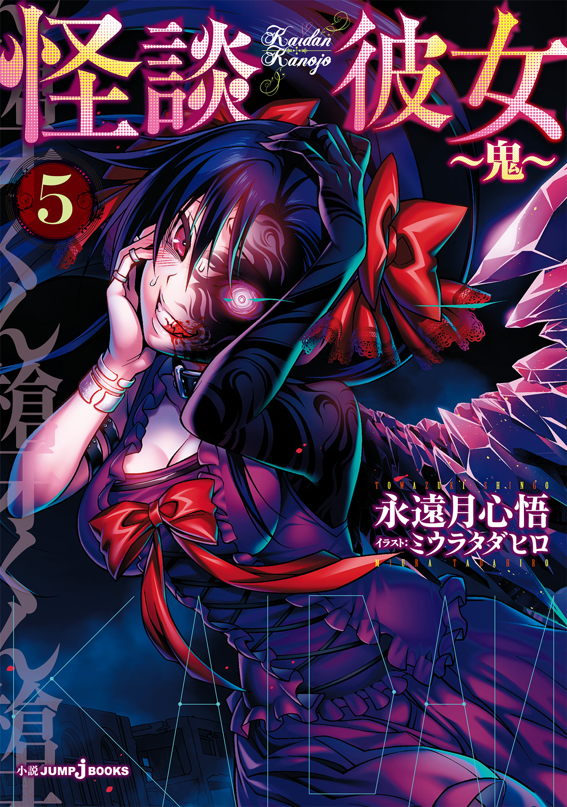
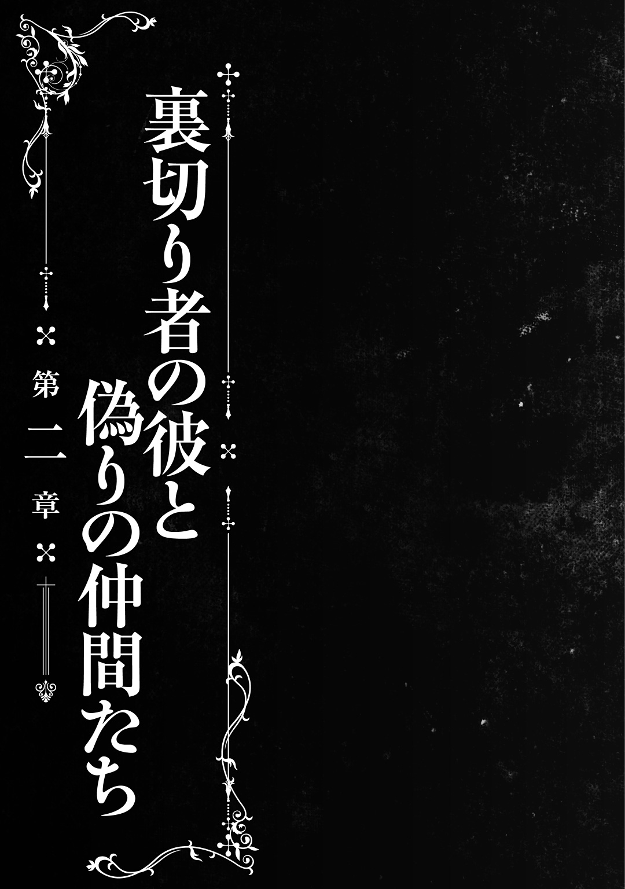

| 怪談彼女 5 ～鬼～ | |
| 永遠月心悟 | |

この本は縦書きでレイアウトされています。
また、ご覧になる機種により、表示の差が認められることがあります。
人物紹介
斉藤槍牙 さいとうそうが

鷹夏中学校１年。
存在しないものをこの世に定着させる『最悪器官』。
黒川夢乃 くろかわゆめの
槍牙の幼馴染で同級生。
槍牙無しでは存在できない『怪異』である。
異常な愛情を槍牙に向ける。
野波小百合 のなみさゆり

槍牙たちと同じクラス。
怪異を滅ぼすための組織『殲』の一員である。
いつもあやとりをしている。ツッコミ担当？
零子 れいこ

怪異『口裂け女』。
現在は『殲』の監視下におかれている。
黒川灯 くろかわともり
『殲』に所属する片腕のない男。
夢乃の父親。
九十代目 煉獄天左衛門 きゆうじゆうだいめ れんごくてんざえもん
体を入れ墨で彩った女性。
怪異のような膂力を誇る。夢乃を攫った。
九十一代目 煉獄天左衛門 きゆうじゆういちだいめ れんごくてんざえもん
高校の制服を着た正体不明の少女。
顔に入れ墨を入れている。
CONTENTS
この作品はフィクションです。実在の人物・団体・事件などには、いっさい関係ありません。
「――ぶはあっ！」
深く潜った水から出たような声を発して、黒川夢乃は覚醒した。汗でびしょ濡れだったし、ぜえぜえと息を荒らげている様子からしても本当に水に潜っていたような姿だったが、そんなことはない。
彼女は拘束されているのだ。手首にかけた手錠の鎖を壁に杭で固定しているため、腕を上げた形で自由を奪われている。そしていままで意識はなかったはずだ。
ここは病院だった廃墟を改装したアジト――私たち煉獄天左衛門のアジトだ。
元々は手術室だった。改装にあたって現代風にしてあり、当然ながら清潔だ。部屋の中央にはいまも手術台がある。隣りあっていた部屋の壁をぶち抜いたため広さは十数帖ほどある。壁も床も抗菌で防水性が高く、そのせいで血だまりが吸収されずに広がっており、私の靴底を濡らす。
血は切断された黒川夢乃の左肩から噴きだし、垂れていた。彼女は息を整えることもままならないまま、ぐったりとしていた首を持ちあげる。真っ青になった顔、くっきりと浮かんだくま、乾いた唇、すべてが血の足りていない人間のそれだ。ぱりぱりに乾いた血の跡を一条残した顔がこちらを向き、ぎらぎらと光る目がきつくにらむ。
「......煉獄、あんた、なにが目的......？」
「『黒龍』ちゃんを外すことよ。もう何度か説明したと思うけれど」
黒川夢乃をさらい、この孤島へと連れてきてから八時間ほど経過している。彼女が気絶している間に黒川夢乃の体を隅々まで調べつくし、データを採取した。どうやら怪異と同じ体質になったのは間違いないようだ。他にも色々と得られるものはあった。
そしてようやく、私の最大の目的――彼女の腕にある呪い、『黒龍』へと手を伸ばした。しかし黒川夢乃の左腕を切断するも、『黒龍』は外れなかったのだ。さすがに痛みで覚醒した黒川夢乃だったが、拘束されていては手も足も出まい。
まあ、拘束がなくとも暴れさせはしないけれど。
「『黒龍』の外し方なんて、私が知っているわけないでしょうが......人の頭の中まで入りこんで、本っ当に不愉快......」
蒼白の顔を憎々しげに歪めて黒川夢乃は吐き捨てた。
私たち煉獄天左衛門が連綿と受け継いできた技術は、刺青術と呼ばれる。特殊な入れ墨を施すことで身体能力を強化したり、特別なスキルを保有したりする術だ。当然、私の体にもいくつか施術されている。『黒龍』も、元は初代煉獄天左衛門の刺青術だ。
私がつくった刺青術の一つ――『魂魄宮』。これは他人の精神や記憶の中に入りこむ刺青術である。いまの黒川夢乃のように対象者の動きを制限してやれば、たやすく成功する。
黒川夢乃の記憶をあらためた。特に彼女が『黒龍』の呪いを身に宿した八年前を重点的に見てきて、私は『黒龍』の外し方を探したのだ。
室内には私と夢乃ちゃん、そしてもう一人いる。
「そいで師匠ぉー。なにか収穫はあったんスか？」
手術台の上で寝そべっている女の子が訊いてきた。お行儀悪く仰向けで寝転びながら飴を舐め、めくれたミニスカートからピンク色のパンツを堂々とさらし、スマートフォンをいじっている。一応これでも仕事はしてくれていたのだろう。たぶん。
九十一代目煉獄天左衛門――私の弟子だ。元々は辻みらいという名前だったため、いまだに本人を「みらいちゃん」と呼んでしまう。整った顔の左半分をおおう入れ墨が特徴的だが、私の手によるものなのであまり「悪目立ち」とは扱いたくない。
「そうねえ。まあそれより、みらいちゃん？ 私が夢乃ちゃんの頭の中にいる間、異状はなかったかしら？」
「ないっスよー」
『魂魄宮』の厄介な点はこれだ。『魂魄宮』を使って対象者の頭の中へと入っている間、私は無防備になる。天敵である黒川灯に大量の仕事を依頼し、他の霊能力者――『殲』という集団の連中を黒川夢乃から遠ざけておいたのも、これが怖いからだった。
奴らは一度だけ、私を殺したことがある。二度目を警戒するのは当たり前だ。
弟子の様子からすると、時間稼ぎはまだ成功しているようだった。データの回収や分析も着々と進んでいるし、あとは『黒龍』をほんの一部でもいいから手に入れることができれば、いつでもとんずらしていい。
まだ『黒龍』そのものは手に入っていない。だが黒川夢乃の頭の中には解除方法のヒントがあった。もう少し粘ってみるつもりだ。
「あ、師匠。なんかこれ、びかびか光りはじめたっス」
弟子の言葉に振りかえる。彼女が手に持つのは受信機で、四角い箱にランプがついただけの簡素なものだ。霊能力者の用いる結界の技術とレーダーを合わせた、特別な機械だった。
それが光るのはある場合だけだ。この離れ小島に何者かが近づいてきている。
黒川灯――黒川夢乃の父であり、私を殺したあいつしかいない。
「さぁて、どうするのかしらね」
左腕の止血もしていないため青い顔はしているが、黒川夢乃はふてぶてしく笑う。回復が異様に早い。父親のほうもこちらの計算よりずっと早くこの場所を突きとめてきた。嫌な親子だ。
嫌だ嫌だ――これでも黒川灯には、多少の恩義も感じていたのに。
だから一応、そこそこ穏便に、黒川灯に近しい奴らには手加減もあったのに。
わざわざ手紙で私の存在をほのめかしてあげて、不用意に近づかないようにと知らしめてあげたはずなのに――それも「ただいま」なんて友好的な言葉で。
灯ちゃんごと、殺さなくちゃいけなくなっちゃうじゃない。
「みらいちゃん。お仕事よ」
顔に入れ墨を入れた我が弟子は起きあがる。私の顔を見ながら、彼女は微笑みを浮かべた。
「なんスか、師匠」
「島に上陸してくる奴らを潰してきて。大丈夫、たぶんこの短時間じゃ、たいした戦力は集められていないでしょうから、さほど苦労しないでしょう」
「全力出していいんスか！」
喜色満面の彼女の気持ちもわかる。力を抑えさせていたことでフラストレーションが溜まったのだろう。余計な怒りを買う必要もないと思い「加減しろ」と命じて昨日仕事をさせたのがつらかったのかもしれない。
口裂け女の零子という娘の足止めを頼んでいたのだが、手加減ばかりで疲れたと言っていた。もしかしたら灯がその口裂け女も連れてきている可能性は高いが、どうやら人間の味方をする怪異らしいので、特段、生かしておいて得はない。
「ええ、なんなら殺しちゃってもいいわよ。あの口裂け女もね」
「あー、零子さんっスか？ ウチは嫌いじゃないんスけどね。ああいう人」
「人じゃなくて、化け物よ」
怪異なんだから、と言ったら「そうっスねー」と辻みらいは笑う。
「でも化け物のほうが愛着わくっスねー。ウチ人間大嫌いっスもん」
ぐううっ、と背筋を伸ばしたり軽くジャンプしたりして、適当に準備運動をする辻みらいに、磔にされて腕を切断されたとは思えぬほど気丈な声で黒川夢乃が言う。
「そこの顔面入れ墨女」
「ん？ ウチっスか？」
他にいるか、と悪態を続け、黒川夢乃はうなる。怖気立つほどの殺気をこめて。
「槍牙くんに手を出したらぶち殺すわよ」
「そーが？」
「みらいちゃん、いいから行きなさい」
辻みらいは愚直だ。黒川夢乃も猪突猛進タイプだが、みらいちゃんはさらにひどい。言葉だけで取りこまれる可能性がゼロではないため、長話をさせたくはなかった。
幸いにも弟子は素直に「はーい。いってっきまーす！」とかしましく出ていった。さて、と残された私と黒川夢乃の視線がぶつかる。
「......言っておくけど煉獄。灯は強いわよ」
「うちの弟子も最高傑作なのよ。頭はアレだけど」
「槍牙くんはもっと強いわよ」
「そうは見えなかったけれど。というか、来るの？ あれじゃあ足手まとい決定よ」
「足手まといじゃないわ。それに私の槍牙くんが、私を迎えに来ないわけがないもの」
「......そ。まあ、いいけど」
わりとどうでもいい。昨日の攻撃で死んだかもしれない。それより私が気になるのは。
――『いい......嬢......が......食え......そし......離れる』
黒川夢乃の記憶の中で『黒龍』がそう言っていたことだ。他の記憶（ほとんどが斉藤槍牙との思い出だった。黒川夢乃の頭の中は、これまで見てきたどの人間の頭の中よりも気持ち悪いと思う。一人の人間に偏執しすぎだ）と比べてノイズがひどく、黒い霧がかかって不鮮明な映像だったが、明確に「離れる」という単語が聞こえたのが気になった。いや、確実にこれは答えに繋がると私は直感する。
『黒龍』は、外せる。
それも母体である黒川夢乃が死ぬ、消えるという方法ではない、別のやり方だ。黒川夢乃を殺してしまうのは簡単だが、それで『黒龍』が素直に外れてくれるか保証がない。死人は蘇らないのだ。それができたのは、私以外に一例きりである。そうそう試せない。
もし他の手段があるのなら是非とも知りたかった。着脱可能になった『黒龍』など、リスクのない都合のいい道具に成り下がるのだから。
なにかを「食え」――摂取しなくてはならない、という条件だろうか。もしそうならば。
その「なにか」を手に入れる必要がある。
問題はその内容だ。それを詳しく知るためにはもう一度、黒川夢乃の中に潜る必要があるだろう。だがいま、黒川灯の接近中は危ない。
私は手術台に腰かける。浮いた靴底から黒川夢乃の血液が粘っこく糸を引いた。
「灯ちゃんも『黒龍』ちゃんを外そうとしているみたいだけれども――手を組むなんて絶対に無理よね。灯ちゃんはきっと、私をまた殺そうとするもの」
「煉獄、あんた『黒龍』を手に入れて、どうするつもり？」
黒川夢乃が地獄の底から響くような低い声で問いかけてきた。そうか。取り憑かれておきながら、『黒龍』ができることは知らないのか。私はなんだかおかしくなって、少し笑いながら答えた。
「私の目的は七十年前からなにも変わっていないわ――世界平和よ」
「世界平和、ですか？」
「ああ。言葉だけからすると、彼女の目的はかなり善良なものだね」
冬の海は寒い。ましてモーターボートで海面を突っ走っているのだ。細かな波しぶきも当たるし、なにより風が冷たい。毛布がなければ夜のうちに凍死していたかもしれないほどだ。東の空から放たれる朝日はまぶしいが、まだたいした熱にならない。
ねえねえ、と隣から袖を引っ張られた。白いマスクをつけた赤いコートの女性である。俺――斉藤槍牙よりもお姉さんらしい外見だが、中身はあんまり年上っぽくない。
口裂け女の零子さんである。彼女は波の音に負けないように俺の耳元で言った。
「なんで『黒龍』が世界平和に役立つのかわかんないんだけど」
「......俺もわからないので、灯さんの説明を聞いているんです」
前の座席を見る。運転席で操舵しているのは珍しく洋装でムートンコートを着ている黒川灯さんだった。その隣に座り、会話の相手をしているのは、こちらも珍しくパステルカラーの可愛らしい服を着たクラスメイト、野波小百合さんだ。
そして俺。この四人で乗ったモーターボートは、もうすぐ孤島に到着する。
鬼龍島と呼ばれるその無人島――かつては炭鉱で栄えた島で、当時は学校や病院などもある大きな街が形成されていたという――に俺の幼馴染、黒川夢乃がいるからだ。
彼女は煉獄天左衛門という怪人物にさらわれた。煉獄はこの手の無人島や不動産をいくつか無許可に根城にしているようで、四辻島という研究所の跡地がある島では、煉獄のいた痕跡と大量の女性の死体があったと野波さんから報告があがっている。
建物が破壊されて、すべて瓦礫の下に埋まってしまったそうだが。
「『黒龍』というのはね、怪異であればなんでも消せる呪術なんだ」
それは知っている。黒川は怪異相手にこれまで幾度も戦ってきたし、倒してきた。
「そして怪異というのはね、人間の想像力や恐怖が生みだしたものだ。理解の及ばない存在への恐怖や、おぞましい想像への恐怖から生まれる」
いままさに隣に座っている零子さんも、口裂け女という怪異の一人だ。零子さん個人はさほど怖いとは思わないのだが、他の口裂け女は残忍そのものだという。
「では槍牙くん、爆弾は怪異かね？」
「は？ 爆弾？」
頭の中に浮かぶのは黒い球体に導火線のついたイメージだ。あとは映画に出てきたタイマー式の爆弾があるぐらいか。確かに火薬がそばで爆発するのは怖いだろうが――
「......爆弾は怪異っていうか、科学って感じがしますけど」
「ああ。だから俺もこれからの話は眉唾と思って煉獄から聞いていた。奴はね、爆弾も怪異になり得るのではないかと考えていたんだよ。爆弾だけでなく銃や戦闘機、いわば兵器の類はすべて怪異として扱えると言っていた」
「そりゃまたすごい理屈で......」
「感覚の違いだろうね。彼女は怖かったのさ。爆弾が降ってくることも、戦闘機が飛んでくることも、空襲警報が鳴ることも、防空壕の中の緊迫感も、軍人も、軍人の背負っている鉄砲や提げたサーベルも――戦争のすべてが、怪異と同じだったそうだよ」
その口ぶりに違和感を覚える。なんというか、まるで煉獄天左衛門本人が戦争体験者であったかのような言い方に思えたのだ。俺の沈黙を察してか、灯さんは言う。
「彼女はあんな外見だがね、中身は九十歳を超えている。この国がまだ戦争をしていたころから生きている、大変な人生の先輩なんだよ」
「......は？」
思いだされる煉獄天左衛門は確かに年齢不詳ではあったけれども、九十歳には見えなかった。本当だよ、と灯さんは俺を振りかえって皮肉げに笑ってみせる。
「火薬の炸裂と知っていれば爆弾だって怪異にはならないさ。弾丸が超高速で射出された金属とわかるのは、そういう知識があるからだね。しかし煉獄が防空頭巾を被っていたころ、彼女にそんな知識はなかったらしい。だから終戦直前も――」
灯さんが少しだけ言葉を切った。波の音、エンジン音が妙に大きく聞こえる。
「『私の愛しいあの人は、ひと様のつくった爆弾でどろどろに溶けて死んでしまった。私の顔もわからずに、熱い熱いと、水を求めて死んでしまった』......煉獄はそう言っていたよ。俺なんぞには理解しきれるものじゃない。あの時代にあった残酷な地獄はね。当時の煉獄には、化け物と爆弾の区別はつかなかっただろうよ」
だから、煉獄はそんな考えに取り憑かれたのさ。灯さんは寂しそうに言う。
「『黒龍』は怪異を殺せる。あいつにとって戦争とは、怪異そのものさ。だからあいつは『黒龍』さえあれば戦争を怪異に見立て、兵器を怪異として扱い、殺せると思っている。戦争という概念そのものを殺して、世界平和を手に入れる。平和のためなら何人だろうと人を殺すなんて、無茶苦茶な歪みだよな。そのために八年前、俺の体を『黒龍』の実験体にしやがったんだ、あいつは......八年前もいまも、その思想は変わらないだろうがね」
煉獄天左衛門は八年前に死んだ。はずだった。
だが黒川ごと『黒龍』をさらい、奴はこんな遠くまで逃げたのだ。
ちらりと腕時計を確認する灯さんにならい、俺も包帯まみれの右手につけた腕時計を見る。いま着ている茶色のダウンジャケットもそうだが、この時計も灯さんから借りたものだ。ごつくて頑丈そうな腕時計は、いま七時四十五分を指していた。
黒川夢乃が俺から離れた時間は、俺の携帯電話の壊された時間からおよそ午後五時三十分と算出されている。離れてから二十四時間というタイムリミットを越えると、もう黒川を救いだすことができない。彼女はこの世界から消えてしまうのだから。
黒川には『黒龍』という呪いが取り憑いている。そいつはあらゆる怪異を倒せる力を与える代わりに、黒川を怪異と同等の存在におとしめた。それゆえ黒川は、『最悪器官』と呼ばれる俺の力を借りてかろうじて現実の人間として生きているのだ。
最悪器官とは、怪談を見聞きしたり怪異に触れたりすることで、その存在を確かなものにする特殊能力だ。自動的で、俺のコントロールは利かない。この力のせいで八年前、俺は世界を滅亡させかけた。
だがその厄介な能力も、黒川夢乃のために役立っている。
たとえなにがあろうとも俺だけは時間内に黒川のもとへ行かなくてはならない。灯さん曰く、サッカーにたとえれば俺がボールで黒川がゴールということだった。
――すべてサポートする。だからとにかく死ぬな。生きろ。そして夢乃に会え。存在を固定させろ。夢乃の存在を最悪器官の力で取りもどしたら、あとはなんとでもなる。なにを犠牲にしてでも、君は夢乃と接触するんだ。
灯さんから繰りかえし言いわたされたことだ。すぐ思い浮かべられるほど脳に刻まれているし、事実そうしなければと強く思っている。
本来なら戦闘能力もない俺を強力な敵、煉獄天左衛門のいる島へ連れていくのも危ないのに、それでもこの船に乗せてもらえたのはこの能力ゆえだ。目の前でみすみす黒川を連れ去られたことへの悔しさもあったが、感情だけで同行は許されていない。幸いにも一度気絶させられていることもあって、俺の激情はまだ落ちついていた。
一番感情的なのは、むしろボートのハンドルをにぎっている灯さんかもしれない。船は波にあらがって激しく揺れ、たまに大きく上下にバウンドする。
「......怒りの度合いなら私も相当むかついているんですけどね」
苛立った声が助手席から聞こえる。野波さんの目はどす黒い色に沈んでいた。後部座席から零子さんが、空気をまったく読まないほがらかさで野波さんの肩をもむ。
「まーまー。たぶん刃心ちゃん大丈夫だってー。小百合ちゃんも元気出して出してー」
「いますぐその首飛ばして黙らせましょうかね？」
零子さんがさっと身を引く。もうこの件に口出ししないとばかりに明後日のほうを向いて「イルカとかいないかなー」などとつぶやいていた。まだいいと思う。乗船前に同じように慰めようとしたら俺は無言で腹を殴られたから。
野波さんはお師匠さんの大徳寺刃心さんと共に別の島で煉獄の罠にかかり、崩壊した建物の下敷きになったという。大徳寺さんがかばったため野波さんは軽い捻挫や擦り傷で済んだというのだが、大徳寺さんは重傷を負ったらしい。いまは病院で手術を受けている。
「......必ず煉獄をぶち殺してやりますね」
低くうなる声は怒気と殺気に満ちていた。対照的に明るい零子さんも同じようにパートナーが傷つけられたそうだが、こういう感情とは元より縁遠いためかまだ話しやすい。俺は前の二人を刺激しない程度の声量で話しかけた。
「零子さんが戦った煉獄って、高校生ぐらいの人だったんですよね？」
「うん、そうだよー。なんかあっけらかんとしている子だった。でもなーんか手加減しているっていうか、命までは奪おうとしないような子だったよ。いい子なのかな？」
「......いい子なら零子さんのパートナーさんを重傷に追いこまないかと」
そりゃそっかー、と零子さんは片手の指にハサミを引っかけてひゅんひゅんと回す。口裂け女の武器だ。船から落とさないでくれとはらはらする。
どうやらそちらの煉獄は弟子だろう、とは灯さんが外見の情報から判断していた。
「あ、そういえばさー。灯さんの腕って、あの煉獄ちゃんの師匠の仕業なんでしょ？」
前の二人のテンションでは答えてもらえないからと、零子さんは俺に問う。俺も灯さんから聞いた話だったのだが、灯さんのはためく左袖を見つつ、おおよそを話した。
「八年前、最悪器官が暴走したとき、煉獄はまだ『殲』の陣営だったみたいなんです。それで灯さんがたくさんの怪異と戦っている最中に、『黒龍』のレプリカみたいなものを良かれと思ってつけたみたいなんです」
「思ったより敵が多くてね。俺も疲弊していた。そんな折、あいつがパワーアップだというから承諾したんだ」
ぶっきらぼうな声だが、灯さんが先を継いでくれた。ほほー、と零子さんはうなずく。
「ところがそいつがとんでもない粗悪品でね。入れ墨の分際で俺の体を乗っ取ろうとしやがった。急いで腕ごとぶった切ったが、落ちた腕はもうただの墨の塊だった。治療しようにも、その腕がもうないんだから止血ぐらいしかできなかった――まあ、いいんだ。失ったものは戻らん」
なるほどー、と零子さんが納得する。そこでまた、会話の種がなくなった。
船のスピードは変わらない。おそらく最速だろうと思えるほど波にぶつかり水しぶきを散らす。もう島までは数十メートルほどしか距離がない。
「黒川灯、ダメですね。結界が島中に巡らされていますね。このまま船着き場を目指したところで、沈没させられるのがオチですね......まあ、さっきレーダーっぽい結界には思いきり引っかかったような気はしますけどね」
「そうみたいだね......野波さんから見ても、隙がないかい？」
「......この方角に真っ直ぐ向かっていくと、ぎりぎり行けますね。でも浅瀬で岩礁に乗りあげてしまいますね。船を捨てて、全員で泳いで岸に上陸するならいいですけどね」
野波さんが言う。ああ、と灯さんがうなずいてからこちらを振りむいた。
「槍牙くん。後ろの荷物を見ていてくれ。特に刀。それがうちにある日本刀で一番頑丈で切れ味が鋭いやつだ。煉獄に対抗するにはそれしかない。失くさないでくれ」
「え、はあ」
返事をして振りかえる。俺と零子さんの座っている座席の後ろには、登山用と思しき大きなリュックサックが鎮座していた。くくりつけられた日本刀は赤い鞘に収まっているもので、ぞんざいに扱われているように見えたが重要なものだったらしい。
そんな話をしている最中も、モーターボートは島へと向かう。少し回ったところに船着き場らしいものが見えるのに、そこへは頭を向けない。結界を避けているんだろう、と思いながらながめていると、船は大きくせりだした岩に向かって速度を上げる。
ちょ、ちょっと、と零子さんもうろたえる。野波さんも灯さんの肩を叩いた。なおも灯さんはスピードをゆるめない。まさか、と思ったところでようやく灯さんの口元が笑む。
「結界が張ってある、唯一入れそうな場所は岩礁で進めない。泳いでいってもいいが、この季節にそんな自殺行為をしたら俺と零子はともかく、野波さんと槍牙くんはほぼ確実に凍死する――なら、飛べばいい。行きには間にあわなかったが、いま迎えとして別の手段を用意してもらっているんだ。船が潰れてもそれを呼んで帰れるよ」
「止めろコラぁ！」
遂に限界を迎えたようで野波さんが灯さんの肩口を蹴りつける。大きく足を持ちあげたのでスカートの中が見えそうになり、慌てて目をそらした。船の行く先には、大きな岩がある。船は真っ直ぐそこへと、轟音を立ててぶつかった。
波に揺られたときなど比べものにならないほどの衝撃が走った。俺は座席の背もたれと後方の荷物を両方とも手で押さえつつ、自分の体が浮くのを感じる。
船が飛んでいた。岩をジャンプ台にしたらしい。そのまま岩礁地帯を越え、島の陸地へと一直線に船が向かう。零子さんが俺の首根っこをつかんでくれたのでなんとか悲鳴もあげずに済んだ。野波さんはさすがに悪態を声高に叫んでいる。
「このボケ神主がぁ！」
「まあまあ大丈夫だろう。おい槍牙くん。刀くれ。あと全員――避けろ」
避けろ？ なにを？ と視線を前方に向けた。一瞬、波の音も浮遊感も忘れる。
人が、この船と同じように空を飛んでいた。
それは俺とあまり年の離れていない女の子のようで、灰色のブレザーを着ており、赤いチェックのプリーツスカートをたなびかせながらこちらへ一直線に飛んでくる。モーターボートの速度も相まってか、ほとんど弾丸のような勢いに見えた。
顔の左半分に入れ墨を入れた、その彼女が。
「煉獄......！」
「どーもっス！ 零子さん！」
相手が明るく言う。零子さんが珍しく鬼気迫る目つきで俺を引っ張った。にぎられているのは襟なので首が締まるも、そんなことに気を回している余裕などない。俺は頑張って荷物を胸元へ引き寄せ、手の感触だけで刀を前方へと差しだす。
ありがとう、と灯さんの声がして刀を取った。俺は空になった手ですぐ自分の喉を守るために襟を引っ張り、気道を確保する。
「槍牙くん、跳ぶよ！」
跳ぶ？ と思った瞬間、また強い勢いで引っ張られた。確保したはずの気道が再び重圧によって塞がれる。ダウンジャケットが破れるかと思った。零子さんの胸元に抱かれたまま風を切る音が鼓膜を揺らす。周囲を確認しようとなんとか首を巡らせ、状況を見た。
その瞬間、ごうんっ、という鈍い音がして、なにかがモーターボートを両断した。
それはあの空を飛んでいた女の子で、モーターボートにキックをして破壊したらしい。冗談だろう、と口の中で思わずつぶやく。飛び散る破片の中で、ヒーローの必殺技みたいにキックの姿勢を保ちながら飛ぶブレザー姿の女の子は、きゃはは、と楽しそうに甲高い笑い声をあげている。ボートを破壊したのがまるで遊びであるかのように。
破片に紛れるようにして、野波さんの姿も空中に見える。悔しげに険のある表情を浮かべているが、どうやら怪我などはしていないらしい。周囲に細かな銀色の光が浮かんでいる。彼女の武器である糸をすでに展開しており、次の手を打つなり安全な着地をするなり考えているようだった。ボートの勢いもあってか、俺と零子さん、野波さんはみな、このまま眼下にある陸地へと降りたてそうだ。落水の心配はないだろう。
そしてもう一人、空中でぎらついた鈍い光を放つ者がいる。
モーターボートから上へ跳んでかわしたようで、一段高いところにいた。ムートンコートの左袖は中身がなく、それゆえ潮風にはためいている。器用にも、鞘に巻きつけた紐を口に咥えて刀を水平に構えると、彼は柄をにぎる。
黒川灯が、空中ですらりと日本刀を抜きはなった。朝日を受けて、その刃は鈍い銀色に輝く。
船を破壊した女の子との距離はさほどない。彼女がはっと見あげた瞬間、灯さんの刀が振り下ろされる。がきぃん！ という強烈な金属音がして、女の子が沖へと吹きとばされた。彼女は武器を持っていなかったようだが、どうやって防いだのだろうか。
「槍牙くん、着地するよ」
零子さんの声と同時に重力を感じる。俺を抱えた零子さん、野波さん、そして鞘を口に咥えたままの灯さんと、こちらはみな無事に着地した。
そして俺も含めて一様に、海に落ちた襲撃者の姿を確認する。即座に、げ、と野波さんが女子中学生らしからぬ潰れたような声を発した。
「......バカですね」
その声にうなずきたいような、それはちょっと、というような気持ちもある。零子さんが「あいつが私と遭遇したほうの煉獄だよ」と全員に情報を伝えてくれたのだけれど、そんなことより目の前の状況を説明してほしい。
問題の張本人――煉獄は、沖からバカでかい声を発する。
「ちょーぉっとぉー！ いきなり痛いじゃないっスかー！」
海にはこれまで見たこともないような大きい水しぶきが上がっていた。それがクジラの潮吹きなんかであればまだ現実味があっただろうに、事態はそんなものではない。しぶきを上げているのは、さっきボートを壊した煉獄だ。
彼女は海面を滑っているかのように、走っていた。特にジェットスキーなどの装備はない。ただのローファーを履いているにもかかわらず、煉獄は素早く水面を蹴ることで、沈まずにその姿を保っていた。細い足から生まれたとは信じがたい高い水しぶきを背負って。
昔、黒川がふざけて「右足が沈む前に左足を出して、左足が沈む前に右足を出す。これを繰りかえすと、人は水面を走ることができるのよ」とか言っていた。バカかお前は、とあのときは笑っていたのが懐かしい。
本当にそれをやる人間がいるとは思わなかった。
「......来るぞ」
灯さんの声は低い。ざざざ、と波を蹴散らす音を立てて煉獄がこちらへと徐々に向かってきていた。そのスピードは加速していき、どこかから引っ張られているんじゃないかというほど速くなった。地面を走るより速いぐらいだ。海から魔物が駆けてくるような心地がして、背筋がぞっとした。
ただの脚力だけで向かってくる煉獄をにらみながら、灯さんが言う。
「野波さんと零子は槍牙くんを連れて先へ行け。罠に気をつけて。あの娘は俺がやる」
ミサイルのような勢いで水面から煉獄が跳びあがってくる。灯さんが刀でそれを受け、再び激しい金属音のような音がした。俺は零子さんにまた抱えられ、二人から遠ざかる。追ってくる野波さんが周囲へ視線を向けながら怒鳴った。
「口裂け女！ この森を抜けたら市街地ですね！ アジトがあるならそっちですね！」
「あいよー、了解！」
零子さんが威勢よく言って返す。島の地図は一応見せてもらっていたが、灯さんから「ずいぶん古いものだからあまり信用しないように」と念を押されていたのできちんと覚えていない。そもそも方角がよくわかっていないのだ。
零子さん、と呼びかけると彼女はマスクの下で笑ったらしい声を発した。
「大丈夫、このまま夢乃ちゃんのところまで一気に突っ走るよ！」
十三歳男子として女の人に運ばれている状況はあまり歓迎できないが、これが最速なのは間違いない。腕時計を確認する。黒川奪還のタイムリミットは、あと九時間と――
「うぉっと！」
周囲から木々の気配が消え、森を抜けた瞬間、零子さんの足が止まる。野波さんも同じように足を止め、俺も首を巡らせて急ブレーキの理由を見た。
「へへへー、逃がさないっスよー」
あの年若い、顔に入れ墨のある煉獄が正面に立っていた。なんで？ さっき灯さんと戦っていたじゃないか。それとも双子とか？ あらゆる考えが頭を駆けめぐるが、答えが出るより先に野波さんが叫んだ。
「最悪、口裂け女、かっ飛べ！」
野波さんが両腕を引き下げ、上げる。その瞬間、糸がどう繋がっているのかわからないが俺ごと零子さんの体を浮かせた。逆バンジージャンプでもしたかのような勢いで上空へと持ちあがり、零子さんに抱きしめられたまま数メートルの高さまで飛ばされる。眼下では野波さんが、糸をからめた両腕を振りあげ――
「無防備っスね。チビちゃん」
「背が低くて悪かったですね――っ！」
いきりたった野波さんが威勢よく言ったときにはもう、煉獄がすぐそばまで接近していた。煉獄が振るった拳は小柄な野波さんの頭上を真横に通っていき、彼女の肘から先を吹きとばす。
「な......あ、ぐう、ああああああああああっ！」
野波さんの絶叫がこだまし、彼女が両腕を砕かれた血煙の中で膝をつくところで、その姿は木の陰に隠れて見えなくなった。野波さんが俺たちを逃がしてくれた代わりに、犠牲になって、あんな、両腕を、破壊されて――
「槍牙くん着地する！」
零子さんの声ではっとした。次の瞬間、数メートルの高さから地面に向かって叩きつけられる。零子さんが綺麗に着地してくれたのでダメージはないが、頭は揺さぶられた。
そうだ。止まるわけにはいかない。野波さんは俺たちに、目的達成を託したに違いないのだから。俺たちには黒川奪還という、大目的がある。
頭を切りかえようとする理性と、それができない部分とで視界がぐるぐる回る。ふらついた頭でも、どうにか周囲を見わたす。
森を抜けたら市街地、という言葉通り、そこには廃墟が墓場のようにひしめきあっていた。かつてはここに人が住み、店も活気があり、栄えていたのだろう。けれどもそれらはすべて残骸となっていた。コンクリートでつくられた建物は潮風によるものかぼろぼろになっており、朝日に照らされた姿が余計に空寒く感じられる。窓ガラスも大半が割れているようだった。
この中のどこかに、黒川が。
「っ！ 槍牙くん避けて！」
えっ、と声を出す暇もない。人間離れした零子さんの怪力により、俺は地面と水平に空中に投げとばされてしまう。空中を回転していきながら、零子さんがいきなり俺を廃墟の街へぶん投げた理由がわかった。
零子さんの後ろに、あの煉獄がいたのだ。
まさかまた――あんな一瞬で！
「零子さん見ぃーつけたっ、ス！」
零子さんの腕が「行って」と言うかのようにこちらへ払われた。その瞬間、煉獄の足がローキックを放った。肉眼で見えるぎりぎりの速度で、威力は並みではないのはさっきの野波さんとの戦いでもわかる。
零子さんの両脚が、千切れて吹きとんだのだ。
「ぐうっ！ うあ......がああっ！」
痛みをこらえるような悲鳴をあげる零子さんの頭を後ろからつかみ、煉獄は彼女の頭をコンクリートの中へと叩きこむ。やめろ、という声が出る前に俺も廃墟の窓から建物の中へと飛びこんでしまう。わずかに残っていたガラスや、朽ちかけた窓枠を破壊しながら砂に近い瓦礫片の中へと転がっていく。
昨日潰された右手をしたたかに打ちつけて激痛にさいなまれるが、それどころではない。野波さんと零子さんが、あんな、ひどい目に。
「零子さん！」
自分が入ってきたばかりの窓枠から外へと飛びだす。煉獄はなにか思うことでもあったのか、両脚のなくなった零子さんの体を片手で持ちあげる。支えのない零子さんの体はぐったりとしており、それでも俺に向けて手を払った。
行って――それしかないのだ。自分の呼吸が深く激しくなるのがわかる。こんな風に仲間を置き去りにして進むことに、わずかな迷いが生まれる。
んん？ と煉獄が大仰に首をかしげてこちらを見た。にっ、と笑う。
「歯ごたえないっスね。ウチが本気出したら、みんなこんなもん――」
「槍牙くん行け！」
不意に怒号が響いた。周囲を見るも、もう肉眼が追いつかない。それほどの速度で灯さんは煉獄へ接近し、刀を振るった。煉獄が零子さんを放り、灯さんをかわしながら上へ跳ぶ。追うように灯さんも空中へおどりでた。灯さんが刀と足技で煉獄と戦う。激しい連撃だったが、煉獄は涼しい顔で受けているようだ。服が破れ、ほつれるものの本人は一切のかすり傷すら負わない。どこか笑っているぐらいの顔で応戦していた。
対して灯さんは、全体的に塵芥や土で汚れており、どことなく動きもぎこちない。体のどこかを痛めたのをかばっているようだった。
こちらの劣勢は間違いない。それでも、俺になにができるのか。
あんな風に戦うことなどできない。逃げきれるのか？ いや、それより。
逃げるのか？ 黒川夢乃を置いて。
単純に捕まっているだけならそれも手だったかもしれない。命の保証があるというのならば、考えても良かった。でも黒川には時間制限があり、なにより九十代目を名乗ったほうの煉獄天左衛門は俺に冷酷な印象を与えていた。いま黒川がどうしているか。
槍牙くん、と力ない声がどこかで聞こえる。零子さんだった。慌てて駆けよる。
「あれは......戦わない、で......まっしょう、めん......から、ダメ......」
それほど強いということか。目の端では灯さんが苦戦しているのが見えた。じり貧の状況は理解しているつもりだ。
――すべてサポートする。だからとにかく死ぬな。生きろ。そして夢乃に会え。存在を固定させろ。夢乃の存在を最悪器官の力で取りもどしたら、あとはなんとでもなる。なにを犠牲にしてでも、君は夢乃と接触するんだ。
「......いちかばちか、か」
思いついたそれは愚策だっただろうか。でも現状打破の一つではあったと思う。零子さんが訴えかけてくる視線を引っぺがし、俺は立ちあがる。
灯さんの刀が煉獄に弾かれ、こちらに飛んできて地面に突き刺さった。素手になっても灯さんは煉獄に立ち向かい、拳や蹴りといった技を叩きこむ。それらもすべてノーダメージであるのが、煉獄のへらへらとした様子からよくわかる。
「なーんスか。師匠からすっげえ強いって聞いていたんスけどねー、灯さん」
「うるせえな小娘風情が！ 槍牙くん！ 君は先に行け！」
「おい――煉獄」
灯さんの指示を無視した。灯さんの拳を片手で軽々と受け止め、はい？ と煉獄がきょとんとした顔を浮かべる。
「お前らの目的はなんだ？」
「槍牙くん！」
灯さんが煉獄の腹を蹴りつける。よろめいた彼女はしかし、続く攻撃をすべてガードしながらへらへらとした声で俺の質問に答えた。
「目的ってー、そりゃ師匠はあのゴスロリちゃんの左腕の入れ墨が欲しいんスよ。つっても、腕ぶった切っても離れなかったんスけど」
腕を、ぶった切った。
「お前、いまなんて......っ！」
「小娘貴様ぁ！」
俺の頭にかっと血が昇った瞬間、怒りの炎に油を注がれた灯さんが吠える。一瞬でこっちの頭が冷えた。気おされてはっとするような、それほどの怒号だったのだ。
そうだ。俺が怒りで我を忘れている場合ではない。俺がすべきことは、この状況を打破する方法は、別にある。
空気がびりびりと震えるほどの怒号と共に繰りだされた一撃は煉獄の腹部へと沈みこむものの、煉獄にはダメージを受けた様子がない。灯さんの怒りの一撃ですら、平然と受けとめる。
「んでー、しゃーないんでいまどうするか考えている感じっスかね。あ、ウチは師匠に言われたんでみんなぶっ倒しに来たんスよー」
灯さんが雄叫びをあげながら煉獄に連打を打ちこみつづけるも、煉獄はぶれない。俺は怒鳴るように彼女に問う。
「その師匠とやらについている理由は！」
「んー、まあ師匠はアレなんスよー。ウチに力をくれたんス。んでー、ウチのためにある人を見つけてくれるっていう話なんス――んあー、ちょいオッサン」
不意に苛立った声を出した。どんっ！ と大砲でも撃ったような激しい音がして、灯さんの体が三メートルほどの高さまで吹きとぶ。斜め上方向にキックを食らったようで、俺の頭上を飛び越えてそのまま灯さんは地面に叩きつけられた。すぐに姿勢を整えるも、その表情は明らかに痛みをこらえたものであり、右手が腹部を押さえていた。
へらへらと笑う煉獄が、視線だけ冷たくして灯さんに吐き捨てる。
「痛えっス。フルパワー出しちゃうじゃないっスか」
「......出してみろや小娘」
地面をも震わすような低い声だったが、それが虚勢であることは俺にもわかった。それほどまでに灯さんには余裕がなかった。
煉獄は目を細めて俺を見る。
「そういや君、あのゴスロリ女の言っていた、えーと、なんとかくんスか？」
「......斉藤、槍牙です」
目の前で野波さんと零子さんを救えなかったことが、口をからからに渇かしていた。
「あー、なんかそんな名前だったような？」
んむー、と気楽な声を出しながら唇に指を押しあてて煉獄は考えごとをしている。いまのうちになんとかしろ。なんとかするんだ。俺が。
なにを犠牲にしてでも、黒川夢乃のもとへ。
「煉獄。俺にあなたたちを、手伝わせてください」
「は？」
気の抜けたような声が煉獄から発せられた。おい、と後ろから灯さんの低い声も響く。彼は整っていない足取りで俺の背後まで来て、もう一度、おい、と言った。
きっとそうするだろうと思っていた。だから簡単に動けた。
こんな風に日本刀を持ったことなどなかったけれど、左手に右手をそえて力いっぱい突く。
灯さんの腹部に、ずぶりと刃が滑りこんだ。
「......ああ？」
本当にいい刀だったのだろう。ずるりと肉を血で滑る嫌な感触を手に伝えながら、刀は一気に根元まで押しこめられる。灯さんの胸元に顔が当たりそうなほど接近した。灯さんの得物が、彼の腹に深く沈む。ここからは見えないけれど、おそらく背中へと貫通していることだろう。
「灯さん、すいません」
煉獄にも聞こえるぐらいの声で言ってから、小声に変えた。
「これしか、手がないんです」
「......どういうことだ」
気を遣って声を控えてくれたのかと思ったが、違う。おそらく本当に腹に力が入らないのだろう。かすれた声が、あまりにか細く聞こえる。がしりと肩をつかまれるも、俺は刀を持つ手をゆるめなかった。
「これで黒川のところへ行けます。野波さんと零子さんは、頼みました」
正直、野波さんの安否にだけは自信が持てないのだけれど――
裏切り者になれ。煉獄に近づけ。仲間になったふりをしろ。黒川夢乃のもとへ行くためならば、どんなものでも利用し、犠牲にしていけ。
灯さんにそれが伝わったのかはわからない。彼の長身は脱力し、ゆっくりと倒れた。俺は巻きこまれることもなく、少し身をかわすだけで済んだ。手がぬるぬるとしている。両手を見た。
真っ赤に濡れた左手と、包帯に血の染みこんだ右手は、鉄錆の匂いを凝縮させており、むせかえりそうだ。
「......ええっとー」
呑気な声が聞こえる。もうこの場でそんなのんびりとした声を出せるのは一人しかいない。俺は振りかえった。いまにも泣きだしそうな気持ちも、吐いてしまいそうな弱音も、なにもかもを封じこめる。自分がどんな顔をしているのか、自覚できない。
それでもなるべく、警戒心を持たせない演技を心がけた。
「俺は最悪器官です」
「さいあく。きかん。変な名前っスね」
的外れなことを言う煉獄に近づく。足が震えていた。それが大怪我を負った野波さんを見捨てたり、零子さんをみすみす目の前で傷つけられたり、この手で灯さんを傷つけたりしたゆえのものなのか、相手に俺の考えなど見透かされていて殺されるかもなという恐怖からくるものなのか、判然とはしない。すべて混ざっているのかもしれなかった。
「俺は、黒川夢乃の存在をこの世に留めておくことができます。怪異を現実のものにすることも。お師匠さんから聞いたことはありませんか？」
ふるふると首を横に振られる。あんまり難しいことはわかんないんスよねー、と言っている。そんな気はしていたんだ。少なくともこの煉獄は、頭を使う役目は向いていない。むしろもっと気楽そうだ。当然、そんなのはただの印象なのだけれど。
賭けてみたかった。こいつならつけこめると、信じたかった。
「じゃあ、これから行きましょう。お師匠さんに聞けばわかるはずです。最悪器官の能力はお師匠さんにも有用ですよ。連れていったほうがいい。きっと喉から手が出るほど欲しがりますよ。俺はいまから煉獄天左衛門の陣営につきます」
「......手、どうやったら喉から出るんスか？」
「......もののたとえ、ってやつです」
「ふーん......えーと、えー、でもなー、どうしようっかなー......」
ぶつぶつとつぶやき、悩んでいるようだった。理解していないのかな、と不安になりもう一度、重ねて言う。
「だから、俺は灯さんたちを裏切るんです。煉獄の仲間になるっていうことですよ」
「え？ 仲間？」
「はい、そうです」
「ほお......仲間」
仲間ねえ、と幾度もつぶやき、弟子にあたる煉獄天左衛門はしばし悩んでいるような仕草を見せた。やがて理解が及んだのか、あるいはどうするか決めたのか、うん、とうなずいて俺の言を飲みこんでくれた。
「わかったっス。仲間っスね！ ウチと君は仲間っス！ んじゃ、とりあえず師匠のところに連れていくっスね。少なくとも、いま灯さんを潰したのは間違いなく君なんスからね......えーと、君って名前なんスか？」
「......斉藤槍牙です」
二度目の名乗りをあげながら、周囲を見た。零子さんは大怪我をしていたが息をしている。怪異だから死にはしないだろう。野波さんはどうかわからないが、腕だけならばもしかしてと期待してしまう。灯さんは、ただただ信頼するしかなかった。彼は死なない。あの黒川夢乃の実の父親が、俺ごときの攻撃で、こんなあっさりと死ぬわけがない。だから。
みんな生きてくれ。俺は裏切り者として、黒川夢乃のもとへ行く。
黒川消失まで、あと八時間五十三分。

「――要らないわよ、別に。最悪器官ちゃんだろうが斉藤槍牙ちゃんだろうが」
黒川夢乃を拉致し、その際に俺を蹴りとばした師匠の煉獄と会えたのは、俺が灯さんの腹に刃を突きたてた四十分後だった。
煉獄天左衛門の根城は、旧病院跡だった。外観は廃墟そのままだったし、ロビーも荒れ果てている。弟子の煉獄に連れてこられたときは「こんなところで寒くないのか？」と思ったものだが、ロビーから角を二度曲がってからは別世界だった。防火扉を玄関代わりにしており、そこを開くと足ふきマットがあって、その先には清潔な白い廊下が広がっている。掃除ロボットまでいたし、暖房も効いていた。
弟子煉獄に言われて靴底をマットで綺麗にし、彼女と俺の体に付着していた血液もタオルで拭い、奥へ行くとこの師匠煉獄が廊下の真ん中に立っていたのだ。彼女は琥珀色の飲み物（ウイスキーじゃないかと思う。わずかにアルコールの匂いがした）が入ったグラスを片手に俺をにらみ、開口一番言った。
――黒川灯ちゃんは？
俺のことは眼中になかったようだ。弟子煉獄が「ちゃあんと始末してきたっスよー」とほがらかに告げたので、それ以上の報告は求めなかった。まだ息があったことを説明しなかったことに意図はあるのか、それとも本当にもう問題ないと判断したのか。
師匠煉獄はそれからグラスの中を飲みほし、どこかへ行こうとした。石ころのように無視されているのなら勝手に歩きまわらせてもらおうかと考えたのだが、弟子煉獄がわざわざ俺のことを話してしまう。
いや、おそらく本当に勝手に歩きまわったら躊躇なく殺されるとは思うが。
それぐらいの冷徹さは、いまの師匠煉獄からも感じた。鷹夏市で会ったときとは服が違うが、タートルネックのシャツにスリムパンツという出で立ちには共通性がある。細身にフィットした服がどうやら好きらしい。屋内だからか帽子は被っておらず、パンプスを履いているので長身が余計に高く見える。弟子煉獄も俺より頭半分ほど上背があるが、師匠煉獄は弟子より頭一つ分以上高い。
それでようやく俺が灯さんを裏切り、最悪器官の力を手土産に煉獄陣営についたことを弟子から聞いた煉獄は「要らない」ときっぱり告げたのだ。
彼女は俺を威嚇するように細めた目でにらみながら近づき、ねえ、と話しかける。
「あなたが最悪器官ちゃんであることが、どうして私の得になると思ったのかしら？」
「......なりませんか？」
いまさらだが――なんでこの人「最悪器官」にも「ちゃん」づけなんだ？ 特に理由はないのだろうか？ しかし「ちゃん」づけで呼ばれるのは薄気味悪い。
「ならないわね。あなたは黒川夢乃ちゃんを助けたいのだろうし、順当に考えればあなたがこうして寝返ったのは嘘......罠かもしれない」
「でも灯さんのお腹に、刀ぶっすー、ってぶっ刺したんスよ？」
「あなたは誰の味方なの、みらいちゃん？」
困ったような顔を浮かべ、師匠が弟子にため息をつく。「みらいちゃん」という呼称が気にはなったが、いま尋ねることでもない。この建物のどこかに黒川がいるのだという考えから少し気がはやるも、失敗はできないと自分に言い聞かせてなんとか落ちつきを保つ。ここに来るまでに考えていた言い訳をなるべく慎重に口にした。
「『殲』は、最悪器官の敵です。勿論、あなたたち煉獄の敵でもありますけれど」
弟子に向いていた顔をこちらに戻す師匠煉獄は、やや目を細めた。
「確かに最悪器官ちゃんの能力は『殲』みたいな、怪異から人類を守ろうとする連中とはちょっと合わないかもしれないわね」
「そーなんスか？」
「ええ。最悪器官ちゃんは見聞きした怪異を現実のものとするから......と言ってもね、これまで最悪器官ちゃんを管理、保護してきたのも『殲』だったのではないかしら？」
「ええ――表面上は」
時折はさまれる弟子煉獄の呑気な言いまわしが、若干ながら俺の気持ちを楽にしてくれている。あくまで気持ちの問題だが、少し助かる。ここでしくじりたくはない。
「最悪器官は過去に何度か、『殲』の一部から命を狙われています」
「でしょうね。生かしておいたところで百害あって一利なしだもの」
「でも、俺はここにいて生きている。何故かわかりますか？」
上手いこと会話はできている。さあ？ と言いながら煉獄は俺をいますぐ排除しようとかせずに話を聞いてくれているのだ。チャンスだと思った。
「最悪器官の力は『殲』にとってもみすみす手放せないものなんですよ。やろうと思えば世界を滅ぼせるものを他人の手に渡せるわけもなく、研究材料になるからと、俺は『殲』に生かさず殺さず囚われている――俺の存在は『殲』にとっての脅威、交渉材料になりますよ。いわば人質としての価値がある」
「......それが？」
一瞬、煉獄の顔がたじろいだ。俺には一つだけ、確信があった。
煉獄は灯さんを含め、『殲』を恐れていた。だから仕事を集中させて忙殺されるように仕向け、すぐに対策を取られないようにしていたはずだ。灯さんだけを封じようとしていたのならともかく、他のメンバーにも同じだけのことをしていた。
彼女は『殲』そのものも恐れている。
「俺の身柄一つで『殲』全員を封じこめられる上に、俺一人ならあなたたちにだって管理しやすいはずです。みすみす殺すよりも生かして利用したほうがいいと思いますよ」
「......槍牙ちゃん。あなた、なにが目的？」
「命乞いですよ。目の前で零子さんや野波さんが殺され、灯さんさえもぎたぎたにされたのを見て、ああは殺されたくないと思ったんです」
黒川を助けねばならない、とは言わなかった。
嘘でも「殺された」なんて扱いをしてしまったことを心中で野波さんと零子さんに謝りながら、煉獄の動向を観察する。奴は数秒、黙りこんだ。それから視線を滑らせ、自身の弟子を見ると、少し言いにくそうに口を開いた。
「......みらいちゃん。奥には近づけさせないで。そうね......診察室にでも閉じこめておいて。あそこならベッドもあるし、寝てもらっていなさい。拘束はしちゃダメよ。あなたの力でやったら殺しかねないもの。殺したら人質としての価値がなくなる。あと、絶対に目を離しちゃダメよ。いいわね？」
「うーっス！ 了解っス！」
跳びはねるように両手を挙げる弟子煉獄は、妙に幼く見えた。精神的に甘いところがありそうだからつけこんだのだけれど、本当に無邪気そうな人に思える。
しかし――「奥」ね。
そこに黒川がいるのか。
「また後で見に行くから、先に連れていって。槍牙ちゃんが変なことをしたら......腕ぐらいならもいでもいいわよ。たぶん、それぐらいでいいでしょう」
「わかったっスけど......腕だけでいいんスか？」
「普通の子はそれだけでもう抵抗なんてしてこないし、ともすれば死ぬから」
「うえー。がっちゃん弱いっスねー。このこの」
何故か「がっちゃん」呼ばわりされた上、弟子煉獄に脇腹をつつかれる。くすぐったいやら痛いやらで身をよじっていると、師匠煉獄に「遊んでいないで」とたしなめられた。
......槍牙ちゃん、で「がっちゃん」なのか。師弟そろって「ちゃん」づけが好きだな。
師匠煉獄が廊下の奥へ進み、弟子は俺に「こっちっスよー」と案内を始める。師匠煉獄とは逆方向になる。この建物はどれぐらいの大きさなのか、黒川はどこにいるのか。すぐには理解できない。腕時計を確認すると、タイムリミットまであと八時間ほどだった。
「すみません、トイレどこですか？」
廃墟のままだったら使えない手段だったが、思ったよりも綺麗に改装されている。下水道関連がどうなっているかわからないが、トイレぐらいはあるだろう。
「あー、こっちにあるっスよ」
弟子煉獄はこっちこっちと手招きしてくる。この病院跡へ来るときもそうだったが、おこないや怪力、残虐性に反して意外と普通の人っぽく見える。利用しておいてひどい話だがかなり素直に人を信用し、考えが回っていないところや子どもじみた部分はあるものの、基本的にはそこそこ親切でもあった。
つい、この人はなにも悪事を働いていないと勘違いしてしまいそうなぐらいに。
否、雰囲気に流されるな。こいつは野波さんの腕を粉砕し、零子さんの脚を千切ったのだ。灯さんに手を下したのは俺だが、それでも俺の仲間たちを破壊したのはほかでもない、この弟子煉獄だ。
「はい、ここがトイレっス。ウチはこの場所を覚えるのに苦労したんスよー」
「そんなにこの建物、広いんですか？」
「わりと広いっスね。あとほとんど廊下に特徴とかないじゃないっスか。師匠はそれで困らないみたいなんスけど、やっぱりウチは案内札とか地図とか欲しいっス」
見取り図などはなし、か。心中でため息をこぼしながらクリーム色の引き戸を開くと、中は洗面台も備わっている個室になっていた。ほっとする。少し座って考える時間が欲しかったし、一息つきたい気分だった。
師匠煉獄との対面は、一度蹴りとばされていることもあってかひどく消耗するのだ。弟子煉獄との話も、しばしば毒気を抜かれて疲れる。一人になりたかった。
個室の中に入り、ながめる。窓があればそこから脱出して監視から離れる、ということも考えていたのだがそういったものはない。換気口も俺の体が入れない大きさだった。
どん、と扉が閉められる。
弟子煉獄が、一緒に中に入ってきていた。
「............あの」
「ん？ なーんスか？」
「いえ、用を足したいのですが」
まさかトイレの中まで監視するつもりなのか？ 殺されなかったとはいえ、まだ信用されきっているわけでもない。さすがにトイレまでは来るまい、と思った自分の考えの甘さに舌打ちしたくなった。
当の弟子煉獄は、きょとんとした顔を浮かべていた。
「足せばい......あ、そうっスよね」
弟子煉獄はわかったようにうなずき、俺のベルトを外してズボンを下ろ――
「なにしてんだコラ！」
思わず黒川にするような勢いで頭を叩いてしまう。俺の腰ぐらいの位置に頭が下がっていたので、非常に叩きやすかった。彼女は、ぽかぁん、とした顔で俺を見あげる。
「なにするんスか。せっかくズボンとパンツをおねーさんが下ろしてあげようと......」
「一人でできますよ！ ちょっと、離れて！」
「え、だって右手に包帯巻いているから......」
弟子煉獄が指さすのは、俺の右手だった。血の染みた包帯は、なるほど、はた目にも痛々しく映る。
怪我をしているから用を足すのも苦労するだろう、と気づかったということらしい。大丈夫ですから、と俺は頭を叩くほど焦ったことを詫び、きちんと説明した。
「これから用を足すので、出ていってください」
「ダメっスよ。ウチ、師匠に目を離すなって言われているんスもん」
......どうやら監視については本気らしい。
「じゃあドアの外で見張っていてください。大きいほうなんで見られるのは嫌ですし、下半身だろうと出したものだろうと、あなただって見たくなんてないですよね？」
「え？ うーん、そうっスねー......でもウチは別に気にならないっスね」
気にしろよ。
「......じゃあ目の前で本当に用を足してもいいんですか？」
どういうわけかトイレに入ったら、本当にもよおしてきた。早く出ていってほしい。
弟子煉獄はにっこりと笑い、ついでに親指を立てて元気に言ってのける。
「うっス！ じゃんじゃん出すっス！ しっかり見ておくっスからね！」
じぃー、とわざわざ口で言いながら弟子煉獄はにらんでくる......いやいや。
結局、十分以上の押し問答の末、俺の顔が見えるように個室内に大判のタオルを張って、後ろを向いた弟子煉獄に目を閉じ耳を塞ぎ口で呼吸してもらいながら用を足すこととなった。
......考えをまとめることも小休止することもできなかった。
通された部屋は本当に病院の診察室のようだった。ただし壁をぶち抜いて改装してあるようで、学校の教室一つ分ぐらいもある。簡易ベッドもいくつかあるし、椅子や机も大きい。ついたての向こうには薬品棚のようなものもあるが、中身は書類の束などであった。迂闊に怪異がらみのものを見たら危ないので、俺は気をつけてベッドに腰かける。
弟子煉獄が俺の横にぴったり並んで座った。
「......いや、なんで密着してくるんですか」
「この部屋、寒いんスよー。がっちゃんあったかいっスねー」
あまつさえ抱きついてきた。黒川よりも肉がないのか少し骨張っており、やや固い感触を覚える。柑橘系の匂いがするシャンプーか香水を使っているのだろうか、オレンジを思わせる爽やかな香りがした。
確かに人と触れていれば温かいが、あまり歓迎すべき状況ではない。
「......人懐っこいってよく言われます？」
「やー？ あんまり言われないっスよー？」
こんなに馴れ馴れしく人にべたべたするくせに、言われたことはないのか。
「ウチ、だいたい人嫌いっスからねー。そんなに懐かないっス」
「......じゃあ、もうちょっと離れませんか？」

「えー。でもがっちゃんもう仲間じゃないっスかー。仲間はいいんスよ」
どういう基準で動いているんだ、この人は。
「仲間、大事っス。ウチは仲間とかソウルメイトとか、そうなってくれる人のこと好きなんス。だから師匠とか、がっちゃんとか。大切にしたいんスよ」
そういえば弟子煉獄に取り入ろうとしたとき、仲間と言ってから妙にうちとけていた様子だった。気のせいかとも思ったが、なにかこだわりでもあるのだろうか。
「......仲間っていうだけで、そんなに大事なんですか」
言ってから「しまった」と思う。信用してくれているのなら黙っておけば良かった、と内心で焦るも、特に弟子煉獄は疑問に思わなかったらしく続けた。
「大事っスよ。ウチはね、ウチのこと好いてくれるなら人でも怪異でも好きっス。でも普通の人はウチのことあんまり好いてくれないっスよ。ウチのこと奴隷とか役立たずとか、ひどいこと言うっス。だから怪異のほうが、ウチは好きっス」
「......そんなひどいこと言う人間ばかりじゃないと思いますけどね」
気取られなかったようだ、と胸をなでおろす。しかし奴隷とか役立たずとか、個人的には一生口にしたくない暴言である。当然、言われたくもない。
「ウチは言われて育ったっス。ずっとずっと、そういう生き方していたっス。ねえ、がっちゃん。ウチ、ちゃんとがっちゃんのこと仲間って思えるように、見てもらいたいっス。がっちゃんのことちょっと――試してもいいっスか？」
あどけない顔で首をかしげてくる。一瞬だけ動揺しそうになるが、自分はいまスパイなのだと思い気を張った。ええ、どうぞ、となんでもないように応じる。
じゃあっスねー、と弟子煉獄があっけらかんとした声で立ちあがり、俺の前に立つ。ブレザーの中に両手を入れ、もぞもぞといじる。スカートのホックを外したようだ。そのまま右手でブラウスとブレザーを、左手でスカートを、下着ごと。
大きく上下にずらし、下腹部から太股ぐらいまで、肌を露わにした。
「仲間なら、こういうのも受け入れてくれるっスよね？」
焼けた肌。ただれた傷痕。明らかに変形してしまった輪郭。赤く、青く、変色している箇所。歪んだ骨が皮膚の下から出っ張る。入れ墨とは違う。黒く、図案があり、ともすれば美しく彫りこまれた刺青術とは決定的に違っている、崩れた肉と壊れた体。刻みつけられた、凌辱の証。
誰がやった。誰がなんのために、こんなことをした。
煉獄か。
「これ、ウチの親と学校の連中にやられたっス」
はっとする。彼女の顔を見た。暗く沈んだ虚ろな瞳は、左半分をおおう入れ墨と相まって生気がない。つくりものの、人形みたいな顔だった。
親と、学校の連中。なんだそれ。そんなの、生活のほとんどじゃないか。
「ウチは人間が嫌いっス。人間は、ひどいことをするっス......ねえ、がっちゃん。がっちゃんは、ウチのことキモいっスか？」
「......いや、全然」
気持ち悪いとは思わなかった。ただ、なんというか。
悲しかった。傷や過去を、目の当たりにしてしまうと。
零子さんを思いだす。零子さんのマスクの下も、俺は、直視したことがあった。
「......ん。そーっスか」
弟子煉獄の表情が平素のものへとゆっくり戻っていく。ふふふ、となんでもなかったように笑顔を見せた。まだ少し、ぎこちない笑みだ。
裸のまま、抱きついてくる。俺が座っているせいで身長差が生じ、俺の顔に彼女の温かいお腹が当たる。女性の素肌に触れていることにドキドキするには、あまりに悲しみが強すぎた。
オレンジの爽やかな匂いがした。俺はほんのわずか、迷った。彼女を抱きかえすべきだろうか。それともそんな、同情心で慰めるべきではないのか、どうか。
逡巡している内に、弟子煉獄はゆっくりと、声をこぼす。
「これでがっちゃんは、ウチらの本当の仲間っス。ウチのこんな体、嫌わないっス。悪く言わないっス。拒まないっス。気持ち悪がらないっス。怖がらないっス。ちゃあんと受け入れてくれたっス。ね、がっちゃん。ウチのこと嫌わないがっちゃんを、ウチは認めるっス」
なにも返せない。確かに嫌わないし、悪く言うつもりもないし、拒むこともないし、気持ち悪くなんてないし、入れ墨はともかく怖くはない。
弟子煉獄は満足げに何度も俺の頭、つむじ辺りに頬ずりをした。しばらく、犬や猫に懐かれているときのような気分を味わっていたときである。突然、弟子煉獄が言った。
「あ、そーっス。がっちゃんにこっちばっかり見せるのアレっスよねー」
そこで身を離し、煉獄はブレザーやカーディガン、ブラウス、下着を脱ぎ、上半身とお尻を露わにして背中を向ける。
「がっちゃんに見せてあげるっス。ウチの背中。仲間なんで自慢したいんス」
見たいとも思わないが、見たくないときっぱり言ってはねのけるのもはばかられた。
今度は彼女の体の暗い部分ではなく、左半身を染める広範囲の入れ墨に目を奪われた。
龍、虎、狼など動物を模したデザイン、ツタのような植物めいた柄、数字、英字、梵字などあらゆる入れ墨が彫りこまれていた。彼女はその背中をさらす。
両のこめかみから二本の角を生やした女の子の彫り物が、黒一色で染めあがっていた。振袖のような服を着ている彼女はあくまで入れ墨の図案ではあるが、妙に落ちついた存在感を放っている。
「これ、鬼っス。ウチの一番大好きな怪異っス」
「......鬼」
「元の絵、ウチが描いたんスよ。結構そっくりっスよねー」
そっくりって誰とだ。そう言いたい気持ちを抑え、はあ、絵、上手いですね、とあいまいに返事をする。
「へっへへー。やることなくなっちゃったら、絵のお仕事もいいなってちょい思っているんスよ。ウチ、人にはひどいことされたっスけど、この鬼には良くしてもらったんス」
「良くしてもらったっていうのは......？」
「ん？ あー、だから十歳のときから、この鬼に育ててもらったんス」
......育てて、もらった？
一瞬の沈黙が流れる。それ以上問いただすべきか、いや、好奇心を持って寄り道をしている場合ではないか、と意識を切りかえるのに時間がかかったのだ。
弟子煉獄の過去になにがあろうと。煉獄らにいかなる背景があろうとも。
俺は、黒川を取りかえす。
目をそらし、決意をした瞬間、弟子煉獄が自分の体を抱いて、うーわっ、と叫んだ。
「寒っ！ めっちゃ寒いっ！ がっちゃん抱っこ！ あっためてっス！」
「服を着てください服を！」
裸で抱きついてきたのでいさめた。どうもこの人、黒川と同程度に面倒だ。
しばし間を置いて体が温まってから、俺はこれぐらいなら訊いても怪しまれないか、と思って質問をする。
「黒川って、どの辺りにいるんですか？」
「ゴスロリちゃんっスか？ まあ、その辺っスね」
......ヒントにならねえ。
悪態をつきたい気持ちを抑え、無事なんですか？ と黒川の状況を訊く。敵陣地にいることで緊張はするが、確実に黒川に近づけたのだ。
一刻も早く黒川を奪還しなければ、という目的より、黒川の安否に気が回る。
「んーとっスねー。腕はぶった切っちゃったんスよー。んでもね、ゴスロリちゃんすっげー元気っスよ！ がっちゃんたちぶっ倒しに行く前に、話ができたんスもん」
「なにか言っていました？」
「誰か......なんとかくんに手を出したらぶち殺すって言っていたっス」
たぶん俺だろう。来ると信じてくれていたことは、少し嬉しかった。
まだ黒川には喋るだけの元気はある。腕の切断という部分に油断はできないが。
さて――どうやって黒川に近づこうか。
「なにか飲み物とかありませんか？ 喉、すっごい渇いちゃって」
やりすぎかなとも思ったが、げほげほ、と咳払いもしてみせる。煉獄は「あれ。大変っスね。ちょっと待つっス」と言いながら俺から体を離す。どこか別の部屋へと飲み物を取りに行ってくれれば、そのすきを突いて逃げだせるのだが、と期待した。
この診察室、俺たちが入ってきた廊下側ともう一つ扉がある。煉獄がどちらに行こうと、もう一つの道があるなら逃げるにたやすいと考えたのだ。
煉獄が立ちあがる。さあどちらへ行くんだ、と期待をこめてみると、彼女は俺の額に手のひらを押しつけてきた。冷たい手である。んんー、と彼女はうなった。
「熱はないっスね。あ、ウチの手冷たいからおでこで測るっスね」
俺の前髪をのけて、煉獄が入れ墨だらけの顔を近づけてくる。おでこ、と言ったくせに鼻先がぶつかり、唇との距離が一センチ足らずとなった。黒川以外の、年上のお姉さんにここまで接近されたことはない。思わず泡を食って、後ろにひっくりかえりそうになった。
「んんー？ やっぱり熱、ない気がするんスよねー」
「......や、風邪じゃなくて」
「ん？ 咳していたじゃないっスかー」
甘ったるい吐息が唇、ほほ、鼻にまでかかる。くすぐったく、不用意な距離感に一瞬で顔が火照る。
「あ、ほら。顔真っ赤っスよー」
「......だから、なにか飲み物を！」
たまらず突きとばす。が、相手が刺青術で怪力なのも忘れており、壁を手で押したように自分の体が後ろへ倒れる。ただでさえ体をのけ反らせていたので、あっさりと俺の体は傾いた。あ、と口を開けた煉獄の顔がようやく遠ざかり。
どごっ、と後頭部から床に叩きつけられることとなった。
「......もう一度、いいですか？ 喉が渇いたので、飲み物が欲しいんです」
「うっス。了解っス。てか、なんでがっちゃん、そんなにらむんスか？」
いえ別に、とだけ応じる。助け起こされたのはいいとしても、裸を見せられたり、顔を近づけられたり、ペースが乱されきっているのは事実だった。あまり笑顔で接してはいられない。腕時計を見ると、黒川を奪還するまで残り時間は七時間半だった。
なお飲み物については室内の冷蔵庫にあったスポーツドリンクをもらう結果となった。どのみち煉獄を部屋の外へとやることは失敗していたらしい。
その煉獄も、また寒がって俺の隣に身を寄せている。
「暖房つけないんですか？」
「この部屋、ストーブないんスよー。あ、毛布があったっス！」
煉獄がベッドから下り、近くの棚から薄い毛布を持ってきた。一枚しかないようだ。またぴったりと俺にくっつくと、毛布を二人の体に巻きつける。確かに温かくはなったが、このままで良しとできるわけがない。
「どうっスか、がっちゃん？ あったかいっスか？」
年上を相手に失礼かもしれないが、表情から察するに「誉めて誉めて」と言っているようだった。やっぱり犬っぽい印象を受ける。ええ、と言おうとしたがふと考える。
これ、寒いと言えば代わりの毛布をどこかから取ってこようとするんじゃないか？
オレンジ系の少し爽やかな香りや、女の子特有の柔らかい肉の感触など、決して居心地が悪いわけではないが――
黒川を奪還することが最大の目的なのだ。そのためには嘘でもなんでもついてやる。
「いや、まだ寒いですね。他になにかありませんか？」
「うえー。がっちゃん、ウチより寒がりっスねー。しょーがないなー。おねーさんがいつも使っているとっておきのあったかーいの、持ってきてあげるっス」
弟子煉獄はそう言いながら毛布を置いて立ちあがり、さっき入ってきた扉に向かって歩いていく。ちょっと待っているっスよー、などと言いながら。
計画通りだ。その扉が閉じた瞬間、俺は行動を開始する。振りかえり、もう一方の扉へ視線を転じた。まだ活動している病院の診察室であれば、あそこの扉からスタッフルームへと繋がっているのだろう。改装されたアジトの場合、どうなっているかはわからない。だが。
黒川は「奥」と呼ばれる場所にいる。
その扉の向こうが、そこへ繋がる道になってはいまいか。
ベッドから下りて、足音を立てないように細心の注意を払った一歩――
「あ、いっけないスマホそこ置きっぱっス」
「っそおぉい！」
あらん限りの力を持ってベッドにダイヴする。危ねえ！ 帰ってきたよこの人！
ん、と煉獄が小首をかしげる。
「がっちゃん、なにやっているっスか？」
「......ちょっと、ベッドを見ると飛びこむ癖がありまして」
言い訳としては下の下だと思う。脱走したのがバレることがもっとも危険なことだが、だからといってもう少し自然に振る舞うことはできなかったのか、と自分を怒りたい。
弟子煉獄も、じー、っと俺を見ている。疑うのが当たり前だろう。俺が逆の立場でも同じようにした。冷や汗がこめかみを伝う。
やがて煉獄は、うん、とうなずいて笑う。
「まったくもー、がっちゃんはやんちゃっスねー」
......あ、騙せた。
煉獄は机の上に放置されていたスマートフォンを手に取り、来た道を戻る。
「遊んでいてもいいっスけど、ベッドぶっ壊すのだけは勘弁してくださいっスねー」
「あ、はい。気をつけます」
いってきまーす、と言う彼女に、一応「いってらっしゃい」ぐらいは言いながら見送る。扉が閉まって、今度はたっぷり五秒ほど数えた。大丈夫だ、戻ってはこない。
今度こそ隣への扉へと俺は走りよった。こちらは引き戸ではなく、ノブのあるドアだ。ノブをつかんでひねる。回った。鍵は開いているようだ。そお、っと押す。
「がっちゃん、毛布以外になにか欲しいものあるっスかー？」
「そいやっさぁ！」
床の上をごろごろと転がってドアから離れる。部屋の真ん中まで転がりこんで、最後はストリートダンスみたいに体をひねって跳び、上手いこと地面に着地した。誤魔化し方が上手くないのはいくらなんでもわかっている。
......なんでまた戻ってくるんだよこの人！
「......がっちゃん、なにをやっているんスか？」
「綺麗な床を見ると転がりたくなるんです」
あまりに雑な言い訳も二度目となるとためらいなく口から出てくる。内容はさらに下手になったんじゃないかと思うが。
じー、っと煉獄が俺をにらんでくる。怪しむのが普通だろう。黒川のもとへ急がねばならないのに、こんなところで警戒されていてはもう次の手が――
「もーう、男の子ってすーぐ遊ぶんすねー」
......この人、詐欺とかに引っかからなければいいなあ。
思わず心配してしまうレベルで騙しやすい。
「怪我とかしないでくださいっスね。ウチらはしせ......しせ......四川？ の術とかで強くなっているっスけど、がっちゃんはもろいらしいっスし」
刺青術のことだろう。彼女の感覚では自分たちが普通で、俺たちがもろいらしい。
「で、欲しいものあるっスか？」
「いまのところは大丈夫です。毛布さえあれば」
「了解っス。じゃあいい子にしているんスよー」
ぐしぐしと頭をなでられる。力加減が下手なのだろう。骨が陥没するんじゃないかというぐらい指がめりこんで痛かった。頭皮もはげるかと思ったほどだ。
三度、煉獄が部屋を出ていく。今度は三十秒ほど我慢した。もうちょっと待っていたほうがいいかと思ったが、そんなことを言っていては動けない。
腹をくくって扉に走りより、薄く開く。冷たい空気が流れこんでくる。埃っぽい空気だった。人の気配はない。
思いきって扉を開く。そこは十帖ほどの部屋で、廃墟のままだった。改修をしたのは扉までで、ここから先は特になにもしていないようだ。元々はスタッフルームだったのか、テーブルやスチール棚が置かれており、その先に壊れた扉がある。
俺は扉を閉めて、スタッフルームを横切って崩れた扉を抜ける。長い廊下が続いていた。剥がれた塗材や埃が積もり、しばらく人が入っていないらしい。
黒川は「奥」だ。改装されたエリア周りを探って、他の侵入口を探す。
廊下を走る。黒川消失まで、あと七時間十八分。
「......なるほど、なあ」
外へも出て周囲を探ってみたが、入り口は正面の扉と、俺が出てきたあの扉の二つしかないようだった。他は小さな窓などから侵入を試みたのだが、いずれも廃墟部分にしか通じていない。アジト内部に入るには、またあの道を戻るか、正面に出ていって防火扉の玄関をくぐり抜けるしかない、というわけだ。
......時間もない。防火扉から回るか。
物音に気をつけ、隠密行動を心がけながら防火扉へと近づいた。扉の向こうに誰もいませんように、と神経を尖らせていた――つもりだった。
「あー、がっちゃんこんなところにいたんスねー」
「っ！」
不意に背中から声がかけられる。振りむきもしなかった。防火扉を引いて中へ駆けこむ。玄関マットを踏んでもう一歩体を前に飛ばし――
襟首をつかまれて、ぐえっ、と喉が締まる。
「ちょいがっちゃーん。ダメっスよ。玄関マットで足拭かないと。前、お掃除ロボットが石吸いこんで壊れそうになって、師匠むっちゃキレたんスからねー」
声音に緊張感はない。ぎりぎり爪先が届くぐらいの位置に吊りあげられているので、シャツのボタンを外して気道を確保する。壁に背中から叩きつけられた。一瞬、肺がおかしくなって呼吸ができなくなり、顔のすぐ横の壁を叩かれて身がすくんだ。
壁ドンだな、と笑っていられる状況ではない。そもそも壁ドン自体、黒川に執拗にされたためにいいものと思ってもいない。
ずずいっ、と弟子煉獄の顔が近づく。唇を尖らせ、目を細めていた。
「んもー、がっちゃんってばー。ウチせっかく毛布持ってきてあげたのにー」
「......すみません、またトイレに行きたかったんですけれど、迷いまして」
嘘をつくことに段々と抵抗がなくなってきた。通用するかはわからなかったが、考えておいた言い訳を口にする。あっさりと弟子煉獄は俺の服から手を放した。
「なーんだ、そうっスか。もうー、ウチが来るまで我慢できなかったんスかー。あ、そっかそっか、ウチがズボン脱がしてあげなきゃいけないんスよね」
「......いえ、トイレは一人で大丈夫です」
「そういやさっきはタオルで顔だけ見える状態っスもんね......ってそうっスよ！ ウチがっちゃんから目を離しちゃダメだったんス！」
......思いだしたのか。心の中だけで舌打ちをする。毛布のくだりのときにどうやら忘れていたみたいだったのだが、思いだされるとまた面倒くさい。
「さあさあ、お部屋に戻るっスよー。あ、トイレ大丈夫っスか？」
「ええ、さっき外で済ませたので」
「さっき大きいほうをしていたから......あ、立ちションは犯罪っスよ。もう二度とやらないってウチに誓うっス」
「......誓います」
零子さんと野波さんに手ひどい攻撃を加えた人間に犯罪を説かれたくはないが。
あと大とか小とか言わないでくれ。恥ずかしい。
腕をつかまれているので逃げられない。引きずられるようにして、俺は次の手を考える。どうすればこの煉獄を出しぬけるのか。どうすれば黒川のところへ行けるのか。
考えろ。騙せ。裏切れ。灯さんを傷つけてでもここへ来たのだ。意地でも、進め。
「......こっちはなにがあるんですか？」
最初ここへ来たとき、師匠煉獄が向かっていった先の廊下へと指を差す。黒川がいるとしたらこっちだろう、という予想はできているし、いましがた弟子煉獄に出会わなければ単身こちらに向かっている予定だった。
黒川に会わなければいけない。それが俺の強い願いだった。
「なにって、手術室とかっスよ。あとウチや師匠の部屋もあるっスね」
「ということは、さっき毛布を取りにこっちに行ったんですね？」
取りに行った毛布を「いつも使っているとっておき」と言っていたなと思いだしながら尋ねると、弟子煉獄は何故か胸を張る。
「そうっスよ！ 診察室に戻ったらがっちゃんいなくなっていたんで、置いて探しに来たんスけど」
「こっち、見てみたいんですが」
果たして師匠煉獄から「奥には近づけさせないで」と言われていたのを覚えているだろうか、と気をもんだのだが、弟子煉獄は見事に忘れているようだった。入れ墨だらけではあるが、きょとんとした愛嬌のある表情でもって首をかしげる。
「んんー？ がっちゃん、なにしに行きたいんスか？」
黒川に会いに、とバカ正直に言いたいが、ほんの少し警戒してみせる。
「なんのために、だと思いますか？」
「おっ、クイズっスね。ウチあんまりクイズ得意じゃないっスけど、頑張るっスよー」
質問を質問で返す、というあまりマナーのよろしくない真似をするが、弟子煉獄は乗ってくれた。非常に素直な性格であることは、これまでのことから推測できる。
んむむー、とうなってから彼女が答えたのは、予想していない答えだった。
「ひょっとしてがっちゃんは、ウチの部屋に行きたいんスか！」
「......や、それはほら、男子があんまり女の子の部屋に行くのは、ね」
黒川ならば昔馴染みということもあって抵抗がないものの、他の女子ならば気を遣ったほうがいいだろう。都合のいい答えを出してもらおうと思っていたのだが、それを肯定するのもなんだか、思春期の男を丸出しすぎて嫌だなと思ったのだ。
弟子煉獄は唇を尖らせ、不満げな顔を浮かべた。
「なーんだ。遊びに来てくれたら嬉しいんスけどねー」
「......嬉しい？」
うっス、と弟子煉獄は返事をする。俺はふと考えてみた。
たとえばの話――同年代の友達がいない、というのは弟子煉獄の生活にストレスを与えているのではないか。どうやらここは師弟の煉獄が暮らしている場所のようだし、他に人が入ってくることもないだろう。俺なんかでも年齢が近いわけだし、そもそも弟子煉獄は妙に馴れ馴れしい人ではある。誰かが部屋へ遊びに来るのが嬉しい、というのはその辺りの理由があるのかもしれない。
たとえ一メートルでも黒川に近づけるのなら、いくらでも嘘などついてやる。
「実は正解なんです。あなたの部屋に遊びに行きたいなー、って」
「そうなんスか！ こっちっス！」
煉獄は至極嬉しそうな笑顔を浮かべ、スキップのような軽い足取りでそちらへの道を進みはじめた。単純だな、と思う反面、こっちのエリアには師匠煉獄がいて危ない。彼女まで騙しやすいわけがないだろう。見つかる可能性がぐっと高い。
確実に黒川に近づいているのだろうが――緊迫感が尋常ではない。
口八丁がどこまで通じるか。
こちらの廊下もあまり見栄えのしない、どこになんの部屋があるのかいまいちわからないつくりとなっていた。
「こっちのドアはなんなんですか？」
「あー、そこは開けちゃダメっス。師匠の部屋っスから」
「じゃあこっちは？」
「そこも師匠の部屋っスね。ウチの部屋以外はほとんどみんな、師匠の部屋っス」
師匠の部屋、いくつあればいいんだよ。
廊下を進んでいくと、一つだけ異彩を放つ扉があった。
「ここがウチの部屋っス！」
「......だと思いました」
スライド式のドアの扉にはプリクラ写真やキャラクターもののシールなどが貼りつけられており、非常に明るくにぎやかしかった。元は病室の一つだろうかと思いながら廊下の先を見る。最奥に観音開きとなる銀色の扉があった。距離は五十メートルほどか。
奥――あの部屋がもっとも奥まったところにある。
廊下をうろうろしていて師匠煉獄に見つかりたくないので、さっさと弟子煉獄の部屋に入った。「いらっしゃいっスー！」などと騒ぐのが冷や冷やものだ。
弟子煉獄の部屋は、甘いいい匂いがしていた。
「なんか......滅茶苦茶広いワンルームのマンションみたいな感じですね」
外から見たときは病室かなと思ったが、中は普通の倍以上も広い。診察室も妙に広かったし、元々の病院のつくりを崩さず、でも壁だけは数か所取りはらったのだろうか。
入ってすぐ右手にトイレがあり（「おといれ」と書かれた札が下がっていた）、その隣にはお風呂場がある（こちらは「おふろ」と書かれた札が下がっていた）。残る左側のスペースには、ダイニングキッチンとリビングがある。そのリビングに机、椅子の他にベッドが鎮座し、クローゼットもあったので、ここが生活空間のすべてらしい。
意外にもキッチンの流し台には食器など溜まっておらず、すべて洗われて水切り場に置かれていた。部屋の掃除もよくできている。廊下で見かけた掃除ロボットなどはいないようなので、おそらく弟子煉獄本人がやっているのだろう。
煉獄に勧められてベッドに座る。椅子でいいだろう、と思ったのだが腕を引かれては抵抗などできるわけもなかった。
「なんのゲームやるっスか？ 師匠がゲーム色々と買ってくれたんで、一日中でも遊んでいられるっスよー」
うきうきわくわくといった活気を抑えることなく、煉獄がベッド下の収納から様々なゲームを取りだす。腕時計を見た。あと六時間半あまりで、黒川が消失してしまう。当たり前だが遊んでいるような時間はない。
とはいえ、機嫌を損ねるのも悪手だとは思うが。怪しまれない程度に探る。
「奥に大きな扉の部屋がありましたけれど、あれも師匠さんの部屋ですか？」
「んあー？ や、あれは違うっスね。手術室っス」
手術室、という言葉の響きに、黒川の腕を切断したという情報を思いだした。もしその蛮行が本当だとするならば、手術室でことをおこなうのは自然に思える。
ボードゲームをひと通り出してから、煉獄はキッチンへ向かう。
「がっちゃんはなに飲むっスかー？ ジュースしかないんスけどー」
「......煉獄さんと同じのでいいです」
「ほえ？」
変な声を出されたので思わずそちらを向く。きょとん、とした顔の煉獄は数秒ほどフリーズしてから、ああっ、と声をあげた。
「ウチの名前っスね！ 煉獄！」
「......はい」
自分の名前すら忘れていたのか。んむー、と煉獄はうなる。
「ウチはっスね、実はみらいちゃんなんス」
「すみません、わかるように言ってもらえます？」
歯がゆい思いで話を聞いたのだが、どうやら煉獄天左衛門というのは弟子になってからもらった名前だそうだ（そりゃあそうか）。元々は「辻みらい」という名前らしく、それゆえ師匠煉獄からも「みらいちゃん」と呼ばれているのだという。
そういう事情で、俺が「煉獄」と呼んでもぴんと来ないらしい。
「ので、みらいちゃんって呼ぶっス。がっちゃんならオッケーっスよ」
むふふ、と笑いながら用意してくれたオレンジジュースを俺に渡し、また密着するような位置に座る。年上を「ちゃん」づけする気になれないので「みらいさん」と呼びかけた。
「ボードゲームもいいんですけれど、トランプありませんでしたっけ？」
「お、あるっスよ！ がっちゃんはトランプやりたいんスね！」
「はい。んで、罰ゲームつけません？」
「むぉっほっほっほ、いいっスよー」
よほど遊べるのが嬉しいらしく、聞いたことのないような変な笑い声を出す。ここまで喜んでいると、素直に遊んであげられないのが申し訳なくなるが、そうも言っていられない。黒川まであと少しの距離に来ているのだ。もう一歩だった。
「罰ゲームの内容は、お互いの言うことを一つ聞く、とかでいいです？」
「うぉう、がっちゃんエッチっスねー」
......俺はなにを要求すると思われているんだろうか？
いーっスよ、いーっスよ、と何故か積極的に身をよじり、マットのスプリングを使って体を跳ねさせるみらいさんは、どれだけ楽しいのかじたばたとベッドの上を転げまわる。取りだしたボードゲームの外箱の角が頭に当たっているが、痛くないのだろうか。
「じゃあウチが勝ったらアレっス。がっちゃんとウチはソウルメイトっス」
「はあ......」
「がっちゃんは、勝ったらどうするんスか？ やらしいこと？ やらしいこと？」
ぷふー、と吹きだして笑い転げるみらいさんに申し訳ないのだが、そういう方面のことをやる気はさらさらない。ええとですね、と少し慎重に言った。
「手術室、連れていってください」
黒川の名前を出すな。足元を見られるな。その上で言えるぎりぎりの要求だった。
ん、とみらいさんがうなる。さすがに変だと思ったのかもしれない。言い訳をするように、他の嘘を重ねた。
「手術室って、入ってみたかったんですよ。ドラマとかでしか見たことないんで」
「まー......別になんもないっスよ？」
「手術台とか、あのライトとか。ちょっと興味あるんですよ」
「ああ、手術台はあるっスよ。ふーん、まあそれならいいっスよ。はっ！ まさか手術台でエッチなことを！」
「考えてません」
「あー、そーっスか。がっちゃんはアレっスね。草食系なんスね」
「......肉食系でないのは確かですね」
「しゃっ、よーく切ったんですぐ遊べるっスよー。なにがいいっスか？ ババ抜きとか？ あ、大富豪ウチ好きっスよ。昔よく遊んだっス」
「じゃあ......ババ抜きで」
「おーっし負けないっスよー！」
以前、黒川や野波さんとババ抜きをしたときは全戦全敗した。自分にそれぐらい運がないことは想定しているというか、理解しているつもりだ。それでもこのゲームを選んだ。
意地でも、なんでも、黒川のところへ行くのだ。
イカサマは、しやすいほうがいい。
黒川消失まで、あと六時間十一分。
三十分後――暴力というのはあまりに理不尽だなと俺は思った。
「ほらー、がっちゃん早く引くっスよー」
にやけ笑いが止まらないみらいさんは、うきうきと言う。俺としてもそれぐらい楽しくババ抜きがしたいものだが、あまり怒らせると殺されそうになることは感じている。
みらいさんの横の壁にはもう、八個も拳で開けた穴があるのだ。
一戦目――というかこれで終わらせるつもりで仕掛けた勝負だった。みらいさんは思っていた以上に不用意で、こちらの札を引くときに手札の柄が見えるぐらい体を傾けてくる。俺のほうでもそうするように仕組んではいたが、彼女は期待以上に無防備となって手の内をさらしていた。
当然、俺が勝った。最初からジョーカーは彼女のところにあり、俺はちょいちょい見ていた手札の位置を覚えてジョーカーの位置を割りだし、引いていれば良かったのだから。
では手術室へ、という話の流れになった途端、みらいさんがごねた。
――もう一回！ もう一回やるっス！ あ、そうっス！ 三本勝負っスよ！ 先に二回勝ったら勝ちっスー！
当然、そんな約束はしていないし、さっさと黒川のところへ行きたいので申し出を断った。そして。
壁に穴が開いた。
あの腕力でこっちの顔面を殴られたら骨折では済まないであろうことも理解していたので、三本勝負になったのである。
それでもまだいい。例のごとく手札は見えるし、こちらにジョーカーがあっても確実にみらいさんに引かせることができた。
というのもみらいさん、こちらの手札をつまんでから悩むのだ。
前に黒川と野波さんでやったときには「マナーが悪いですね」と野波さんに一蹴された仕草だったが、みらいさんはこちらの手札を指先でつまんでから「うーん、これかなー、こっちかなー、あ、でもこっちかもなー」とでも言いたげに指先をうろうろさせる。多少のうろうろならともかく、一回一回、わざわざカードをつまむのだ。
となれば、ジョーカーをつまんでいるタイミングでこっちから引っ張ってしまえば、みらいさんの指先にはジョーカーが残る。彼女の場合、一度こうやってみたら、うまく「自分が引いた」と思いこんでくれた......。そのまま心底から悔しそうにジョーカーを札に加え、俺がジョーカーの位置を注視しているのに、少しつたない指先でもって手札を切る。わざとそういうイカサマをしなければいい勝負だが、よくよく観察していればまず負けはない。
というわけで二勝した。さあ手術室へ、と言ったところで、また壁に穴が開いた。
以上のことが続き、現在の戦績は八戦八勝、この戦いは九戦目なのだった。
......終わらねえ。
みらいさんのにやにや顔を見ていると、小さい子の相手とかするとこんな気分なのかなあ、などと思ってしまう。いや、小さい子どもの面倒なんて見たことないけど。詠ちゃんはわりと大人だし（というか生きている年数だけなら俺より上だし）。
......どちらかというと、黒川の相手をしているときの気分か。駄々っ子というとあいつのほうが近い気がする。
どのみちジョーカーがこっちの手元にあるので、俺は無造作に引いてペアをつくり、札を捨てる。二戦前から「わざと一度負けてご機嫌取りでもしようか」と考えていたのだけれど、ジョーカーの位置取りが悪くてわざと負けることもできなかった。
というかみらいさんも、そんなに運や勘が良くない。
さくさくと進めていき、なんとか俺の手にはジョーカーとハートの９が残っていた。あとはみらいさんが俺の手札から９を取ってくれれば接待完了だ。
......ここまでやっておいて手術室へ連れていかない、ということはさすがにないと信じたい。みらいさんは確かに煉獄ではあるし、零子さんや野波さんにひどい怪我をさせた人物ではあるけれど、性格そのものは正直な人のようだった。
というか、仲間意識がある相手にはとことん甘いらしい。
それに「ウチのこと奴隷とか役立たずとか、ひどいこと言うっス」と言っていたのも気になっていた。彼女にはそういう扱われ方をしたという過去があるのではないか。だったら対等に扱ってくれる者への、ちょっとした執着心があるのかもしれない。
部屋に来てくれたら嬉しい、とか、勝負に勝ったらソウルメイトだ、とか。
なんとなく、人恋しい寂しがり屋の印象がつきまといはじめてきた。
「んんー、こっちのほうがいいっスかねえ......？」
みらいさんが迷いながらつかんでいるのは紛うことなきジョーカーだった。頼むから横の札を取ってくれ、と念じていると、願いが届いたのか彼女は指先を動かす。
「やっぱりこっち......いやでもなあ」
こちらから引っ張って彼女にあがり札を引かせようとしたのだが、また戻してしまう。危うくジョーカーを引かせそうになり、ぐっとこらえた。
......なんでわざと負けるのに、こんな苦労しなくちゃいけないんだ。
「んんー、どっちかはジョーカーなんスよね？ んんー、どっちだー......？」
だからあんたのつまんでいないほうだよ、と言いたい。とはいえさすがに直接的な接待はできなかった。頼むからもう一度、迷ってくれ。そしたらその瞬間にあがり札を引かせてやるから。
んむむー、とかうなっているみらいさんの指先をよくよく見ていると、ふふん、といきなり彼女は鼻先で笑う。
「がっちゃん、さてはさっきから、ウチにこっちを引いてもらいたいって思っているっスねー」
ぴんぴん、と札を軽く引くみらいさんだが、あの、それジョーカー。そっちじゃないほうを引いてほしいって願っているんです。
「ふふふ、ウチの察知能力はわりと高めっスからね。そんぐらいのことはわかるんスよ」
わかっていないじゃないか。逆だ、逆。
根拠のないドヤ顔を見せながら、みらいさんの指先が移動する。
あ、そっち。あがり札。
「だからがっちゃんが引かれたくないっていうほうを引くっス！」
大仰に言ってみせるがまったく意思疎通は図れていない。とはいえようやくあがり札を引いてくれたので、俺の負けとなった。ふー、と息をついて「いやー、みらいさん強いですねー、感服しましたよ」とか適当なおべんちゃらを言うと、さらにしたり顔でみらいさんは胸を反らす。軽く天井を見あげているぐらいの反り具合だ。
「ふふふーん！ これでウチとがっちゃんはソウルメイトっスよ！ 罰ゲーム！ あれ？ ウチとソウルメイトって罰あつかいなんスかね？」
「......いや、別に罰じゃないんじゃないですか？」
ていうか、そっちは一勝でその条件、満たすんだ。まあ、別にいいけど。
時間はまだある。
「んじゃ、手術室へがっちゃんを連れていくっス！」
「あ、お願いします」
忘れ去られていたかな、と気をもんでいたのだが、幸いそういうことはないらしい。トランプも片づけぬまま、みらいさんは俺の手を引いて立ちあがる。ボードゲームも放置だった。部屋が片づいているわりに、こういうところは雑だ。もしかすると師匠煉獄に怒られて片づけをしたとか、そういうタイプかもしれない。
腕時計を見る。黒川が消えるまで、あと五時間半。ようやく。
ようやく、黒川に会える。
みらいさんが扉を開いた。
「あら――こっちにいたのね、みらいちゃん。槍牙ちゃん」
九十代目煉獄天左衛門が、そこにいた。
「......あ、いや、これは」
血の気が引き、脳まで冷える。顔が青ざめているのが見ずにわかるほどだ。身長差もあってか、腰が引けてしまう。言い訳をしようとするより早く、師匠煉獄の手が俺の顔をつかんできた。素手だ。青黒い紋様が、植物のツタみたいにその肌を這っているのが見えたけれど、すぐに手のひらで視界はおおわれた。
「師匠？ どうしたんスか？」
「ちょっと用事ができたのよ。みらいちゃん、念のため私をガードしておいて。邪魔者が入ることはまずないと思うのだけど」
師弟の声だけが聞こえる。ひんやりとした指が、ぐっ、と俺のこめかみに沈む。痛みを訴えるより先に、頭から落とし穴に落ちていくような変な感覚に襲われる。膝から床に落ちたのだろう。膝頭に鈍い痛みを覚えたが、もう意識は遠のいていた。
深い深い暗闇へと沈んでいく。水の中を落ちていくみたいに、やがて呼吸をしているのかすらわからなくなって、俺は一切なにも感じなくなった。
で、起きた。
「――ぶはっ！ けほっ、ごほごほっ！ がはっ！」
溺れかかったように咳きこむ。だが水など飲んでいないし、体は畳の上だった。
なんで畳？ さっきまでみらいさんの部屋にいたのに。というか、ここはどこだ？ 六畳間の和室はこれといった特徴もない。いや。
外からお囃子の音が聞こえてくる。人の声も、決して近くはないが多く聞こえてくる。記憶がうずく。見たことはある。絶対に、どこかで。
蒸し暑さも感じる。暖房とは違った熱気に、いまが冬でないと悟った。
「......夏祭り」
思い至った瞬間、どたどたどたと激しい足音を立てて誰かが障子のすぐ向こうへ駆けてきた。うっすら映った影はまだ小柄な子どものものだ。きゃはは、と甲高い声をあげて障子を開けて入ってきたのは、赤い浴衣を着た女の子だった。長い黒髪を跳ねさせて、至極楽しそうな様子で部屋に飛びこんできて、俺を見て――
「きゃっ！」
急ブレーキをかけたのだろうが、畳の目でずるりと素足が滑って彼女は転びそうになる。俺は慌てて腕を伸ばし、その体が倒れるのを防いだ。抱きかかえるような状態で守ったその女の子は、子どもにしては妙に大人びた顔立ちで、異様なほど美人で――って。
「......黒川？」
「ふあ、あ、あう、う」
小さいころの黒川そっくりだった。彼女はたぶん、俺がここにいたなどと知らずに部屋へ飛びこんでしまったのだろう。俺も驚かせるつもりはなかったのだが、というか何故ここにいるのかまだ混乱中ではあるのだが、さらに困惑はひどいものとなる。
「もーう、夢乃ちゃん、そんな急いだらダメだって......あれ？」
さらに部屋に入ってきた小さな影がある。それは青い浴衣を着ており、なんかこましゃくれた顔つきの、その、ええと。
小さいときの、俺そっくりな子どもだった。
当然、男の子だろう。彼は俺の顔と女の子の顔を交互に見て、うん、とうなずき。
「夢乃ちゃんから離れろこの変態！」
「ぐへえっ！」
何故か俺をぶん殴ってきた。わりと強い力で、こちらの顔面のど真ん中に小さい拳を叩きつけてくる。不意を突かれたこともそうだが、このぐらいの子どもは遠慮がない。詠ちゃんもたまにふざけてパンチとかしてくるが、力加減が下手なときがある。
そうなると体格差があろうと、無茶苦茶に痛い。鼻面を押さえた俺の腕からするりと女の子を取りもどし、男の子は勝ちほこった。
「なんだよお前！ 今日、母屋には人いないって灯さん言っていたぞ！ 不審者だな不審者！ 泥棒！」
「だ、誰が......」
反論しようと顔を向けたとき、不意に周囲の景色が変わる。俺が座りこんでいたのは石畳の上だった。夏祭りのど真ん中である。浴衣姿など、夏の盛りの服装をした老若男女が、地面にへばっている俺を邪魔そうにして避けていく。手には各々、綿菓子やりんご飴、たこ焼き、お好み焼きなどを持っていて、不意に腹が鳴った。そういや黒川奪還のことで誰もが余裕がなかったけれど、俺、昨日の給食からなにも食べていない。ソースやとうもろこしの焼ける匂いで不意に気づかされた空腹感に、涎が出そうな思いだったが、それよりたくさんの人たちのいる場所で座りこんでいるほうが嫌だった。慌てて立ちあがり、お面屋さんの脇を抜けて屋台の裏手へ出る。
なんでこんなところに。疑問符が浮かんだ瞬間、声がかけられた。
「......槍牙ちゃん。あなたの記憶って無茶苦茶ね」
振りかえる。境内の端にある桜の木にもたれるようにして、九十代目煉獄天左衛門が立っていた。気だるげな雰囲気が、夏祭りの熱気の中でひときわ影を濃くしている。
「煉獄！ お前の仕業か！」
「ええ、そうよ。槍牙ちゃんの頭の中をのぞかせてもらっているの」
うるさそうにひらひらと手を振る彼女は、タートルネックにスリムパンツという出で立ちのせいか、やや暑そうだった。俺も冬の装いなので暑い。ダウンジャケットを脱ぎ、ワイシャツのボタンを一つ外して、事情説明を求めた。
煉獄はタートルネックシャツを唐突にめくる――胸のふくらみが見えるほどに。
「ちょ、なにしてんスか」
「動揺しすぎてみらいちゃんみたいな喋り方になっているわよ」
慌てて目をそらしたが、煉獄が呆れているのが声音で知れる。
「っていうか、昨日人の服を破いてまで胸を見たくせに、なに純情ぶっているの？」
「あれは不可抗力......って」
視線を少し戻したので見えた。煉獄の左脇腹には、螺旋状の紋様がある。入れ墨なのは間違いないのだが、青く光っているのが気になった。俺の知っている入れ墨は、そういう風に光るものだっただろうか。
「これは刺青術の一つで『魂魄宮』というのよ。人の記憶の中に入ることができて、他にも人の頭の中をある程度いじくることができる。洗脳したいときは楽だわ」
「人の記憶......頭？ 洗脳？」
「そう。ここは斉藤槍牙ちゃん、あなたの頭の中よ」
ほら、と煉獄があごで示したのはお面屋の屋台の前で固まっている二人の子どもだった。赤色と青色の浴衣でそろえた幼い二人は、さっき見かけた。
「......あれ、俺と黒川ですか？」
「そうよ。八年前の、ね」
八年前。その言葉に再び煉獄を見る。彼女はよほど暑いのかシャツの裾を大胆にたくしあげ、お腹を全部見せていた。『魂魄宮』以外にもたっぷりと入れ墨が彫られている。みらいさん同様、数字や英字、つる草めいた模様やら動物をモチーフにしたらしい図案などを見ていると、煉獄がふふ、と鼻で笑う。嘲笑したように言った。
「女の人の体に、そんなに興味があるのかしら？」
「......入れ墨が珍しいんです」
好奇の目で見てしまったことが恥ずかしくて、視線を小さい俺と黒川に向ける。二人はお祭りを楽しもうとしているのか、あるいはもう嫌になって帰ろうと言っているのか、のんびりと歩いていく。
「普通の人の記憶は、きちんと順番通りに映しだされる。飛ぶこともまあ、ないわね。ちゃんと巡ろうと思えば時系列通りに巡ることができるの。でも、槍牙ちゃんの頭の中はひどいものね」
「......なにがですか？」
「ぐっちゃぐちゃなのよ。傷だらけのＤＶＤを再生したときみたい。途切れ途切れになってしまい、こうして再生できる箇所が限られる」
スリムパンツのポケットに袖をまくった両手を入れ――当然のように腕や手にも入れ墨が及んでいた――煉獄は獰猛な顔をした。鼻の頭にしわを寄せ、歯が見えるような笑い方をしたのだ。皮肉を言っているようだった。
「たぶん八年前に怪異を生みだしておきながら、それら怪異が『殲』により消滅させられたせいでしょうね。槍牙ちゃんの頭の中の記憶は、かなり強引に消された。ＤＶＤの面に傷をつけるように、荒っぽくね」
なんとなく、そんな話は灯さんから聞いたことがある。あまりに八年前の出来事を忘れている俺を、灯さんは「怪異にまつわる記憶が軒並み消えたせいで、その周辺の記憶ごと消えたのかもしれないね」と分析していた。
「だから槍牙ちゃんの、このころの記憶には連続性がない。単発的に、こうして数分ほどの記憶が残っているだけ。連綿とした記憶でなく関連づけのない欠片たちが、思いだされることもないほど深い深い場所に散らばっているだけ......槍牙ちゃん自身、自然と思いだすこともまずないでしょうね。私はそれを拾いあげて、中身を精査しているのよ」
「......なんのために？」
「それは――」
説明の途中で、再び周囲の状況が変わる。また和風の建物の中だ。いま冷静になってわかる。ここは黒川家、鷹夏神社の母屋だ。和室ではなく板張りの廊下である。すぐそばの和室の中から声が聞こえた。
「はい、俺の勝ち！ 夢乃ちゃん、花札弱いなあ」
「んん......なんで槍牙くん、そんな強いの......？」
俺と黒川だ。八年前ということは、五歳のときか。
「......これ、さっきお祭りから帰ってきた俺と黒川ですよね？」
さすがにこのときに自分がなにをしていたか覚えているわけではない。振りかえると、煉獄は「さあね」と首をすくめた。
「あなたの記憶がこれしか残っていないのよ。だから直後の光景かどうかはわからないわ」
連続性がないから不明、ということか。だがおそらく、そうだろう。
朝、おそらく祭りに行く前に黒川と追いかけっこをして遊んでいたこと、昼間にお祭りを少し回っていたこと、そしてお祭りに飽きてこうして母屋に帰ってきて花札遊びをしていること。この三つぐらいしか頭の中に残っていないのだろう。
単純に覚えていないのではなく、完全に消滅しているということらしい。
これまで最悪器官の特性についてはある程度聞いていたので、無理やり納得した。
「なんで、俺の記憶なんて見に来たんですか？」
さっき訊きそびれたことを再度尋ねる。
「あなたの頭の中にヒントがある可能性に気づいたのよ」
「なんのヒントですか？」
煉獄が答えるより早く、がらっ、と襖が開いて一人が飛びだしてきた。青い浴衣だ。五歳のときの俺である。部屋の中の黒川に向かって「ちゃんと三百数えてねー」と騒ぎながら、俺と煉獄には気づかず廊下の奥へと行ってしまう。部屋の中からは舌足らずな黒川の声が「いーち、にーい、さーん」と声高にカウントしていく。鬼ごっこか。いや、三百も数えるのならば――
「......かくれんぼ」
八年前、かくれんぼ。最悪器官の暴走は、この後に――
駆けだした。その瞬間、襟首をつかまれ引っ張られる。ぐえ、と喉に圧迫を感じながら無様にこけた。つかんできたのは煉獄だ。
師弟そろって走りだした人の襟首をつかむんじゃない。
「五歳児の槍牙ちゃんを止めようとしても無駄よ。あなたの記憶なのだもの。止めても単にあなたの頭の中で『最悪器官ちゃんが暴走しなかった』っていう記憶に塗りかえられるだけで、現実にはなにも作用しないのよ？」
「それでも――」
「あと多分、記憶もそんなに続かないだろうし。止めに行く前にまた別の記憶に移動するわよ、どうせ」
「あの......」
突然、か細い声が聞こえたので俺も煉獄も振りかえる。そこには赤い浴衣で、尻餅をついている俺とさほど変わらないぐらいの背丈の女の子――黒川夢乃がいた。
......改めて五歳のときの黒川というのは、並外れて顔立ちの整った子どもだったんだなと思う。黒髪もいまよりずっと綺麗で、肌も白く、子どもっぽい仕草もない、ある意味で完成された外見だった。おどおどとした様子だけが現在の黒川夢乃と違う。
「その......どなた、ですか？ パパのお友達、とか......？」
「あ、えーと、俺たちは......」
ばつんっ、という音がして周囲が一瞬にして暗闇になる。ほらまた移動した、と煉獄の声が響いた。少ししてうっすらと、周囲に壁があるのが見える。かび臭い匂いに感づき、思わず鼻と口を押さえた。壁がすぐそばに出現していたので背中を預け、周囲を見わたす。
暗闇に目が慣れてきた。板張りの小部屋だ。ロープのようなものが張られており、そこに白い紙がぶら下がっていた。神社の御神木や飾りについているのと同じものだ。ぬさ、といっただろうか。
「まさか、槍牙ちゃんがここを覚えていたとはね」
「......知っているんですか？」
ふん、と煉獄が鼻を鳴らす。
「ここは、灯ちゃんが『黒龍』ちゃんを封印していた部屋よ」
ばんっ、という激しい音がいきなり聞こえた。壁、もしかしたら扉だろうか、その向こうで誰かが話しているようで、くぐもったような会話が聞こえた。
「ちょっと夢乃ちゃん、そんなことしていいの？」
「零子は黙ってて！」
「夢乃ちゃん、どうしたの」
三者三様の声の後、ごとり、という重い音がして光が差す。扉を開けているのは、背の高いショートカットの女性――零子さんだった。
「ちょ、これ重たいんだけど......夢乃ちゃん、ここなに？」
「いいから！」
するりとわずかに開いた隙間から、五歳と思わしき黒川が飛びこんでくる。扉が開いたので見えたのだが、部屋の中央には野球のバットでも入っていそうな大きさの木箱が置かれていた。お札をべたべたと貼られており、なんとなくまじない道具の雰囲気がある。
......まさか、あれが？
『黒龍』なのか？
「黒川やめろ！」
手を伸ばしかけた瞬間、どすんっ、と音を立てて俺の体が前につんのめった。周囲が一気に明るくなり、目が痛むほどの光が飛びこんでくる。暗闇の中にいたせいでまぶしく見えたが、少し経つと徐々に周囲が見えてくる。たいして明るいわけではない。空は曇り、周囲は霧がかかっている。俺は瓦礫の山の上に立っていた。一瞬、鬼龍島かと思ったが違う。コンクリートではなく木造の建物の瓦礫である。誰の家かはわからないが、周囲数百メートルは壊滅状態と言えた。
災害が起きた後のようだ。頭の中で浮かぶ光景は、テレビの中で見た景色に似ていた。
見わたしていると、少し離れたところに赤い浴衣と青い浴衣が、滅茶苦茶に汚れて固まっているのが見える。五歳の俺と黒川だ。一瞬、まさか崩壊した建物に潰されたのかと肝が冷えたが、そうではない。どうやら身を寄せあっているようだった。
黒川の目は開いている。俺は眠いのか寝られないのか、うとうとと船をこいでいた。
『あーあ、どうしたもんかね』
突如、柄の悪そうな男の声が響く。何事かと周囲を見やるが、俺の隣で立っている煉獄以外には誰の姿もない。煉獄が、ひゅっ、と息を呑んだように喉を鳴らした。
「この声......っ！」
「知っているんですか？」
「ええ。少し黙っていて。この声を聞かせて」
『おいお嬢。いいか。こんなことは数百年一度もなかった。俺に憑かれた奴はみんな怪異に近づいていく。まして怪異を祓う力を使えば、その勢いは増す。どんどんどんどんと消えていって、幽霊みたいになっちまって、ほとんどの人間に気づいてもらえなくなって、最後には一人ぼっちになって死ぬ。それで俺もお役御免ってーのが常道だった。だがな、この小僧だ。こいつがいる以上、お嬢は消えねえ』
うん、と黒川がわずかにうなずく。まさか、と思う。俺も気づいた。
この男の声が何者なのか。
『だがよ、お嬢。俺がいる以上お前は十年後に死ぬ。無理やり引っぺがしたってよ、もう俺がお嬢の命にがっちり根を下ろしちまっている。防御機構が働いちまうんだ』
死ぬ。その空寒い言葉に、ぞっとする。
「『魂魄宮』を使わなければ、もう見ることのない過去だったわね」
煉獄が言う。振りかえると、彼女は珍しく痛ましいものを見る表情を浮かべていた。
ひどい顔をしていたらしい。ほほをぐりぐりと乱暴に手の甲でほぐした。
「忘れていたって無理はないわね。この辺りの記憶、たったこれだけしか残っていないじゃない。不連続で関連性のない記憶の墓場を、無理やり掘りおこしているんだから」
煉獄が俺にそう言い聞かせる。視線は八年前の俺と黒川に、おそらく意識のほとんどは男の声に向いているようだった。
『俺だって宿主から基本的には離れたくないからな。奇跡でも起きねえ限り、無理に剥がせば俺は暴走する。俺の意思とは無関係の防御機構だ。だがそうなれば、お嬢が衰弱して死んじまう。逆に――奇跡を起こせれば俺は離れられる。聞きたいか、お嬢。死なない方法。消えない方法。穏便な、奇跡の起こし方を』
「......え」
「ここからね。槍牙ちゃん、ちょっとだけ黙っていて」
これ以上ない真剣みを帯びた顔で、煉獄が強い声でたしなめる。俺はうなずいた。
黒川が死なない、消えない方法。それは、すなわち。
『黒龍』を、黒川夢乃から剥がせる方法ということか？
『この世にゃあな、等価交換という考えがある。なにかを手に入れたいのなら、同程度のなにかを失わなくちゃならない。そう考えてみれば、こういう方法だってあるかな、とは思うんだけどな......お嬢、お前この世界......一番、なに......大切......？』
不意に、景色が歪む。音声にもノイズが走ったようになり、不明瞭になる。目の前に巨大なスクリーンがあるとしたら、それがはためくような歪み方で、音声もスピーカーがいきなり壊れたようだ。瓦礫の上に立っている以上、これがスクリーンやスピーカーで再現されたものではないのはわかるけれど。
ちっ、と煉獄が舌打ちをする。
「もう少し......もう少しだけ、もって......続きを見させて！」
カラーが白黒になり、ひび割れたビー玉越しに見たように景色がたわむ。思わず奥歯を噛みしめた。これが俺の記憶だというのなら。
消えるな。頼む。教えてくれ、と自分に向かって強く念じる。
黒川夢乃は、どうすれば救える？
『そいつ......を、食え......命そのもの......だから......』
ぶつ切りに聞こえてくる情報だけでは不完全だ。映像がもういかれてもいいから、せめて声だけ、この男の声だけははっきりと、聞こえてほしい。
俺の頭の中なんだから。言うことを聞いてくれ。そう強く念じた。途端、ステレオ機器のボリュームを上げたように、音がはっきりとする。
『生き胆を、食え......世界一、大事な奴......そう、この小僧の......なあ』
映像が激しく乱れる。空気全体がびりびりと震えているようだった。景色が明滅する。足元がぐらついているような気がして膝をついた。停電を思わせる、ばちんっ！ という激しい音がして周囲が真っ暗になる。そして残響が残った。
『――――――――――――――』
ごぼり、と口から泡が吐きだされた気がする。あれ？ いつ水の中に沈んだんだっけ、と思ったところで意識が光のある場所へと向かっていった。なにかに引っ張りあげられているように、一気に光に引きよせられる。
「――かはっ！ げほっ、ごほっ！」
「んお、がっちゃん起きたっスね」
覚醒した瞬間、呑気な声がかけられる。寝返りを打った途端、ずるりと体が滑り、固い床へと落ちてしまう。したたかに背中を打ちつけたが、目が覚める手助けになったぐらいで痛みは感じなかった。ただ体に力が上手く入らず、そのまま床にぐったりと倒れたまま天井を仰ぐ。
ここは......みらいさんの部屋か。いま寝かされていたのは、どうやらベッドらしい。起きた拍子にシーツの上を滑って、床に落ちたようだ。
天井を仰ぐ俺を、みらいさんが見下ろしていた。
「大丈夫っスか？ 汗びっしょりっスよ」
「......はあ」
視線を巡らせる。すぐそばの壁にもたれかかるようにして、煉獄が立っていた。その目は大きく見開かれ、明後日の方向を向いている。徐々にその目が動いてみらいさんを見、俺をとらえた。その唇がわななくように細かく動く。
「......そう、そういうこと」
にぃ、と粘っこく暗い笑みを浮かべた煉獄の顔に、ぞっとした。
「ファインプレーよ、みらいちゃん。よく槍牙ちゃんを連れてきてくれたわ。いい？ これから槍牙ちゃんを絶対にここから逃がしてはいけないわ。勿論、殺してもダメよ」
「煉、獄」
腕を伸ばして煉獄のズボンをつかもうとするが、思ったよりも俺の体は動かない。みらいさんが「了解っスー」と返事をし、煉獄は部屋をまたいで引き戸を開く。
「待て......煉獄！」
「槍牙ちゃん。あなたも聞いていたでしょう？ 正直『殲』の抑止力、というか殺すのも面倒臭い人質という程度にしか考えていなかったけれど、そうではないわね。『黒龍』ちゃんを外すには、あなたが必要なのね」
生かしておいて良かったわぁ、とうっとりと微笑む煉獄に、叫ぶ。
「煉獄！ お前、どこ行く気だ！」
「夢乃ちゃんのところよ。『黒龍』ちゃんを外すためには準備が要るもの。差し当たって――黒川夢乃ちゃんの頭の中を少しばかりいじってあげないといけなさそうね。あの子は八年前、このやり方を拒んだのだもの。いまも、拒むでしょうね」
「お前......黒川に、なにするつもりだ......！」
ようやく体に力が入る。変な時間に寝たときのような倦怠感が、少しずつ少しずつ消えていく。膝をつき、腕を突っ張って立ちあがる。煉獄はとろけた笑みを浮かべた。
「『黒龍』ちゃんの外し方はね、人間にとってはおぞましく恐ろしい禁忌よ。それもあって夢乃ちゃんは承諾しなかったのでしょうね。でも夢乃ちゃんの考えが変われば、その禁忌にも軽々と手を出せる――口にできる」
「やめろ！ 黒川の意思を尊重しろ！ 黒川が拒んだんなら――それは黒川の希望だ！」
あんなものを犠牲にすることを、黒川が承諾するとは思えない。黒川は、そんな女じゃない！
「みらいちゃん、槍牙くんを捕まえておいてね。殺さないように。お願い」
「うっス、頑張るっス！ ほらがっちゃん、こっちっスよ」
みらいさんに抱きすくめられる。それきり、太いロープで締めあげられたように体は動かなかった。腕だけが、診察室を出ていく煉獄の背中を追いかける。しかし俺の腕は短く、届くわけがなかった。
スライドした扉が、ごとん、と音を立てて閉まる。
さっき煉獄に見せられた記憶の中で、『黒龍』が言っていた言葉が頭の中を飛びかっていた。絶対に黒川は、呪いがとける条件を拒んだ。あいつのことはよくわかる。
だが煉獄は、それを強制するつもりなのか。黒川夢乃の意思を、無視して。
『斉藤槍牙の心臓を、命を、食え』
黒川を救う唯一の道は、等価交換。
黒川が世界でもっとも大切な人間の、命。
すなわち俺が、死ぬことだった。
黒川消失まで、残り四時間五十分。
等価交換――なにかを手に入れるには、同等の価値を持つものを対価として支払わなければならない、という考え方があるのは、以前黒川から聞いた。
詠ちゃんが一緒に暮らしていた水戸麒一郎先生がその言葉を口にしていたので気になっていたのだ。そのときは単純に「あー、そうかもなあ」と納得していた。十円の駄菓子は十円らしいチープさがいいし、三百円のお菓子はそれなりの味やおまけがある。黒川の家に泊めてもらったのなら食器を洗うぐらいのお手伝いをするのが当たり前かなと思っているし、かといって黒川の願い事をなんでも聞くほど一宿一飯の恩は重くない。
要するに――過大な願いや成果には、それ相応の対価が必要になってくる。
灯さんたちがいかなる手を使っても達成できなかった『黒龍』の呪いの解除をするのだから、大きな代償が必要なこともあるだろう。だが、まさかそれが。
『黒龍』に憑かれた人間にとって、もっとも大事な人間の命だとは。
「......みらいさん、もういい加減に離れてくれませんか？」
「えー、ダメっスよー。がっちゃん捕まえておかないと、師匠に怒られるんスからー」
煉獄が部屋を出ていってから、すでに五分以上が経過していた。
呆然としていたのは何時間にも感じられた。こんな急にもたらされた情報に、俺は対応しきれなかった。
黒川夢乃が救える。
俺が死ねば、黒川夢乃はただの女の子に戻れる。
シンプルな条件だと思った。ほとんど考えなしになら言える。俺は命を差しだして構わない。むしろくれてやりたい。黒川のためなら、それぐらい平気だ。
でも――黒川はそれを拒んだのだろう。そういう奴だ。
俺の命を代償にして生きることを、あいつが良しとするわけがない。それにいまは事情が少しばかり違う。詠ちゃんがいるのだ。俺が死んだら詠ちゃんも二十四時間で消えてしまう。黒川が娘と称してはばからない、あの座敷童子の少女が消えてしまったら、黒川は悲しむだろう。そんなのはいい手じゃない。
それに――俺自身が、嫌だ。
死んでもいい、というのは本当だ。でもそれは、他に手がない場合だ。まだ時間は、そんなに多くないとはいえある。悪あがきのできる時間があるのに、ベストな方法が見つかっているわけじゃないのに、おめおめと手放す気になれないのだ。
本当に、真にわがままを言っても許されるのであれば。
生きて、黒川のそばにいたい。
呪いも最悪器官も関係ない、普通の女の子に戻った黒川に「好きだ」と告白したい。
黒川夢乃が幸せになるところが、見たい。
だから俺の命を犠牲にするのは、早計だ。もう一年半、たったそれだけの時間であろうとも、俺たちには残されている。
そこへ思い至るまでの数分間、抜け殻のようになっていた時間を取りもどしたかった。
まずはみらいさんの両腕両足でからみつかれ、身じろぎもできない現状をどうにかせねばならない。だが単純に腕力で勝てるはずがなかった。みらいさんは足を俺の腹に巻きつけており、スカートがたくしあがって太ももの付け根まで見えている。恥じらって少しは力をゆるめてくれないかなと期待して言葉をかけた。
「女の人がこんなにガニ股を開いているのどうなんですか」
「別に平気っスよ。つーかがっちゃん、そういうところ古風っスよねー。ウチの裸見てもすっごい焦ってたっス」
年ごろの男なら誰だって焦るわ。言うのも疲れるので言わなかった。
みらいさんの部屋のフローリングの上で、俺たちは一塊になったままだ。
黒川のところへ行かなくては。煉獄を止めないと。
それに――自分が死んでもいい、などと考えていた己がおこがましい。死んだぐらいで許されると思うなよ、と野波さんが言いそうだ。俺のことを殺したいと恨んでいる彼女なら。
力をこめて体を揺さぶるも、みらいさんはいとも簡単に俺を押さえこむ。
「こら、暴れるなっスー」
みらいさんの声はあまりに軽い。遊んでいるかのようだ。実際、それぐらいの感覚だろう。俺とみらいさんとでは、力の差がそれぐらいにはある。
この人をどうにかせねば俺は、黒川のもとへも、煉獄を止めにも行けない。
......落ちつけ。考えろ。頭を使え。大きく息を吸って、吐いた。
黒川を助けるためにしなくてはならないことはなにか？ まずみらいさんの拘束を外すことだ。それができたら、次は煉獄を止めなければならない。どちらも俺の力では足りない。みらいさんの力はもうわかっているし、煉獄にもあっさりと叩きつぶされた身だ。俺単体で真正面から勝負を仕掛けても勝率はゼロである。
ならば――煉獄師弟をぶつけたらどうなるか。
みらいさんを味方に引きこむことができれば、あるいは。
――すべてサポートする。だからとにかく死ぬな。生きろ。そして夢乃に会え。存在を固定させろ。夢乃の存在を最悪器官の力で取りもどしたら、あとはなんとでもなる。なにを犠牲にしてでも、君は夢乃と接触するんだ。
頭の中によみがえる灯さんの声に、胸の中で大きくうなずいた。
そうだ。なにがあっても、黒川夢乃という目的だけは失えない。
幸い、みらいさんの腕力には勝てなくても、素直な性格の彼女には隙がある。
「みらいさん。遊びましょうか」
ぴく、とみらいさんが反応したのが密着した背中から知れた。
「さっき出したボードゲーム。あれで遊んで暇つぶししましょう」
「......いいんスか？」
それが「遊んでいてもいいのか？」という意味か「黒川夢乃のことはいいのか？」という意味なのかは計れなかったが、いい。どちらでも構わない。
「ええ、大丈夫ですから。このままでいたって体がきついだけなんで」
それもそうっスね、と納得したようでみらいさんは腕をほどいた。すぐに駆けだしたくなる衝動を抑える。そんなことをやっても問題は解決しない。むしろみらいさんの警戒心を余計に強めてしまう結果となるだけだ。
俺は自分の手のひらで顔をべったりと拭う。ほほの肉を左右に引っ張り、無理やり口を笑みの形にしてからみらいさんを振りむいた。彼女はスカートの中が丸見えになっているのにも構わず、ベッドの上に出したボードゲームを一つ一つ確認している。
「がっちゃん、どれで遊ぶっスかー？ これ？ それともこっち？」
「ああ、それがいいですね」
適当に指さした。なんだっていいのだ。みらいさんが意気揚々と持ってきたのは車の形をしたコマで遊ぶすごろくゲームで、人の一生を模しているものだ。黒川ともよく遊んだ。いつもあいつは途中で「プレイヤー同士が結婚する」というマスに当たり、途中からコマが統合され、戦いのない、ルーレット（このボードゲームではサイコロの代わりに使用する）を回すだけの謎の遊びになるので後半はひどくつまらないゲームとなる。
みらいさんはテーブルの上をさっさと片づけ、ボードゲームを広げた。マスを確認するが、ほぼ黒川家で使用していたものと同じである。
......あれ？ 「プレイヤー同士が結婚する」マスがない。
「がっちゃん、コマの色はなにがいいっスかー？」
「えーと、青で」
「んじゃウチ赤っスね」
車のコマに小さな人形を乗せて、おもちゃのお金を渡される。この軍資金を元手にしてお金を稼いだり不動産を手に入れたりするのがゲームの目的だ。単純に先にゴールしたほうが勝ちというわけではないのが普通のすごろくとは違うか。
......まあ、いつも黒川とゴールインするので勝負の概念が消えるわけだが。
本当にあのマス、どこ行ったんだ？
「さあさあがっちゃん、遊ぶっスよー」
さっきのトランプのときと違い、罰ゲームは設けない。そんなものを設定してしまえばゲームが終わるまでなにもできなくなってしまう。それにみらいさんはかなり扱いやすいし、つけこみやすい人ではあるが、今度はさすがに警戒される可能性も高いだろう。
じゃんけんの結果、俺の先攻となり、ルーレットを回してコマを進める。このボードゲームは最初にプレイヤーの職業が決まる。みらいさんはアイドルという職業を手に入れ、俺はサラリーマンとなった。
「んっふっふー、ウチ、ルーレット回すの大好きなんで、アイドル超嬉しいんスよー」
定期的に訪れる「給料日」のマスを踏むと、収入が入る。サラリーマンなどたいていは固定給だが、アイドルはその度にルーレットを回して収入が変わる。出目が大きければ収入も大きく、小さければ俺の半分以下の収入になってしまう。確かにルーレットを回す回数そのものは多い。
アイドル、ね。似合っているような、そうでもないような。
ゲームを楽しんでいる顔で、俺はみらいさんを崩しにかかる。
「みらいさんって、友達いないんですか？」
「ぐはあっ！」
謎の奇声をあげてみらいさんがのけぞった。胸を押さえているが、心に痛い一言だったのだろう。いやまあ、俺も友達いないタイプだからつらさはよくわかるんだけど。
「がっちゃん、ひどいっスー。ウチのコンプレ......コンプラ？ コンプライアンス？」
「コンプレックスって言いたいんですか？」
「そうそれっス。そのレックスさんを攻撃しないでほしいっス」
攻撃したつもりはないが、やはり気にはしているようだ。顔面に墨を入れて学校へ行っているとも思えないし、俺が遊びに来たと知って異様なほど喜んだのだ。ババ抜きの罰ゲームでも俺のことをソウルメイト呼ばわりしてきたし、友達に飢えているのだろうと思う。
弱点があるとすれば、そこだ。
そこを利用して、みらいさんを師匠煉獄とぶつけろ。
味方に、引きこめ。騙せ。嘘をつけ。
みらいさんがルーレットを回す。俺は少しずつ探るように尋ねる。
「みらいさんはいま、師匠さんがなにをしているか知っているんですか？」
「いや？ なにやってんスかね？」
コマを進めながらあっけらかんと言い放つ。刺青術の『魂魄宮』を用いて黒川の頭の中をいじるのだろう、ということぐらいは俺でも察せられるのだが。
「ウチはあんまり師匠からあれこれ聞く気ないんスよ。師匠から命じられたことを淡々とこなすっつー知的クールキャラを目指しているんス」
そのわり、俺を診察室から出すなという最初の言いつけは忘れていたようだが。
まあ、煉獄のほうもたいして気にしていなかったようだからいいけれど。
「みらいさんは、師匠さんがなにをしているか気になりません？」
「んん？ あー、監視とかするんなら一応、ちょろっと説明してもらうこともあるんスけど、ウチ今回はなにも頼まれてないんスよねー」
「監視？」
「っス。師匠が『魂魄宮』っつー技を使っているときって、ちょっと無防備なんスよ」
無防備？ 俺は身を乗りだして聞きたい気持ちを抑え、なんてことのない会話だと装うように素知らぬ顔でルーレットを回した。
「なんで、ウチはその間、師匠を守るのが仕事なんスよ。師匠はたぶん一人でも平気なんスけど、妙に慎重な性格なんで」
「師匠さんは一人でも大丈夫......でも無防備なんですよね？ いま」
なら、余計にみらいさんをぶつけられれば勝率は上がる。
「それでも滅茶苦茶強ェっスけどね。ウチが心配するほどじゃないっスよ」
「はあ。まあ俺は遊んでいるほうが楽しいですけれど」
ちょっとした言い訳を交えつつ、みらいさんの反応を見る。
どぉりゃー、ぐるぐるぐるー、と子どもじみた擬音を発しながらルーレットを回すみらいさんはコマを進めて、顔を上げた。じいっ、と俺の顔を見て小首をかしげる。
「がっちゃん、なんか師匠のことを探っているっスか？」
「......まさか」
鼻で笑いとばしたつもりだったが、上手く演技できただろうか。少し動揺したんじゃないか、声は震えなかったか。後悔を忘れるようにルーレットを回し、コマを動かす。
みらいさんはへらへらと笑う。あざ笑うかのように見えた。
「いやいやー。がっちゃんの様子を見ていれば、ウチぐらい鋭いと気づくっス」
嘘つけあんた絶対に鈍いだろ、とか言って失態を誤魔化そうかとも思った。しかし声が出ない。みらいさんがゆっくりと立ちあがり、こちらへ身を乗りだしてきたからだ。
気づかれたか。怪しまれたら余計に黒川奪還が難しくなる。息を呑んだ。はなから今後の展開が想定できるほど頭は賢くない。行き当たりばったりで、それでも。
その場その場で考えろ。集中しろ。必ず答えを見つけだせ。
冷や汗すら垂れそうな状況下で、みらいさんの顔がずずいっと俺に寄せられた。鼻先がくっつき、互いの呼気が否応なく伝わるほど距離が近い。みらいさんが、小声で言う。
「がっちゃん、師匠に惚れたっスね？」
........................はい？
なにを言われてもかわして誤魔化すつもりだったが、あまりに予想外のことを言われてしまったので硬直する。聞き間違いの可能性を考えたが、なにを聞き間違えたら「俺が煉獄に惚れた」などという荒唐無稽な考えに至るのかまったくわからない。
ふひひっ、とみらいさんが笑う。思いっきり吐息が顔面にぶつけられた。
「いやー、もうがっちゃんってばおませさんっスねー！ 師匠がタイプならそうと言ってくれればいいじゃないっスかー！」
「いや、あの」
「うんうん、いいんスよがっちゃん。師匠確かに歳はアレっスけど美人さんっスもんね！ 体もずっと若いまま保っているみたいっスし、うん、がっちゃんが惚れるのもしゃーないっス！ あ、もちろん誰にも言わないっスよ？ 男の子はそーいうの恥ずいっスよね！」
恥ずかしいというなら、そんな勘違いしているみらいさんが一番恥ずかしい。
手術室へ向かいたい、という気持ちがもれていたのは反省すべき点だが、ここまでひどい曲解をされたのはさすがに俺のせいではないと信じたい。みらいさんは俺の言葉など聞く気もないようで、やけににやにやとして「このこのー」と意味もなく人のほほをつついてきた。茶化し方が小学生みたいだな、この人。
「そっかそっかあ！ 恋ならしょうがないっスよね。がっちゃんがウチから師匠のことを聞きだしたいのもよーくわかるっス！」
「違うって。聞いて」
妙にハイテンションのみらいさんを落ちつかせようと手をひらひらと振る。むふふー、とか楽しそうに笑っているみらいさんをそこから納得させるのに、軽く五分はかかった。
やっと誤解がとけた彼女は、つまらなそうに唇を尖らせて俺を半眼でにらむ。
「じゃー、がっちゃんは誰が好きなんスかー。言うっスー。言わなきゃルーレット回させないっスからねー」
何故そんな暴露大会になっているんだ。ルーレットを手で押さえてみらいさんがじとっとした目を俺に向ける。どうやら俺の意中の人が師匠ではなかったために拗ねているらしい。
......面倒な人だな。
とはいえ、バカ正直に黒川夢乃と言う気はない。またからかわれるというのもあるが、勘ぐられる材料は増やしたくなかった。いまはみらいさんを味方にしたい。
「いませんよ、好きな人とか」
「はい、ブー。不正解っス」
......不正解ってなんだ、と文句を言いたい気持ちを抑える。どうやら納得しなかったらしく、みらいさんはまだ唇を尖らせている。こんなことをしている場合じゃないのに。
舌打ちをしたい気持ちだったが、強引に話を進めることはできない。
なにか、なにかないか。みらいさんを味方に、そうでなくても煉獄の敵にしてしまえる方法は。詭弁でもいい。真っ赤な嘘でも構わない。なにか。
「......がっちゃん？ どーしたっスか？」
あまりに深く考えこんでいるように見えたのだろう。反応のない俺に対し、みらいさんが気づかうように声をかけてくる。そんななら最初から面倒なことを訊いてくるなと言いたい気持ちをぐっとこらえて、機先を制する一言を叩きだした。
「俺、みらいさんが好きですね」
「へー、そうなんス......か？」
ほがらかな笑顔が固まり、みらいさんがぱちぱちとまばたきをする。にこ、と笑ってみせた。
「みらいさんのこと、好きですよ」
「ほぎゃっ、きゃっぎゅうっ、う、きゅうっ！」
日本語が崩壊していた。顔を真っ赤に染めたみらいさんが机の上をばんばんと叩くにつけ、びきびきと天板の割れる音がする。このテーブル、頑丈そうだがもう長くはないだろうな。いきなり机が壊れて巻きぞえを食わないように十センチほど後ろに下がる。
「好きって言ってもあれですよ。親戚のお姉さんに対するような好意ですよ？」
「ふぇいっ！ ふあっ！ はっ、そ、そうっスよね！」
やたら汗だくになったみらいさんがようやく正気を取りもどす。ボードゲームの小道具が勢いで床に落ち、テーブルはひび割れていた。ぜー、ぜー、と息を荒くするみらいさんはブラウスの襟元から手であおって涼しい風を入れようとする。本気でかなり焦ったようだった。
さて、足場は崩した。あとは彼女を騙せばいい。
「だから俺、心配なんですよ」
「し、心配っスか」
「ええ。みらいさんって、人間のことあんまり好きじゃないんですよね？」
「う？ うー、うん、まあ、そうっスね」
「でも師匠さん、一応人間ですよね？」
「まあ、一応」
互いに「一応」とつけざるを得ない人ではあるが、怪異とは違う。
「なのに師匠さんのことはずいぶんと信用しているみたいなんで」
「あー、ほら師匠はいいんスよ。ウチの復讐を手伝ってくれているんで」
「復讐、ですか」
必死で記憶をたどる。たしか灯さんと戦闘中にみらいさんが、言っていた。師匠煉獄が誰か人探しを手伝ってくれている、みたいなことを。
「その復讐の相手を、師匠さんが見つけてくれるんですか？」
「まー、そうっスね。瓜ちゃんのこと、がっちゃんに話したっスっけ？」
瓜ちゃん......人名か？ いいえ、と首を横に振ると、みらいさんは話した。
「ウチ、人間の親とか学校の連中にわりと嫌なことばっかりされて生きていたんスよ。でもある日、瓜ちゃんっつー鬼が来てくれたんス」
鬼。ということは、怪異か。
すぐに思いだされたのは、みらいさんの背中の入れ墨だった。二本の角を持つ、あの女性の姿が脳裏をちらつく。
「瓜ちゃんは人間に代わって、ウチの親になってくれたっス。それからはウチ、殴られたり裸にされたりすることなくなったっス。瓜ちゃん、すごい優しかったっスから。二人暮らしが、滅茶苦茶楽しかったっス。瓜ちゃんもウチもお菓子好きで、特にキャンディ、大好きだったんス。だからいまも好きで......あ、ほらほら、瓜ちゃんって背中の――鬼」
ブレザー服を脱ごうとする動きを手で制した。やはりあれが瓜ちゃんか。
「瓜子姫、っていう名前なんスよ。鬼は鬼でも、天邪鬼ってやつっスね」
怪談を聞くと最悪器官が発動するので、瓜子姫とやらのディテールはそれ以上聞かなかった。
「でも瓜ちゃん、殺されちゃったんス。編み笠を深く被ったお坊さんに」
編み笠を深く被った、という部分に胸の中がざわりとする。秋ごろ、そんな姿をした奴と戦ったからだ。奴は屍骸という名前で、人工的に怪異をつくろうと詠ちゃんで実験し、挙句に殺した悪党だった。同じ霊能力者である水戸麒一郎先生により殺されたが、秋にその亡霊と戦う羽目になった――一部、最悪器官の力のせいで思いだせない部分もあるが。
そんな俺の事情を知るよしもなく、みらいさんが先を続ける。
「その後、師匠に出会ったんス。偶然ってすごいっスよね。師匠もそのとき、近所に住んでいたんス。んで、教えてもらったっス。霊能力者の中には、ただただ怪異を狩るだけの存在がいるって。だからウチ、師匠から刺青術を、力をもらったんス。そいで仇の、あのお坊さんを見つけてぶっ殺すんス。それが、ウチの人生最大の目標なんスよ」
殺す、という不穏な単語にみらいさんの顔色をうかがう。当たり前の、ごく普通の顔をしていた。同情の余地はあったと思う。みらいさんの境遇は、とても理不尽な不幸によって悪いものにさせられたのだと。
それでも、それは。
黒川夢乃をさらったこととは、なんの関係もないことだ。
目をつぶり、下を向いた。罪悪感を押しつぶす。同情心を噛みころす。
辻みらい――九十一代目煉獄天左衛門。
あなたは、俺の敵だ。だから。
「それで弟子、っていうことなんですね」
「そうっス、そうっス」
お人好しの笑みを浮かべるみらいさんに、俺は爆弾を投下した。
「じゃあどうして師匠さん、みらいさんのことを奴隷って呼んだんですか？」
「............へ？」
みらいさんの顔から笑みがするりと抜ける。真顔になった彼女の顔をじっと見て、俺はもう一度繰りかえした。
「あの人、自分には都合のいい奴隷がいるって言っていました。みらいさんのこととしか思えないんです。みらいさんは、師匠さんがそう思っているの知っているんですか？」
「......が、っちゃん。あの、ウチ、師匠にそんな風に呼ばれたこと、ない、っスけど」
「ええ、みらいさんの前ではそうかもしれませんね」
みらいさんを騙せる余地があるとすれば、みらいさんと師匠煉獄が別行動をしていたときだ。すなわち、黒川をさらったときである。あのとき師匠煉獄がなにを言っていたのかみらいさんは知らないはずだ。だから。
いくらでも虚飾を混ぜることができる。
いくらでも、都合のいいように。みらいさんにとって悪い話になるように。
「俺が師匠さんと初めて会ったとき、奴隷がいるって言っていたんです。弟子とは呼ばなかった。あれってもしかして、師匠さんの本音だったんじゃないかと思って」
「ちが、違う、っスよ」
「じゃあ奴隷って、誰のことなんですかね？ いままでずっと不思議だったんです」
嘘だ。そんな発言はなかったし、気にしていたわけがない。たったいま思いついた嘘なのだから、あるわけがない。それでもみらいさんは、信じた。少なくとも俺の言う薄っぺらい発言に、こうまでうろたえている。
みらいさんは人より怪異が好きだ。その理由を「ウチのこと奴隷とか役立たずとか、ひどいこと言うっス」と言っていた。体の傷を思いだす。たぶん、そういう扱いを受けた経験があるのだろう。なら、その悪口を信頼する師匠が陰で言っていたらどうか。
みらいさんの感情を乱せ。彼女の中にある師匠煉獄への信頼をぐらつかせろ。
それから誘導して、手術室へ行け。
「ここには師匠さんとみらいさんしかいない。じゃあ、師匠さんが言っていた『奴隷』っていうのは、みらいさんのことしかないじゃないですか。ねえみらいさん、本当に師匠さん、みらいさんの味方なんですか？」
俺、心配なんですよ。みらいさんのことが好きだから。
ぺらぺらと薄情な言葉を重ねる。脳裏には、黒川夢乃の顔が浮かんでいた。あいつを助けるためなら、いくらでも悪人になってやる。どれだけでもみらいさんを傷つけて、あざむいてやる。だから。
折れてしまえ。九十一代目煉獄天左衛門。
「あの人、みらいさんのことをただ利用しているだけじゃないですか？」
「......がっちゃん、もう、やめてっス」
「弟子とかいって、都合のいい小間使い程度にしか思っていない」
「違う、っス」
「みらいさんの前ではいい顔をしても、心の中では見下していた」
「がっちゃぁん」
泣きそうな声だった。顔はもううつむいている。
「頭も悪いし騙されやすいし、言われた仕事もできないときあるし、いちいち怒っていたら身がもたない。厄介な召使いだって」
「がっちゃん！」
みらいさんが叫ぶ。苦しそうに背中を大きく上下させて呼吸している姿は痛ましい。
これだけ動揺しているということは、なにか思うところがあったのだろうか。どのみちある程度は雑用などもやっていたのかもしれない。仕事を頼まれていたということは、手伝いだってしていたのだろう。その印象を、ただ悪くするだけだ。
「ああ、あと――」
どんな言葉があるだろう。この人を絶望させるには、どんな辛辣な言葉がいいだろう。人を傷つけて、人を苦しめて、人を痛めつけることは、なんて醜いことなんだろう。
人でなしの、悪鬼にでもなった気分だった。
それでもいい。それでも、俺は。
黒川夢乃を、救いたいんだ。
「いつでも捨てられる、役立たずの要らない子だって」
「あああああああ！」
みらいさんがテーブルの上に跳びのり、ボードゲームを踏みつぶして俺の胸倉をつかみあげる。歪んだ顔は、入れ墨もあってより凶悪に見えた。
「なんでそんなこと言うんスか！ がっちゃんが言わなきゃ、ウチそれで良かったっスよ！ ウチが知らなければそれで良かったのに！ がっちゃんがなんで言うんスか！ 師匠だってそんなの、ウチが邪魔だって思っていても！ ウチの前で言わなかったなら、それが優しさじゃないっスか！ なんでそれ、踏みにじるんスか！ 別にいいじゃないっスか！ ウチが役立たずだって、そんなの！ 言っていても！ ウチが知らなきゃそれで良かったじゃないっスか！」
「――ソウルメイトでしょ。だって」
いくつも連ねた嘘の後で、麻痺したように口をついて言葉が出てきた。もうみらいさんを騙すことに、少しの抵抗心さえないのかもしれない。傷つけることへの罪悪感も、重いしびれとなって胸の中にあるだけだ。
だから心にもない、聞き心地のいい言葉を簡単に口にできてしまう。
「みらいさんが俺をそう言ってくれました。だから俺、みらいさんが師匠さんに騙されているのが嫌で、打ち明けたんです。それともみらいさんの言うソウルメイトって、嘘をつきつづけてでも仲のいいふりする関係性だったんですか？」
いつから俺はこんな二枚舌、三枚舌が使えるようになったんだろう。「嘘をつきつづけてでも仲のいいふりする関係性」なんて、まんまいまの俺のことじゃないか。
それでも俺は、救いに行きたいんだ。
みらいさんがテーブルからこちらに倒れこんできた。俺にしがみつき、俺の肩に顔を押しつけると声をあげて泣きはじめた。抱きつかれた体が痛い。ぽき、と軽く骨が鳴るが、いつこれが骨折に繋がるかわからないほど力強かった。だが、もう少しの辛抱だ。
みらいさんの体がテーブルから落ちて、俺の膝の上に乗る。背中に腕を回し、とんとんと叩いてやった。いくらでも泣いていい、という気持ちのつもりだ。みらいさんの大泣きを聞きながら、意識がどこか遠くに飛んでいた。
数分だ。それであとは、誘導すればいい。ソウルメイトのふりをして、心配そうな顔をして、一緒になって手術室へ行くのだ。そうすれば、そこに。
黒川夢乃がいる。
俺の肩で泣いているみらいさんの背中を、ただただ、なでつづけた。
黒川奪還のリミットまで、あと四時間十八分。
やがて、彼女が少し落ちついてきたころに俺は提案した。
「みらいさん、師匠さんのところに行きましょう」
「......行って、どうするっスか？」
「決着つけましょうよ。俺、師匠さんには別に恩義とかありませんし。みらいさんのこと悪く言う人のこと嫌いです」
「......でも、それで師匠と仲悪くなったら、ウチ、行くあてないっス」
「俺がいますよ」
ぴた、とみらいさんが俺の顔を見て動きを止める。もう散々に泣いたようで、目元はしょぼしょぼとして赤かったが、涙は止まっていた。
「俺がいるから、大丈夫ですよ。師匠さんとちゃんと、話をしましょう。それで、どうしてもみらいさんが師匠さんを許せそうになかったら、俺と一緒にこの島を出るんです」
「......がっちゃん、いいんスか？ ウチのこと、もらってくれるんスか？」
どういう意味なのか、取りようによっては色々と考えさせられる言葉ではあったが、手術室へ行って黒川を助けたいだけなので俺は笑顔をつくってうなずいた。
「ええ、いいですよ。だから師匠さんのところ、行きましょうよ」
みらいさんは少しの間ぼんやりとした顔を浮かべていたが、やがて力強く、うん、とうなずいてくれた。
「手術室、行くっス」
か細い声だったが、みらいさんはややのろい動きで俺の膝の上から立ちあがる。重圧がなくなり、俺もそれにならって体を起こした。しがみつかれていた体がかなり痛かったしおそらく痣になっているが、感情的だったわりに抑えてくれていたほうだっただろう。
......あれだけ彼女の心を傷つけたのだから、これぐらいで済んだのはいいほうだ。
「じゃあ、行きますか」
みらいさんはなにも言わない。暗い顔のままじっと虚空をにらんでいる。それでも足はかろうじてついてきた。俺の袖口をぎゅっとつかみ、怖がっている子どものようだった。
「みらいさん、たぶんですけどね」
これ以上追いこむ必要があるかどうか。悩んだが、念には念を入れた。
「師匠さんとは、早めに決着をつけたほうがいいと思いますよ。みらいさん、人がいいから。また騙されますよ」
ゆっくりと、じわじわと戸口へ近づく。その扉の向こう、廊下から、どがん、というような激しい音がした。少し地面が揺れたか、と思うほどの大きな音だ。地震だろうか？ と思ってみらいさんと顔を見あわせる。
「......師匠、なんかやったんスかね？ ここ結構防音が利いているんで、あれぐらいの音だったらすっげえ音な気が――」
なにか察知したのかもしれない。俺に見えていたのは、目を見開いたみらいさんの顔だけだった。瞬間俺は頭をつかまれ、体ごと床に押さえつけられていた。
「伏せるっス！」
言われなくてももう伏せている、と悪態をつく暇もない。轟音が響き、なにかが俺たちの頭上を通過したのが風圧でわかる。上にのしかかってきたものがなんなのかわからずびっくりしたが、おそらくそれはみらいさんの体であろう。さらに上からどかどかと音を立ててなにかが降りそそぐ。
床に押しつけられた顔をよじり、ちら、とまぶたを開いて見た。コンクリートや白い壁紙などが細かくなって床を打っていた。壁が破壊されたのかとようやく気づく。
なにが起きている？ 外から誰が壁を壊した？ 煉獄か？ しかし、何故だ。謀反を起こそうという動きが筒抜けだったから？ 俺がみらいさんを騙そうとしたのがバレた？ 盗聴器でもあったのか？ わからない。頭が混乱していた。
降りそそぐ建材から目をそらし、みらいさんに押しつけられるまま床にべったりと貼りつく。壁を破壊した何者（物？）かが暴れているのか、どこかから風が吹きすさぶ。強風が巨大な化け物となって暴れまわっているようだった。子どものころ、台風の日に黒川と冒険したときのような不安感にも襲われる。いつまでこの騒ぎが続くのか。物音がぶつかりあい、空気がうねる音がいつまでもいつまでも聴覚を支配する。
体がぎちぎちに硬直した感覚でしびれてきたころ、ようやくその暴虐が落ちつく。数秒だったのか、数分だったのかもわからない。ゆっくりと顔を持ちあげた。
「――どうして私の槍牙くんが、私以外の女とべったりくっついているのかしら」
懐かしい声がする。目に建材の粉が入るのも構わず、見開いた。
よく見知った黒い髪が、たなびいていた。
いつもいつも校則を無視しているゴシックロリータ服が見える。
二十時間も離れていたことなど、この数年なかったから余計に懐かしい。
「私の槍牙くんが、私じゃなくて、私が、私の、槍牙くん、食べた、食べたい、食べたい、食べたい食べたい食べたい食べたい食べたい食べたい食べたい食べたい――」
形のいい唇から涎が垂れる。絶叫するように彼女が叫ぶ。
黒川夢乃が。
あれほど欲していた幼馴染が。
一度奪われたけれど迎えに来た、彼女が。
俺の顔を見て、らんらんと目を輝かせていた。
だらしなく開いた口から、凶悪に歯を光らせて。
ノースリーブになった左腕が、墨で塗ったように真っ黒だった。左腕は切断されたはずだし、形が定まっていないのか、炎みたいにゆらゆらとうごめいている。なにか別のものがくっついているみたいだ。服に隠れて見えないが、もしかしたら体にまでその黒い浸食は進んでいるかもしれない。顔の左半分に先鋭的な黒い紋様が浮かび、右半分が痛みをこらえるように凶悪な顔つきになっている。美形が台無しになるほどに、彼女の顔が歪む。
顔の左半分ということから、みらいさんの入れ墨を連想した。
まさに、彼女と同じように顔の左半分が墨で彩られていた。
黒川の背中の左側から片方だけ、入れ墨と同じ黒い色をした翼が生えている。自然界にある、鳥類のような翼ではない。鋭角的なデザインで、鋭いつららを黒く塗って何十本も束ねたような翼だ。その片翼はいまにも飛びたちそうなほど上空に向いて広がり、二メートルほどはあるだろうと思われる。
体の左半分を黒い翼と紋様で塗りつぶした姿で、黒川は。
「――槍牙くんが、食べたい」
ぞっとするほどがらがらになった声で、そっとささやいた。
「がっちゃん逃げるっス！」
襟首をつかまれて無理やり上体を起こされる。ぶちいっ、と今度こそシャツの襟が壊れたが、そんなことを言っていられない。いま倒れていたところに、獣のごとき勢いで黒川が迫ってきたからだ。
ほとんど四足歩行に近い姿勢で、彼女の口はがちんっ、という歯の音を立てて閉じる。空を切った口の端から飛び散る唾液、凶悪にのぞく歯、なによりもその、目が。
ぎろり、と血走りこちらを向いた。
――食われる。
恐怖でたまらずみらいさんの腕にしがみつく。引っ張りあげられ、みらいさんの肩に担がれた。男子として情けないとか、そんなことは言っていられない。黒川が巨大な翼を振りながらこちらに方向を定める。
なんだあれ。なんで、黒川があんな風になってんだ？
「ちょちょいちょいちょいがっちゃん！ ゴスロリちゃんなにがあったんスか！」
「知りません！」
「うわ、速えっス！」
黒川をかわすように駆けだした廊下は、巨大生物が暴れまわったかのように天井や壁、床が剥がれ、砕け、抉れ、瓦礫まみれの廃墟同然だった。手術室の扉も滅茶苦茶に歪んで転がっている。黒川が暴れて滅茶苦茶にしたのだと直感するが、しかし。
本当に、なにがあった？
「師匠！ 師匠どこっスか！ 師匠！」
みらいさんが叫び、廊下を駆けぬける。扉がはまっていたはずの四角い戸口を潜ると崩れた壁で足場がぐちゃぐちゃになっていた。どうやら小部屋があったらしいと、わずかな痕跡から知れる。
ドラマでも手術室へ入る前には、手を洗ったり消毒したりする場所はあったな、と思いだす。そういうワンステップ置いたスペースなのだろう。
さらに奥に、だだっ広い空間があった。
「......ひでえ」
廊下とさして変わらないが、思わず口走ってしまうのは中央にある手術台が痛ましいほど歪んでいたからだ。それが手術台とわかったのも、ほぼ直感だった。
瓦礫の山の中で一点、真っ赤に染まっている場所がある。
血だ。すぐ気づいてみらいさんに指で示すと、彼女は俺を担いだまま走った。俺は自分の足を使わない分、目と耳を使おうと思って後ろを振りかえる。みらいさんの部屋辺りで黒川が暴れているのか、なにかが壊れる激しい音が聞こえていた。
「師匠！ 師匠、大丈夫っスか！ 師匠！」
瓦礫の山を足で蹴りどける。下から出てきたのは、煉獄天左衛門だった。
ただし――下半身と右胸、右腕が、吹きとばされたようにない。
「......みらいちゃん」
普通ならば死んでいるであろう状態でありながら、煉獄はみらいさんに応じた。眼球も動き、半開きの口も呼吸を続ける。みらいさんは俺を床に下ろし、自由になった両腕で煉獄を持ちあげた。刺青術がなくても軽々と持てそうなほど煉獄の体は小さくなっていた。細長い左腕がだらりと床に落ちており、力が入らないようだ。
「しくじったわ。『黒龍』ちゃんが暴走するとあんなになるなんて思わなかったのよ。油断した。瞬殺されてしまったわね。データが取れたのは喜ばしいとはいえ、ちょっとこれは......治るのに時間がかかりそう」
「治るん......ですか？」
口をついて尋ねてしまう。しかしよく見れば傷口から血はしたたっていない。声にも張りこそないが、煉獄はしっかりと応答していた。
疑問に答えたのはみらいさんだった。
「師匠は死なないっス。師匠には『無尽命蔵』っていう入れ墨が彫ってあるんスよ。『無尽命蔵』は名前の通り、人の命を収納できる入れ墨なんス。師匠は尾形さんっていうお爺さんの息子夫婦と孫とか、色んな人の命を奪って体の中に入れてあるんスよ」
尾形さんというのが誰かは知らないが、多くの命を奪い、蓄えてあるらしい。
「それがある間は大丈夫なんス。ほら、左胸に数字があるっスよね」
煉獄の体をそっと横たえ、服が破れて露わになった胸を、みらいさんが指で示す。健全な中学生男子には、色々と気まずい。
「槍牙、くん」
低い声が響く。振りかえると半身を黒く染めた黒川が、翼を使って壁をせんべいみたいに軽々と砕きながら、部屋へと入ってくるところだった。左側だけの翼がアンバランスだ。翼は背中から生えているように見えたが、よく見ると宙空に浮いているので黒川の体に負荷はさほどないようだ。
黒い紋様に彩られた左目は、赤く光っている。
「槍牙くん、が、私以外の、食べたい、女の、胸を見て、笑って、食べたい、許せない、見るなら、私の胸を見れば、食べたい、いい、のに」
吐きだされる言葉の合間合間に「食べたい」と言いながら、少しずつ近づいてくる。言っている内容はいつも通り頭の悪そうな台詞なのだが、正気でない様子ゆえか異様な雰囲気を放っていた。口の端から、空腹を主張するように涎が垂れている。
そしてその口が狙うのは、俺だ。
『黒龍』の暴走がどういうものなのか詳細はわからないし、そもそも言葉が通じるのかかなり疑問であるが、とりあえず話しかけた。
「おい黒川、お前、その『食べたい』っていうのはいつもの冗談だよな？」
「私はいつだって本気よ？ 本気で槍牙くんが食べたいのよ？」
そういやいつもそんなこと言っている。ただ『黒龍』の暴走でリミッターが外れているのだろうか、あるいは洗脳とやらでおかしくなっているのか。
俺は地面に横たわる煉獄へと声をかけた。
「煉獄、お前一体なにをした？」
思ったより厳しい声が出た。死なないと聞いた以上、特に容体を気にしなくていいだろう。瀕死の煉獄は、血で汚した口元を微笑ませる。
「夢乃ちゃんの脳内に介入したのよ。幸い、夢乃ちゃんの中には『斉藤槍牙を食べたいくらい愛している』という部分があったから、たがを外してあげるだけだった」
黒川の中に元々、俺のことを食べたいという欲求があったから、その衝動を強化させてみた、ということだろうか。元々は黒川の中にあった素養である。
いや言っていたけどさ、と思ったとき、黒川がこちらへ駆けてくる。
「ちょ、がっちゃん！」
みらいさんの声が響き、俺の前に彼女が出てくる。彼女は叫んだ。
「がっちゃんはウチのソウルメイトっス！ 食べちゃダメっス！」
「私は奥さんだから食べていいのよ！」
奥さんでもないし食べてもダメだろ。言おうとするより先に黒川のあの翼がみらいさんへと横なぎに襲いかかる。みらいさんはそれを腕と脇腹で挟みこむようにして受け。
「ぐんぬぬぬっ！」
気合いの声と共に踏んばった。黒川も意外だったようで、ぴくりと片眉を動かして足を止める。左の、赤く光る目だけが細められてみらいさんをにらんだ。
「......弟子の煉獄、あなたどうして私が槍牙くんを食べたいだけなのに邪魔するの？ ソウルメイトとかほざいていたけれど、槍牙くんと特別な関係になっていいのは世界で私だけなのよ？ なに邪魔してくれているの？ 槍牙くんはそんなこと望んでいないわよ？」
「え、がっちゃん食われたいんスか？」
「そんなわけありません！」
みらいさんが押さえてくれている隙に、俺は黒川の背面へと回りこむ。
「がっちゃん？ なにしてんスか？」
「羽交い絞めにします！」
「待って槍牙くん！ 正面から抱きついてくれないと私が槍牙くんを食べられないわ！」
「だから回りこんでんだよ！」
翼が邪魔だが、とにかく黒川に触れられれば二十四時間は安心だ。黒川が消えることへの心配はなくなる。あと二メートルほどで黒川に接触できると思った瞬間、黒い翼が大きく羽ばたいた。がっちりとホールドしていたみらいさんは、え、と声を出した瞬間に空中へと吊りあげられる。そのまま塗装の剥がれた壁へと叩きこまれた。
「みらいさ――」
「槍牙くんこっちに来てちょうだい！」
喜色満面の黒川が弾んだ声を出し、身をひるがえらせる。俺に対して正面を向いた黒川の歯が、ぎらりと光った。
――食われる。
瞬時に身をかがめ、翼の下をスライディングするようにして黒川の腕をかわした。危うく捕まりかける俺を惜しむように、黒川が舌打ちをする。
「槍牙くんお願い！ 私槍牙くんのこと食べたいぐらい愛しているの！ だから食べさせて！ 大丈夫、血の一滴も残さないから！」
「どこが大丈夫だ、どこが！」
先ほどみらいさんが叩きつけられた壁へ近よる。呼びかけると、みらいさんの「うっスうっスー！」という声が聞こえてきた。どうやらダメージそのものは少ないようだ。
黒川の翼が壁から引きぬかれ、みらいさん本人も引きずりだされた。建材の粉で全身が汚れてはいたが、怪我をした様子も痛みを訴えてくる様子もない。刺青術があるから頑丈なのだ。彼女はホールドしていた翼から体を離し、着地して俺のそばに来る。きょろきょろと周囲を見た。
「なんかあの羽、変な感じっス。乾いて固くなった墨っぽいっスよ」
「じゃああれは......『黒龍』？」
待て。さっき、『魂魄宮』を使って入った俺の頭の中で、八年前『黒龍』がなにか言っていたぞ。暴走とか。防御機構とか。
黒川が、死ぬとか。
「師匠！ 師匠どこっスか！」
みらいさんが師匠煉獄へと声をかける。ひらひらと細長い左手が振られて、師匠煉獄が場所を知らせた。みらいさんとすぐに駆けつけると、黒川が暴れたせいでまた上から瓦礫が降り注いでいたのだろう、師匠煉獄はまたも瓦礫片に埋もれていた。
「動けないからってこの仕打ちはどうかと思うのだけど？」
「それよか師匠、ちょっと訊きた......」
「のんびり話していないで二人とも！」
黒川の翼はまだ慣れていないかのように天井を削り、壁をうがちながら暴れまわる。巨大な蛇がのたうちまわっているような印象だ。廃墟とはいえ、鉄筋でなくては一発で潰れていただろう。だがこのままでは長くもつまい。
そう思った途端、巨大な翼が天井に深く刺さってしまったのか、黒川の動きが止まる。
「師匠！ がっちゃん！ こっちっス！」
みらいさんが俺と煉獄を持ちあげ、走る。黒川が何事か叫んでいたが、すぐに手術室を出て廊下を駆ける。ぼろぼろの廊下を経て、壁のなくなったみらいさんの部屋へと飛びこんだ。師匠煉獄と俺をベッドに置き、クローゼットを瓦礫の下から掘りだしてみらいさんは服を探す。どうやら師匠煉獄に着せる服を探しているようだ。
打開策を見つけなければ。俺はベッドの上で、はっと煉獄に向きなおる。
「煉獄、おい！」
タートルネックの胸倉をつかみあげる。見た目には瀕死よりひどいが、平気なのはわかっている。どのみち、あまり手加減するほどの相手じゃない。彼女はせせら笑った顔で俺を見る。
「教えろ。黒川はどうやったら止まる？」
「槍牙ちゃん、ずいぶんと切羽詰まった顔をするのね。いいじゃない。夢乃ちゃん、返してほしくてここまで来たんでしょう？ 返してあげるわよ？ たぶん槍牙ちゃんはすっごく弱いから、あっさり食べられちゃうでしょうけど」
「悪いが、あんたには蹴られた恨みがある。与太話につきあわせるなら容赦しねえぞ」
すごむわねえ、とため息をこぼす。自分が死なないからと余裕綽々の態度だった。それでも本当にほほの一つでも張ってやろうかと考える前に、彼女は口を開く。
「『黒龍』ちゃんの持つ防御機構よ、きっと。ずっと不思議だったの。『黒龍』ちゃんの呪い、効果に比べてリスクが高すぎるのよね。他にもなにか秘密がある、能力があるに違いないってずっと踏んでいたのよ。これこそ本領発揮だったのかもしれないわね」
「それってさっき俺の頭の中で言っていたやつか？ じゃあ」
背筋を悪寒が走る。もしかして、という嫌な予感は、煉獄の笑みで確信に変わった。
「ええ、たぶん洗脳してでも外してやろうと思った結果なのでしょうね。左腕の切断もおそらく条件よ。『黒龍』ちゃんの防御機構が働き、暴走した。あれだけのエネルギーを『黒龍』ちゃんが蓄えているわけでもないでしょうから――夢乃ちゃん、衰弱死するわよ」
シャツを締めあげる手はゆるめず、煉獄に詰問を続ける。
「どうやれば止まるんだ？ 急がないと黒川が死んじまう」
「さあ？」
「ふざけるなよお前！」
怒りにまかせて煉獄をベッドに叩き落とし、にぎりこぶしを見せた。
「どうすれば『黒龍』が止まるんだ？」
「本当に確証がないのよ。今現在データを収集しているぐらいなのだから。過去例は......灯ちゃんが私のつくった失敗作を腕ごと切りはなしたぐらいだけれどもねえ」
「じゃあ切断すればいけるのか？」
「うーん、どうかしら。だって夢乃ちゃんの腕、もう切断した後なのだもの」
「師匠、これでも着ておいてっス！」
みらいさんが、煉獄の着ていたタートルネックに近い服を持ってきて彼女に着せた。腕や腹部など中身が入っていない部分はあったが、とりあえず胸は隠れた。
「そぉぉぉぉがくぅぅぅぅぅんんんんっ！」
雄叫びをあげながら、黒川が手術室から廊下を真っ直ぐ駆けてくる。天井に引っかかった翼をなんとか抜いてきたらしい。みらいさんの部屋に入った途端に急ブレーキをかけ、らんらんと血走った目で俺たち三人をにらみ、うなるように叫んだ。
「どうして槍牙くんは私じゃなくてそんな年増と一緒のベッドにいるのよ！ 槍牙くんは私とベッドインしなくちゃいけないのに！ 煉獄！ あんた粉になるまでぶち殺す！」
「お前はどういう方向に怒ってんだ！ あとベッドインとか言うんじゃねえ！」
「そうっスよゴスロリちゃん！」
みらいさんが俺たちをかばうように前へと飛びだし、黒川へと殴りかかる。だが黒川は予測でもしていたように、呆気なくみらいさんの懐へと入ると合気道のようにくるりと力をいなして倒してしまう。次の瞬間、翼でもってみらいさんの体を瓦礫の山へと叩きつぶした。翼が引きぬかれると、押しこまれたはずのみらいさんの姿が見えないほど深く、穴がうがたれている。瓦礫が崩れ、その穴も埋もれてしまった。
「さあて――これで邪魔者はもういないわね？ 槍牙くん」
黒川が平然とした足取りで俺に近づいてくる。
黒川の涎が垂れる口元、ぎらつく瞳、本当に「食」として見られていることへの恐怖心に腰が引けそうになるも、なんとか気合いを入れる。どうせここで退いたところで、黒川夢乃に触れることなどできないのだ。
ならばいま、本人が向かってきているのはかなりチャンスだろう。
それがたとえ、捕食目的だとしても――少なくとも存在は繋ぎとめられる。
命がかかっている以上、ゆっくりなどできないが。
「槍牙ちゃん、迎えうつつもりなのかしら？」
煉獄の問いには応じない。黒川の黒い翼をかわして、本人に一気に近づく。なんのことはない。『黒龍』の暴走さえなければ、いつもの黒川――
「槍牙くん」
にっこぉ、と黒川が笑う。両腕を広げて、俺を抱きしめようとするように。
これまで何百回、何千回と見てきたはずの光景だった。なのに。
背筋から首筋まで一気に、電気のように震えが走った。
――やばい。これやばい。これまで抱きついてきた黒川とは、根本的になにか違う。違うっていうか、悪化しているというか、いや、だからそんなのわかっていたんだろうが、わかって飛びこんだだろうが、震えるな、怯えるな、逃げるな、俺。
これまで追いかけまわされても、黒川からは基本的に逃げていたんだよな、なんて当たり前のことに気がついたのは、一瞬の後だった。
すなわち。
俺の体が羽交い絞めに抱きしめられ。
甘い桃の香りに、ほんのりと血の鉄錆のような匂いの混じった黒川の体を感じ。
普段よりやや高い体温にも、久方ぶりに覚えた黒川の重みにも。
一種の快感すら覚えていた中で。
服を引き剥がされ、肩に黒川夢乃の口を押しつけられ、歯が食いこみ。
ぶちり、と筋の一部を食い千切られた瞬間だった。
「槍牙くん、美ぉ味しぃ」
とろけるようなうっとりとした声が耳朶を打つ。しかしそれ以上に、肩で一気に噴出した熱のほうが一大事だった。雷でも落ちたような鮮烈な痛みが走る。体温が全部そちらに移ってしまったように体が寒い。血が流れていく感触がある。血と一緒に力も抜けているのか、俺は自分の震える体を支えきれなくなって膝を折る。
しかしその体は黒川に抱きとめられ、黒川の唇が再度俺の肩へと這わされる。
じゅる、じゅるるっ、んじゅっ、ごくんっ。
生々しい血を啜る音が聞こえる。その度にくすぐったさと激痛が肩を襲い、黒川が舌を這わせる感触にも怖気が走った。
食われている。黒川に、がっつかれている。
そしてまた、肉に歯が突きたてられてびりびりと電気が走る。
「ううう、ううっ、が、ああっ」
自分の喉が意味のない言葉をもらす。脊髄に電気を通す実験でもされている気分だった。黒川の体が熱い。背中に回された両腕はわずかに爪を立て、俺の体をがっちりと固定していた。こんな拷問器具あったら死ぬな、と現実逃避をするように考える。
ぐじゅり、という水っぽい音を響かせて黒川が俺の肉を食む。ついばみ、噛みちぎり、啜り、飲みこむ。その合間で時折「美味しい」「やっと食べられた」「槍牙くんがお腹の中にいる」など心底から嬉しそうな声が響く。
肩の痛みが激しくて頭がくらくらとしてきた。意識が明滅する。黒川の声、咀嚼音のみが聴覚を支配していき、やがてまどろみに――
「なにしてんですかね、このバカ女！」
女の子の怒号が、響きわたった。
黒川の重圧が一気に消える。黒川が勢いよく跳びすさったのが、噛まれていた肉がぶちいっ、と千切れる音と痛みと感触でわかった。一気に目が覚める。視界が開けると瞬時に脳へ血流が回っていく感覚がした。どさ、と支えがなくなって地面に倒れるも、肩の痛みのほうが強くてどうでもいい。
それより、と視界に現れた顔に驚く。
「や、槍牙くん。元気？」
「......零子さん！」
赤い髪に白いマスク、ひらひらと振るその手には、銀色のハサミが揺れていた。最後に見たときはみらいさんの怪力でもって両脚を破砕されていたが、回復したのだろうか。視線を下げると、零子さんの顔のすぐ下にもう一つ顔がある。
心底から不機嫌そうな青い顔の、野波小百合さんがいた。
なるほど、野波さんが零子さんをおんぶして連れてきてくれたのか。下にいる野波さんのほうが小柄なので、ずいぶんとバランスが悪そうである。
「......起きたんですね。口裂け女が生きていたのには嬉しそうなのに、私にはなんにもなしなんですね。わざとですかね？」
「え、いや、野波さんも無事で嬉し」
「無事に見えるんですね大層おめでたい頭ですねこの状況下であのバカ女と乳繰りあっているだけあって能天気ですね！」
遮るようにしてまくしたてられた。確かに、彼女は無事ではない。いや彼女ら、か。
野波さんは腕が失われたままだ。彼女におぶさっているような形でいる零子さんも、血が出ていないだけで肉体が戻っているわけではない。二人は胴に巻いたワイヤーと、互いの協力によりなんとか立っているだけだった。
「小百合ちゃんは足が無事、私は腕が無事。というわけで合体したんだよ！」
「したくなかったんですけどね」
Ｖサインまで見せる零子さんの明るさとは対照的に、野波さんはひどく暗い顔を浮かべる。まあ、なあ。元々そりが合っている二人というわけでもない。
「零子！ 平賀！ なんで私と槍牙くんの情交を邪魔するの！」
空気を震わせるほどの怒号がとどろく。振りかえるまでもない。おそらく野波さんが蹴りとばしたか、両手を使わず糸を操ったのだろう。数メートルほど離れた場所に立っていた黒川夢乃が、激怒に震えていた。情交ってなんだ、ただの捕食行為じゃねえか。
ぬらり、と肩から生ぬるく生臭い嫌な粘液の感触がする。嫌がっても仕方がない、自分の血だ。俺以外はもっと嫌だろう。起きあがろうとすると、無理やり襟首をつかまれて立ちあがらされた。零子さんにしては乱暴だな、と振りあおぐ。
いや、違う。零子さんはまだそんなことができるほどそばにはいない。ならば。
「......灯さん」
額に青筋を浮かべ、血の気の引いた顔をした灯さんだった。口に嚙んで構えていた刀を抜き身のまま肩に載せて、ねぎらいの言葉をかけてくれる。
「やあ、槍牙くん。とりあえず、接触だけはしてくれたようだね。よくやってくれた」
よくやってくれた、と言っているわりに表情はきつめだ。やや前傾姿勢だな、と思ったら低い声でつぶやかれた。
「なんで君はそんな技術もないのに、的確に人の急所をかすめるかね......」
どうやら刺しどころが悪かったらしい。
すみません、とばつの悪い気持ちを味わっていると、さらに一人復活してきた。
「がっちゃーん！ ゴスロリちゃんの羽、すっげえ強いんスけどー！ 無理ゲーなんスけどこれ、もー！」
みらいさんだ。瓦礫の山から這いだした彼女も戻ってきて、こちらに立つ。俺たちと黒川が相対した形だ。黒川の目はじっと俺をにらんでおり、黒い翼だけが不気味にゆらめいて動く。構えているようだった。
さてと、と言って灯さんが床の瓦礫を蹴りながら進み、刀身を地面に突きたてると、頭部と胸部しかない煉獄天左衛門の胸倉をつかんで床から持ちあげた。
どすの利いた声で、灯さんが尋ねる。
「おい煉獄。なにをした？ いや、なにをすれば夢乃は戻る？」
「お久しぶりね灯ちゃ――」
瞬間、銀色の閃光が走った。空中へ投げだされた煉獄の左腕が胴から離れる。どうやら灯さんは煉獄の体を放り投げ、一瞬で刀をにぎりなおして煉獄を切ったらしい。重力に従って床に落ちた煉獄の胸へと刃を突きたてる。
追い打ちをかけた末に、くぐもったうめき声を出す煉獄へと灯さんは告げる。
「訊かれたことだけ言え。あとは咳一つ、くしゃみ一回とて許さんぞ」
「......腕よ。夢乃ちゃんの腕」
気だるそうに、それでも反意があるわけでもなく煉獄は応じる。
「完全の確証ではないけれど、夢乃ちゃんの腕を切りはなしたことが『黒龍』ちゃん暴走の一因を担っていると思うの。引き金は、夢乃ちゃんの頭をいじったことなんだけれど。だからとりあえず暴走を止めるだけなら、腕をもう一度繋げてやればいいわ」
「......切断面を合わせれば、ということか？ それであの食欲も収まると？」
「いけるんじゃないかしら？ あの洗脳も途中だったし完璧ではないから、数分でとけるはずよ......洗脳中に暴走されたの。おかげで体の半分以上が吹きとんだ」
「灯さん、あとあの暴走している『黒龍』、黒川からエネルギーを吸いとっています。のんびりしていると、黒川が死にます。『黒龍』がそう言っていました」
八年前の記憶から、無理やり『黒龍』を剥がそうとすると黒川が死ぬという情報を得ていたせいで俺は焦る。灯さんの目も、一層険しくなってきた。
「ねえ灯――これ以上の増員はないわよね？」
話に割って入るように黒川が問う。零子さん、野波さん、みらいさんが構えた。灯さんは煉獄から視線を外さず「だったらどうした」と吐き捨てる。
にいぃ、と黒川が笑う。
「ならいいわ。槍牙くん。私、すぐにこいつら全員吹きとばしてあげるから、そしたらまた二人でいちゃいちゃしましょうね。ええ、大丈夫。私、いま槍牙くん食べたばかりだからものすごく元気なの。本当、すごく気分がいいわ。何度も反芻して槍牙くんを味わいたいぐらいだけれど、この中に槍牙くんがいると思うと食道に戻したくないの。なんだかまるで、槍牙くんを孕んだみたいな素敵な気持ちよ」
愛おしげな手つきですりすりと腹部をなでる黒川の姿に、俺だけでなく全員が間違いなく引いていた。野波さんなどは「帰りたくなってきたんですけどね」と文句を言い、灯さんは「煉獄、お前なにをした。あんな変態発言するような娘じゃなかったはずだが」と煉獄へと向きなおった。ごめん灯さん、あなたの娘、正気でも言いかねない。
ばっ、と音を立てて黒川の翼が広がる。黒川本人も一気に駆けてきた。
数メートルが一瞬で縮まり、野波さんと零子さんに向かって黒い翼が飛来する。ちっ、という野波さんの舌打ちの直後、二人は吹きとばされた。
「零子さん！ 野波さん！」
「ダメよ槍牙くん、私以外の名前を呼んだら口が腐るわ！」
「腐るんスか？」
黒川の軽口に応じながらみらいさんがその翼を横から蹴りつける。みらいさんにしてみれば、黒川を止める必要は特になさそうなのだが、なし崩しで戦ってくれているのかもしれない。仲間意識だろうか。あるいは、特に戦闘する必要もないのに黒川から何度も攻撃されていた意趣返しぐらいはしたいのだろう。
助力があるのはいいことだ。灯さんを振りかえると、まだ尋問は続いていた。
「煉獄、夢乃の腕はどこだ？」
「ケースに入れておいたわ。手術室のどこかよ......夢乃ちゃんに吹きとばされてしまったみたいだけれどもね。頑丈な金属製のケースだし、その辺にあるでしょう」
「槍牙くん、聞いたかね？」
灯さんの視線が一瞬だけ俺を見る。すぐに敵意の視線を煉獄に向けているところを見ると、わずかでも煉獄から目を離したくないらしい。俺はうなずいた。
「手術室、探してきます！」
「悪いね。俺はこいつの監視と、夢乃の相手で手いっぱいになりそうだ」
俺は戦闘中の黒川とみらいさんの脇を抜けて、廊下を駆ける。すぐに入った手術室の中を見わたすも、それらしいものはぱっと見つからない。瓦礫の下に埋まってしまったのだ。
急いで地面の瓦礫をかき分ける。金属ケースと言ったが、実際にどれほどの大きさなのかはわからない。想像したものより少し小さいぐらいのつもりで探す。手を怪我しそうなものは足でのける。
しかし――何帖あるんだこの部屋は。
「最悪！ そっち手伝いますね！」
野波さんたちが手術室へと駆けこんできた。零子さんが呑気な声で言う。
「灯さんから聞いた。夢乃ちゃんの腕が入ったケースを見つけるといいんだよね？」
「とっとと見つけてあのバカ女、正気に戻させますね！」
野波さんが瓦礫を蹴りとばし、零子さんはそれでは動かない瓦礫を怪力でもってどかしている。俺も負けじと瓦礫をひっくりかえ――
「槍牙くぅん！ 灯と入れ墨女がいじめるの！ ちょっと食べさせてぇ！」
「......こっちに来やがった！」
思わず口から文句がこぼれる。翼を大きく振りまわしながら、黒川夢乃がうっとりとした笑みを浮かべて俺に向かってくる。灯さんもみらいさんも追いかけてくるが、戦いの場所がこっちに来ると厄介だ。ケースが吹きとばされる恐れもあるし、ケースの上に瓦礫が積まれていくことは避けたい。
「槍牙くん、急ごう！」
思わず手が止まっていたのを零子さんに指摘される。はい、と応じて、天井から落ちて光がついたままの電球とコードを引っ張りだし、その下の瓦礫を照らす。なにもない。
元々どんな部屋だったのかわからないが、ものは少なめで電灯らしいものはこれしかなかった。探しやすいと言えば探しやすいはずだが、と思いながらひしゃげた棚を持ちあげる。体で棚を支えながら、足で瓦礫を引っかきまわす。なにも出てこない。
焦りながら、それらしいものを必死で探す。
「がっちゃん！」
不意に呼ばれたので振りかえり、ほとんど反射に近い速度と勢いで伏せた。髪の毛をかすめる形で、なにかが高速で飛んできたのだ。小さいものではない。
壁にひびを入れ、また瓦礫片を増やしながら床に落ちたのはみらいさんだった。
「みらいさん......大丈夫ですか！」
服があちこち破れ髪留めもどこかに行ってしまったみらいさんは、なんともないように立ちあがり、犬みたいに大きく体を揺すって建材を振りはらう。肉体的なダメージはないにしても、少し疲れたような顔色ではある。
「ゴスロリちゃん、ちょーつえーんスけど......えー、もうなんなんスかねー。ウチとあのオッサンと二人がかりなのにぜーんぜん平気って感じっス」
ぐいいっ、と背筋を伸ばし、屈伸などの運動をする。見ている場合じゃないな、と思ってまたケースを探す。声だけで会話を交わした。
「すみません、すぐに腕、見つけます。それさえあれば、黒川を戻せるらしいんで」
「あ、そーなんスね。でもゴスロリちゃん、段々疲れてきたと思うっスよー。あの羽、段々と大振りになってきているっス。コントロールが乱れているっスよ」
「疲れ、ですか？」
「まあパワーは増しているんスけどねー」
急がねば、と俺は大きくひしゃげた手術台に行きあたる。さすがにこれを持ちあげたり元の形に復元したりすることはできない。腕がケースごと巻きこまれて潰されたという可能性にはぞっとするが、そうでなければいい、という希望ですぐ打ち消した。
消極的な態度で手術台から視線を外した。その方向にあったのは僥倖だった。
銀色に光る、その瓦礫の下のものが。
「......あった」
手術台を乗り越え、駆ける。上に載っていたコンクリート片を蹴って押しのけ、ケースを取りだ――
「がっちゃん！」
「槍牙くん！」
みらいさんの声と灯さんの声が同時に叫びをあげた。はっと振りむく。
黒い鉄砲水のようなものが――黒川の翼だと気づいたときにはもう、目の前に迫っていた――俺目がけて突っこんできた。避けることなどできない。指先に引っかかっていたケースだけはとかき抱こうとした瞬間、黒川の声が聞こえた。
「しまった！ 槍牙くん！」
誰かが俺を抱きしめる。瞬間、強烈な衝撃と共に吹きとばされた。浮遊感を覚えた直後に、ようやく思いいたる。ケースは。
全身を包んでくるものを腕で引きはがし、もがく。俺を抱きしめていたのはみらいさんだった。翼の直撃を受けたダメージゆえか、目をぎゅっと閉じて痛みをこらえているようだ。壁を貫通して俺たちは外へと飛びでる。みらいさんがいなければ、壁と翼の間でぺしゃんこになっていたかもしれないな、と寒気を覚えつつ視線を巡らせた。
細長いケースが、俺たちよりずっと遠くに飛ばされていた。
遠くの――海べりに。
みらいさんに包まれたまま地面へと叩きつけられ、慣性に従って滑る。細かい石や地面を削りながら、何度かバウンドしてようやく止まった。みらいさんが「痛ったぁ......」と表情を歪ませる。俺はケースの行方を目で追った。
ケースも同じように地面に落ち、バウンドする。その先には――崖が。
「うっそだろ......！」
悲鳴にも似た悪態をつき、みらいさんの腕から離れる。駆けだした俺の背中に、みらいさんの声がかけられる。
「がっちゃん！ 行けっス！」
みらいさんの声に背中を押されて崖へと突っ走った。病院のすぐ裏手にあんな崖があるとは思わなかった。頼む、落ちないでくれ、と願いながら突っ走る。肩から血が噴きでたが、気にしてなんかいられなかった。
ケースがなおもバウンドする。崖といってもどんなものかはここから見えない。少し坂になっていて、足場があるぐらいならいい。最悪の場合は、断崖絶壁だ。一度そのへりを越えたらあとは自由落下で海へ至るような崖だったらどうしようと、冷や汗が出る。
もう一生、これ以上の速さで駆けることはできないだろうというぐらい全力疾走だった。あの中に黒川の腕がある。腕さえあれば、黒川を止められる。潮風の香りも、波の音も一切が消える。全神経がケースへ集中していた。
ケースが崖のへりを滑り、大きく跳ねる。一瞬ぞっとするが、海の中へ落ちたらもう見つからないような気がして気持ちを奮いたたせた。
暴走を止めるんだ。黒川を救うんだ。速く、もっと速く。
絶対、失くさない。
崖の直前でも俺の足はブレーキをかけなかった。
ケースが崖から落ちる。完全に姿が見えなくなり、俺は前方に跳んだ。野球の、ベースへのスライディングみたいに頭から飛びこむ。だが腕は届かなかった。
崖から真下に海が見える。白く砕ける波も、まばらに海面から突きでる岩場も視認できた。そのただ中へと、ケースが落ちていく。不思議なぐらいゆっくり見えた。
あきらめなどしない。崖のへりに足をかけ、飛ぶ。重力だけが味方だった。
下に落ちてあの岩場に叩きつけられたら死ぬ、ということはわかっていた。でも。
いま、あのケースを取りこぼすことは絶対にできなかった。
黒川夢乃を元に戻すためには、救うには、それしかないのだから。
「届けぇぇぇぇ！」
叫べば願いが叶うとでも思っているように、吠える。潮風を裂いて海面に引きよせられていく。冷たい空気がほほに突きささり、目が乾いて開けていられない。細目で、空中を落ちていくケースに追いつけともがく。包帯を巻いていない左腕を伸ばした。体のあちこちが軋むような音がする。
ケースに届く。だが表面がつるつるとしていてつかめない。もっとだ、もっと近づけ、と腕を伸ばす。もう水面までどれぐらいか、水面ならばともかく岩場だったらつかんだと同時に死ぬかもな、などと思ってしまう。
不思議だった。死ぬのなんて、怖くなかった。
脳裏に浮かぶのが、いつもべたべたしてきてうざったい、あの幼馴染の顔だったから。
くるっ、と回転したケースの取っ手が上手いこと指にはまる。にぎりこみ、奇跡みたいにケースをつかめた。胸にかき抱いたと同時に、目の前に岩が迫る。
ああ、ちきしょう。潰れて死ぬのか。
そして、目を閉じた。黒川の顔しか、もう見えなくなった。
「ふざけんなって感じですね」
野波さんの声が聞こえた気がした。
「あなたは私が殺すんですね。だから、勝手に死なないでほしいんですね」
ああ、そうだった。殺してもいいからって、昔言ったんだった。いつ言ったんだっけ？ 思いだせないぐらい昔なのか、それとも、怪異がらみで記憶のあまりないときか。
「ごめんね、守ってあげられなくて」
零子さんの声が聞こえた気がした。後から零子さんについて語られた怪談のことを聞いた。怪談そのものではない。どうやら零子さんは「守る」ことに特化した怪異だということだった。そういや、守ってあげられなくてって謝られたことあったな。あれも、いつのことだったっけ。
「パパ、必ずママを連れて戻ってきてね」
詠ちゃんの声が聞こえた。ああ、そうだ。ちゃんと帰ってあげなくちゃ。黒川と一緒に帰って、詠ちゃんのこと抱きしめてあげて、また二十四時間は大丈夫なようにしなくちゃいけないんだ。俺が死んだら、もう詠ちゃんは消えてしまうんだから。
ごめんね、って言いたかった。弱いパパでごめんねと。
いつの間に、こんな父性が自分の中に備わっていたんだろう。黒川がことあるごとに俺のことを夫扱いするせいもあって、本当に違和感がなくなってきていた。学校に来たときはさすがに困ったけれど。
「許さないわ」
黒川の声だった。猫なで声や甘い声でなく、低くうなるような声だ。
「槍牙くんが私以外のものに殺されるのなんか絶対に嫌。平賀に殺されるのはあり得ないけれど、たとえば寿命だって嫌よ。なに、時間とか。老化現象とか。そんなものが私から槍牙くんを奪うなんて絶対にあってはならないことなのよ。病死も断固拒むわ。ウィルスや腫瘍ごときが私の槍牙くんをこの世から失わせるだなんて、そんなのあり得ないもの。槍牙くんは私の手によって殺されなくちゃいけないの」
嫌だよ。普通に老衰とかそういう死に方がいいよ。もし選べるなら。
それも、なるべく長生きしてからがいい。
「事故だってそうよ。交通事故なら車、墜落死なら地面。どうしてそんなものが末期の槍牙くんと触れあっているの？ 私、最近どうやったら空気や重力の存在が槍牙くんにまとわりつかずにいられるかずっと考えているのよ。それぐらい重要なの。それなのに槍牙くんの死体に、新鮮な死体にそんな無機物ごときが接触しているのなんて許せないの。槍牙くんが事故で死ぬならその原因も私がいい。私と槍牙くんが密着している状態で槍牙くんに死んでもらいたいの」
いずれ死ぬとはいえ、俺の死ぬことを幾度もシミュレーションしないでくれ。
「大丈夫よ槍牙くん。槍牙くんが私に首を絞められたり、私との口づけで窒息死したり、私に食べられて死んじゃったり、私が首の骨を折って槍牙くんを殺したり、とにかく私が理由で死んだほうのシミュレーションは、その何百倍もしているもの。だってそうじゃない？ 一生で一度しかない槍牙くんの死だもの。どんな風にできるか想像するのって、とっても楽しいわ」
楽しまないでくれないかな。俺の人生なんなの。
「でも、だからね、槍牙くん」
黒川の声が低くなる。いつの間にか暗闇に沈んでいた俺の意識が、徐々に浮上する。
「槍牙くんが私以外のものを理由に死ぬぐらいなら、私が殺すわ」
物騒な発言は、それでもほんの少し頼もしかった。ああ、そう。じゃあ。
俺、お前が望むまで死ねないな。
「――っ」
「がっちゃん起きたっス！」
みらいさんの歓喜の声が響く。目の前には濡れた岩肌があり、前髪が当たっていた。潮風のきつい匂いが海水だと教えてくれる。どくどくとこめかみが脈打つのが感じられた。
寝ていた。気絶か。どういう状況だ？ 体は動かない。というか。
胴に巻きつくのが人の腕らしいということと、背中に誰かの体がのしかかって――じゃない。誰かが俺の背中にしがみついて、持ちあげてくれている。
首を回した。俺はまだ崖と岩場の間、空中にいる。
みらいさんが俺の体を、ぎりぎり岩に衝突する直前で抱きあげてくれたのだ。背中にべったりとくっついているみらいさんの顔は見えないが、彼女の腕が空へと伸びており、空中をぎゅっとにぎっている。いや。
空中に張りめぐらされた、細い銀色の糸をにぎっていた。すわ、指が切断されないかと気をもんだのだが、どうやら刺青術の強さで問題ないらしい。
断崖絶壁をはるかに見あげていくと、見知った顔が二つならんでいる。
野波さんと、零子さんだ。
「よくやりましたね、入れ墨女！ 口裂け女、とっとと引きあげてくださいね！」
「やー、小百合ちゃんすごいねー。指っつーか腕ないのに。足だけでこんな頑張る？」
「うるさいですね。腕力自慢なんですから、いいから早く引きあげてくださいね」
やんやと言いあいながら、少しずつ俺とみらいさんの体が持ちあがっていく。俺の左手はがっしりと、ケースをにぎったままだった。よほど力強くにぎったのだろう。自分でも指が開かないぐらい固く、感覚がないほどケースをしっかりとつかんでいた。
それを大事に胸にかき抱いて、みらいさんに尋ねる。
「俺、助かったんですか？」
「うん。ウチが崖を突っ走って追いかけたっス。途中でチビちゃんと零子さんが糸を投げつけてきたんで、ウチ片手でそれつかんで、もう片方の腕でがっちゃんキャッチっス」
思ったほど声は暗くないし、異常もないらしい。それでも急停止した衝撃ゆえか、一瞬気絶していたという説明も受けた。
一瞬。ならば、戦況は変わっていないのか。
黒川夢乃は、生きているんだな。ほっとして長く息を吐いた。
「たぶん、まだ上でオッサンがゴスロリちゃんと戦っていると思うんスよ、ね......？」
いきなり尻すぼみになるみらいさん。どうしましたか、と尋ねた次の瞬間だった。
ぐんっ！ と唐突にとんでもない勢いで持ちあげられたのだ。腹部に強烈な重圧がかかって、口から内臓が飛びだすんじゃないかというほど腹が圧迫される。幸いにも若干の唾液を吐きだした程度で済んだ。そのまま釣りあげられたがごとき勢いで空中に飛びだす。みらいさんが俺を抱えなおしてから着地した。
久々の地面の感覚にほっとする暇もない。
その地面には野波さんと零子さんの二人が倒れていた。零子さんのほうは意識こそあるが足がないので立ちあがれず、野波さんはうつ伏せで反応がない。
その二人の間に立つように、片翼のそいつが立っている。
「......黒川」
にいぃ、と口角を上げて黒川が笑う。よく見ていた残酷な印象を与える笑みだ。それがいまの状況では、これほど恐ろしく見えるものか。
「槍牙くん。やっと邪魔者がそこの入れ墨女だけになったわ。もう歯向かってくる奴なんていないの。だから私と槍牙くんは一つになれるのよ。ねえ槍牙くん。私、ずっとずっと槍牙くんと二人きりになりたかった。ずっと槍牙くんと一つになりたかった。いつも抑えていたのよ。頑張って耐えていたの。槍牙くんの横顔を見ているときに、耳ぐらいなら食べちゃってもいいかな、とか、指先を見る度にどの指から順番に口にするのが最高かな、だなんて考えていたの。勿論、それだけじゃないわよ。ちゃんと槍牙くんといやらしいことをする妄想にもふけっていたわ。少女漫画みたいに甘い恋やデートをすることだって想像していた。でもね、ずっとずっと並行して思っていたの」
食べたい、って。
涎が垂れるのを拭いもしない。視線を一瞬だけ横へ向けた。旧病院の外装ごと破壊してできた穴は、俺たちが吹きとばされてできたものだろう。
そこから助けが来ることは、ない。黒川夢乃に立ちむかえる奴は、もう。
「ちょいと待つっスよ、ゴスロリちゃん。がっちゃんはウチのソウルメイトなんス。食べちゃダメっスよ」
「師匠の二の舞になりたいの？ 九十一代目煉獄天左衛門」
黒川の視線が俺から外れ、非常に不機嫌なものになりながらみらいさんをにらむ。みらいさんは俺をかばうように前に立った。黒川と戦っているときの衝撃がかなり致命的だったようで、ブレザーの制服はもうぼろぼろだった。
俺は後ろのケースに手を伸ばす。幸いにも鍵などはない。がっちりと五か所もロックされていたが、それを急いで解除し、開いた。
生白い腕だった。持ち主から切りはなされたためか爪の色は薄い青色になっている。それでも肌のきめ細かさと爪の表面の艶、細くて長い綺麗な指は誰のものかわかる。長年のさばっていた黒い龍の入れ墨がないことだけが違和感だった。
黒川夢乃の、本物の腕だ。
つかみあげる。いつもより張りのない腕は冷たく、ぞっとするほど柔らかかった。切断面には止血処理をしたのか、すっかり血が抜けてしまったのか、血がしたたり落ちることもない。この腕を煉獄はどうするつもりだったのか。想像もできない。
「槍牙くん、待っていてね」
黒川のうっとりとした声が響き、振りむく。今度は低い声で言った。
「この女、速攻ぶち殺すから」
待て、と声をかける暇もない。黒川の黒い翼がみらいさんの体を横にないだ。みらいさんもガードをしたようだが、踏んばることもできずにあっさり吹きとぶ。
「やめろ黒川！ 目的は俺だろうが！」
立ちあがり、突っ走る。黒い翼をかわした瞬間、喜色満面の黒川が両腕を広げて俺を迎えた。さっきと同じ構図だ。さっき黒川に触れんがために近づき、食われた。そして。
さっきと同じように、肉を切らせて骨を断つ。
がぶりっ、と続きのように同じ場所へ黒川の歯が突きたてられる。痛み。唾液のぬめり。温み。空寒しく背筋が凍る。肩から走った激痛が脳へと直接電流のように駆けぬけた。がじゅりっ、という嫌な水音と、自分の体から肉が剥がれていく感覚が激痛と共に起こる。黒川の頭がわずかに動いているせいで、がつがつと食まれているのが目にも理解できた。
遠のく意識を引きもどす。やるべきことは、右手につかんでいるのだ。砕けた手にはびきびきと激痛が断続的に走るも、壊れていいぐらいの覚悟でもって挑む。
「戻れ......戻ってこい......黒川！」
黒川の腕を、黒くなった左腕へと押しつける。その黒い手はすべすべしているが、妙に冷たい。墨であるというのもなんとなくわかる。固く、容易には叶わないかと危惧した瞬間、ずぶり、と黒い腕の中に黒川の腕と俺の手が沈んだ。粘度の高い泥のようだった。
いける。ぐりぐりと押しこんでいくと、黒川の翼が苦しむように抵抗を始めた。黒い翼が三つ指の――龍の手のような形になり、俺の頭を押さえこむ。背中から倒れると、黒川のがっつきっぷりが余計にひどくなった。組みしかれたまま右手ごと強引にねじこむ。
耳元で黒川が「槍牙くん、美味しいわ。とても美味しい」「本当は調理したいけど、血がこぼれちゃうからもったいなくて。でも生肉が一番美味しい」と笑う声が聞こえる。気が遠のいて、それが悪夢のような気分になってきた。それでも、右手だけは。
黒川の左腕を戻そうとする力と意識だけは、手放さなかった。
抵抗する黒い墨の中へとねじこんだ。龍の手が俺の頭をにぎりつぶそうとするように締めつけを強くして、黒川の歯が肩を食い破って骨を削ったらしい嫌な感触がした。
「帰ってこい――死ぬな黒川ぁ！」
叫び、同時に、右手がかちりとなにかにはまったような感触を覚えた。
『小僧、よくやった』
男の声がした。どこかで聞いたことがある。それが『黒龍』だと直感的にわかった。頭を押さえつけていた三本指の手も、右腕にまとわりついていた泥のような感触も、すんなりと霧のように消えていく。袖がなくなっていたせいで、繋がったばかりの黒川の白い腕が見える。あまりに強く俺がにぎりしめていたため、そこだけ痣のようになってしまう。慌てて手を放そうとするが、筋肉が硬直したようにがちがちに固まっていた。もう一方の手も使って無理やり引きはがす。血色を徐々に良くしていくのが目に明らかだった。
そこに、ずるりと滑りこむように黒い龍の紋様が現れた。
元通りだ。黒川夢乃が、帰ってきた。
「......あー、疲れた」
がっくりと地面に脱力する。後頭部を少し強く打ったが、どうということはない。
青空が遠くに広がっている。雲はほとんどない。潮風は冷たいが、こっちの体がバカみたいに熱くなっているのでちょうど心地がいい。目を閉じると、黒川に食われていた肩がどくどくと強く脈打つのが感じられた。呼吸が、ひどく荒い。
黒川は俺の首元に顔を押しつけたまま止まっていた。腕をはめこんだ瞬間に捕食をやめたと思うのだが、必死すぎて覚えていない。暴走が止まったのだから、黒川の命も保証されたのだろう。男の声が、いやに遠くで響いている気がした。
『もうお嬢は大丈夫だ。悪かったな。俺がコントロールできるもんじゃねえんだよ』
もういいよ。もう終わったんだ。なあ、と黒川の頭をなでてやる。汗でびっしょりに濡れていた。熱っぽい。病気ではあるまいが、本人もオーバーヒートするほど暴れまわったということだろう。気絶しているのも無理はない。
「......帰ろう。黒川」
本土に。鷹夏に。うちに。
俺たちの、いつもの場所に。帰ろう。
ぽんぽん、と頭を軽く叩くようにしてなでた。
はっ、という息づかいを首元に感じる。あ、起こしちゃったかな、と思った。ごめんな、起こすつもりはなかったんだ。もうちょっと寝ていろよ。大丈夫だ。全部終わった。
そう、ささやいた。瞬間だった。
がじゅっ、という水音が響く。
次いで、んんふ、という甘い呼吸が。
そして、じゅるるるるっ、と啜る音がして。
びきびきびきっ、と傷が爆ぜるような痛みと電流が走る。
「があああああっ！」
まだか！ まだ正気に戻っていなかったのか！
『おいおいおいお嬢止まれ止まれ止まれ！ もう俺ぁ戻ってんだぜおい！』
男の、『黒龍』の声が響く。傷口をなにか――たぶん舌だ――が触れるので、途轍もなく痛い。脱力していたこともあって力がまともに入らなかった。
ようやく黒川の体を力ずく、腕も足も使って無理やりに引きはがした。黒川の顔が見える。口元を俺の血でべったりと汚した黒川が、ふふふ、と鉄錆臭い息を吐き、ねっとりと舌なめずりをした。色っぽさよりも獣じみた動きに思える。
「槍牙くん、美味しいわあ。舐めて消毒してあげようとしたのだけれど、つい舐めすぎてしまったわ」
......お前、正気か。
さっきの倍は疲れて地面に倒れる。黒川が俺の胸元を強く押さえて（たぶん止血するためだと思う）しなだれかかる。ふふふ、と笑う吐息が生臭かった。
「でもあんまり槍牙くんが痛がるから、やめておかなくちゃね」
「......正気に戻ったんなら、さっさと離れろ」
「嫌よ。一生離れたくないわ」
「どかねえと起きあがれねえんだよ」
「つまり、ここでずっと私と寝ていたいということね？」
無理やり起きあがる。黒川が胸にすりついてきて邪魔だったし傷は痛かったし右手は包帯の中で指が千切れたんじゃないかというほどひどいざまだったが、なんとか上体は起こす。周囲を見ると、零子さんが寝転んだままひらひらと手を振ってきた。
「夢乃ちゃん、戻ったー？ 戻ったんなら助けてー」
「自力で起きあがりなさい、零子。私はいま槍牙くんの血をどうすれば無駄なく舐めとれるか考えるので必死なのよ」
必死になるな、そんなもん。暴走時とたいして頭の中が変わってねえな、こいつ。なんとなく、笑えてきた。
野波さんはまだ意識を回復していないようだった。みらいさんは、と思って見ると、どうやら黒川の翼で跳ねとばされたときにまた壁を貫通してアジトに戻ったらしく、大きな穴が壁に空いているだけだった。
......刺青術もあるし、大丈夫だよな？
どのみち中に入る必要がある。灯さんに頼らねばここから帰る方法もわからないので、俺は零子さんに野波さんを頼み、黒川の肩を借りてアジトへと近づく。黒川が先ほどぶち開けた壁の穴から中に入った。とりあえず、すぐそばに倒れていた灯さんを起こそうとする。
「ん？ なにか近づいてくるわね」
俺に肩を貸している、というより俺にしがみついて体をすりつけてくる黒川がなにか感づいたように視線を外へ向けた。さっき落下した崖から見える海は、波の音を立てるばかりでなんの問題もないように――いや。
黒い点が、空を飛んでこちらへ近づいてくる。なんだ、と思ったら後ろから声がした。
「――ほう、迎えが来たぞ。煉獄」
低い声だった。男の声だ。ここには俺と灯さんしか男性はいない。え、と振りかえる。
編み笠を深く被った、僧衣の男だった。手には錫杖をにぎっている。その姿を、俺は知っている。俺と同じものを黒川も見たのだろう。俺をかばうような姿勢で構えた。
僧侶は気だるそうな、低いしゃがれた声で俺たちに気づく。錫杖を持たないほうの腕には、頭と胸部しかない煉獄を抱えあげていた。
「なんだ、お前ら。人の顔を気味悪そうに見て」
あいつは。確か、そう。秋に俺が怪異化させた奴で、名前は。
「あなた、もしかして――屍骸」
「があああああああっ！」
悲鳴があがり、俺たちは再び視線を滑らせる。叫んでいたのは、崩れた壁材にまみれて地面に転がっていたみらいさんだった。案の定屋内へと戻っていた彼女は、左腕を押さえてのたうちまわる。
一瞬のことで状況が理解できなかった。いきなり現れた僧侶は何者なのか。見覚えがあるが、奴は死人だ。閉じられた村の中でのみ現れた怪物であり、ここにいるわけがない。たまたま同じ服装の奴ではないのか。
そして、何故みらいさんが苦しんでいるのか。空を飛んできているものはなんだ。
くくくっ、と笑いが聞こえた。笑っていたのは、煉獄だった。
「ああ、やっぱり――私のやり方は、間違っていなかった」
「煉獄！ どういうことだ！」
「槍牙ちゃんも見たでしょう？ 黒川夢乃ちゃんが暴走し、異常な力を発揮したのを。八年前、灯ちゃんにつけた『黒龍』ちゃんも暴走したけれど、あれは失敗だったんじゃない。オリジナルにより近づいた結果だったのよ。だから」
ぎりぎりぎり、という変な音が聞こえる。音はみらいさんからしていた。
いや、違う。みらいさんの背中に生えた、大きな黒い片翼から――
「みらいちゃんの体に彫った入れ墨――鬼も、暴走するのが正しいのよ」
「あああああああああ！」
みらいさんの絶叫と共に、大きな翼が広がった。それは収まりきれずに天井に突き刺さり、暴れまわろうとしてみらいさんの体のほうを振りまわす。黒川のものとはわずかに違う。大きな角のようなものが肩口から大きくせりだしていた。みらいさんの顔の入れ墨も、さっきより範囲が広がっているように見える。
みらいさんの白い右腕が、俺に向けられる。まるで、助けを求めているように。
「が......ちゃ、ん......」
その右腕は僧侶の錫杖に跳ねとばされる。僧侶は低い声で言う。
「なんだ。結局またこうなるのか。煉獄よ。また次の弟子が必要か」
「まあ、いたほうがいいわね。色々と試すことができるし」
「また死なせてしまうぞ、どうせ」
「ええ、いいわよ。どうせ使い捨てだもの」
どういうことだ？ 声が出ない。疑問点が多すぎる。もう少し情報がないと、尋ねることすらできない。一度脱力したせいもあって、頭はすぐ動かなかった。
「――やっぱり、そうなんですね」
野波さんの声がした。振りかえると、零子さんを背負った形で彼女はゆらゆらと、危うげな足取りでアジトの中へと入ってくる。目は、煉獄と僧侶をにらんでいた。
「私と師匠が四辻島で見つけた女たちの死体――あれは過去の弟子たちの成れの果てだったんですね。左腕に『黒龍』がいましたね」
「ええそうよ、野波小百合ちゃん。変に間があって代替えすると怪しまれるから、みぃんな九十一代目。まあ、小百合ちゃんと刃心ちゃんが見たのはグループで弟子にした連中だったから、本来なら百代目もいたのよね」
ふふふふふ、と不敵に笑う煉獄には鼻を鳴らして応え、野波さんは僧侶を見る。
「あと屍骸。あんた死人のはずですね」
「ほう。名前と......俺が死んだことも知っているのは麒一郎だけのはずだがな」
麒一郎――水戸麒一郎先生。やはり、こいつ。
「私が生きかえらせたのよ。屍骸ちゃん。死体を見つけては『反魂桜』という刺青術を試していたから。でも半世紀以上やっても、屍骸ちゃんしか生きかえらないのよねえ」
死人を生きかえらせた？ そいつを？ 詠ちゃんにひどいことをした、その僧侶を。
ふざけんな。
怒り心頭で怒鳴りつけようとした瞬間、みらいさんの絶叫が響いた。
「ああああ......っ！ し、しょお......なん、で......？」
瓦礫まみれになり、のたうちまわりながらみらいさんが先ほど払われた右腕を持ちあげる。ひどく震える指先が、僧侶を指す。
待て。深い編み笠を被った僧侶、って。確か。屍骸というだけでなく。
みらいさんの親代わりだった鬼を――瓜ちゃんを、殺した奴って。
「なんで、ウチの仇がそこにいるんすかああ！」
僧侶がまるでバカにしたような呆れた声で言った。
「なんでってそりゃあ、お前、利用されていただけだからな」
「り......よぉ......？」
「ごめんね――みらいちゃん」
煉獄が笑った。ちっとも「ごめんね」ではない顔で、悪びれのない声音で。
「ちょうど怪異と二人暮らしなんていう、利用しやすそうな子がいたから。二人で組んで味方に引きこんだの。でももう大丈夫よ。もう苦しまなくていいの。だって、あなた」
死ぬんだから。
煉獄の声が響いた瞬間、みらいさんの体がぐらりと地面にくずおれた。それまでこらえていたなにかが、へし折れてしまったみたいに。思いきり瓦礫の中へと頭を叩きこんでしまう。気絶したのか。まさか、本当に死んだんじゃ――
＊
師匠。なんか耳鳴りみたいなのがするっス。師匠、ウチの体が、なんかすっげえ熱いっス。入れ墨を彫ったところから、痛みと熱がぐいぐいと広がってくるんス。頭の中まで熱に侵されそうな、そんな感じが。
いつからだったっけ。物覚えが悪くなったのは。暗記がすごく下手になったのは。自分の名前もすぐ出なくなったのは。物事を深く考えられなくなったのは。
あれは、師匠に、刺青術を、教えて、もらって、から。
ねえ、師匠。師匠、師匠。ねえ、誰か。がっちゃん。ゴスロリちゃん。零子さん。チビちゃん。オッサン。ねえ、誰か。
瓜ちゃん。
たすけて。
＊
みらいさんに駆けよろうとするも、それは屍骸の錫杖によってさえぎられる。奴は煉獄を抱えたまま、壁に開いた大穴から逃げようとしていた。
「待て！ 煉獄！」
「屍骸！ 話がありますね！」
俺の声は届かない。割って入ろうとした野波さんも、いまだ回復しきってはいないのだろう、屍骸の錫杖に押されて零子さん共々ひっくりかえった。
「さようなら、槍牙ちゃん。夢乃ちゃん。いいデータが取れたわよ」
崖の上には、さっき見た黒い点――黒いヘリコプターが迫ってきていた。黒川が一瞬、追うかどうするか悩んだように、俺の顔と、煉獄と屍骸の背中をそれぞれ見る。その上で黒川は、走らなかった。
「私の体が回復したら、また会いに行くわ――『黒龍』ちゃん、外しておいてね」
不吉な台詞を残して煉獄が遠のく。ちょうどいいタイミングだったのか、ヘリコプターの中からサングラスをかけた男の人が縄梯子を投げ、僧侶がそれを受けとって足を引っかける。それが合図のように、ヘリコプターは方向転換して上昇した。
逃がした。
「槍牙くん！」
黒川の激しい声がして、俺の上におおいかぶさってきた。背中からしたたかに打ちつけ、黒川に組みしかれる。その上を、黒い大きなものが素通りしていく。黒川が押し倒してくれなかったら、まともに横っ面を叩かれただろう。
視線を横に向ける。まるで暴走状態の黒川をそのまま写したようだった。
みらいさんが左半身を黒く染め、左の瞳を真っ赤にして立っている。
右目だけで、泣いていた。
みらいさんが目の前でめきめきと音を立てて、黒い入れ墨に浸食されていく。黒川のときと違って口は開かない。目も、涙をこぼしたきり光を失くしたようだった。
「槍牙くん、逃げるわよ！ 灯、起きなさい！」
黒川が実の父相手とは思えないほど容赦なく灯さんの頭を蹴りとばした。むしろ永遠に起きあがれなくなるぞ、と言いたくなったが、灯さんはうめきながら体を起こす。
「夢乃......？ んん？ えーっと......」
無理やり覚醒させられたせいで凶悪な顔つきになる灯さんだったが、しばらく俺や黒川、そしてみらいさんの顔をにらんでからぼそりとつぶやいた。
「......今度はあっちの娘が暴走しているというわけか」
「灯、逃げるわよ。とっとと起きて！」
灯さんの言葉も待たずに、黒川は俺の腕を引いて走りだした。先ほど煉獄と僧侶が出ていったところを駆けぬけようとした瞬間。
「があああああっ！」
まるで動くものに反応するように、俺と黒川を狙ってみらいさんの翼がこちらに突っこんでくる。黒川に引っ張られた力に乗せるように地面を蹴りつけ、黒川の体を抱きしめるように真横に跳んだ。黒川の体を押したおすような形になったが、ぎりぎり背中をかすめて翼を回避する。地面を二人転がると、黒川がふふふ、と嬉しそうな声を出す。
「槍牙くんってば、こんな状況でも私を押したおすだなんて。そんなに我慢ができなかったのね。ええ、いいわよ。私は槍牙くんが願うのならばどんなときでも......」
「くだらねえこと言ってんじゃねえ！ さっさと立て！」
体勢を立てなおすも、みらいさんの翼が一抱えもある太い鞭のように壁を抉りとばして大きくうなる。地力が違うのか、黒川のときよりはるかに力は強いようだ。
「いえ、地力じゃないわね。あいつ、たぶん完全に飲みこまれているからよ」
「は？」
「私も『黒龍』に飲まれかけたからわかるけれど、あれは浸食されればされるほど威力を発揮するわ。私はあんなのに意識を持っていかれたくなかったから頑張って槍牙くんのことを食べたい一心でいたけれど、あいつはそうじゃないみたいね」
「......どのみちさっきのお前より厄介ってことだろ」
「そうね。私は槍牙くんを食べたいだけだったけれど、あいつはただ暴れたいだけだものね。さっさと逃げなければ巻きこまれるわ――まあ、逃げてしまえばこっちの勝ちね」
放っておけば体が勝手に衰弱して、死ぬでしょ。
突きはなすような黒川の台詞と共に、翼が破壊した天井からコンクリート片が落ちてくる。俺は黒川に腕を引かれたまま、必死でそれをかわした。みらいさんは棒立ちになったまま、翼だけが意思を持ったようにうごめく。
外へと飛びだすと、零子さんを背負った野波さんが凶悪な顔つきで俺たちに言う。
「なんで今度はあいつが暴れているんですかね！」
「入れ墨が暴走したからよ」
「......入れ墨ってのは、『黒龍』のことですかね？」
「さあね。なにが彫ってあったかなんて私は知らないわ」
「黒川夢乃、あなたほとんど同族でしょう、止められないんですかね？」
「誰が同族よ。私はちゃんと槍牙くんが助けてくれたわ。槍牙くんの奥さんだもの」
「小百合ちゃん、夢乃ちゃん。言っている間に逃げたら？」
背負われている零子さんが呑気に言う。途端、建物を内側から壊しながら、巨大な蛇を思わせる勢いで翼が飛びだしてきた。攻撃を受けて灯さんも外へと転がりだしてくる。アジトの外壁を迂回するようにして俺たちは走りだした。
「黒川灯！ どうやってこの島から脱出するんですね！」
野波さんが走りながら怒鳴る。合流したばかりの灯さんはうるさそうに険しい表情を浮かべたまま、後方を警戒しながら答えた。
「目印を立てて荷物を埋めた。その中に無線機があるから、それで本土と連絡を取る」
「ならとっとと呼んでくださいね！」
野波さんが叫ぶ。零子さんも同感だとばかりに首を縦に振り、黒川も「詠ちゃんが豪華客船に乗って迎えに来てくれたら、私と槍牙くんと家族水入らず三人で貸し切りにして帰りたいわね。別に他の奴らはここにいてもらって構わないから」などと言う。
......逃げるのか？ このまま？
「待ってください、灯さん！ みらいさんをあのままにするんですか？」
「そのみらいさんというのがあの入れ墨娘のことならば、逃げるのは当たり前だ。あんなのと戦う必要性が感じられないね。もう夢乃は奪いかえしたんだから」
冷たく言いはなつ灯さんに、黒川も同意する。
「それに、あのまま暴走していれば、いずれ死ぬわ。心配は要らないわよ」
後ろを振りかえる。旧病院の建物は半壊しており、壊れた壁の穴から虚ろな顔つきを浮かべたみらいさんが見えた。おそらく意識はあるまい。翼とみらいさんと、どちらが主体になったのかわからない、巨大な化け物のようだった。
まるで死体のようなその顔が、俺のほうを向いていた。
「............」
「槍牙くん？ 槍牙くん、なにを考えているの？」
黒川が腕を引く。零子さんを背負ったまま走っている野波さんも叫ぶ。
「最悪！ さっさと逃げますね！」
「槍牙くん？ どったのー？ 槍牙くーん？」
零子さんも呑気な声を出す。いつの間にか俺の足は止まっていた。みらいさんの翼が建物を崩す音と、崩れた建材が地面を揺らすとどろきが響く。
「なあ、黒川」
「どうしたの？ 槍牙くん」
――ふふふーん！ これでウチとがっちゃんはソウルメイトっスよ！
脳裏に笑顔が浮かぶ。彼女の、入れ墨まみれのくせに妙に人懐っこい無邪気な笑顔が。
最初はつけこんだ。その後で、何度も騙した。それでもあの人は、全部信じた。俺のことを疑わなかった。素直で、単純で、天真爛漫で、傷つきやすくて。
煉獄じゃなかったら。野波さんと零子さんにひどいことさえしていなければ。黒川の件さえなかったら。
結構、楽しく話せるような相手になっていたかもしれない。
好きだと言ったのも、勿論親戚のお姉さん程度の意味合いだったけれど、でも。
きっと、正しかった。絶対に、本心だった。
最悪と呼ばれて、最悪器官の力のせいで黒川に保護され、友達の一人もまともにできなかった俺と仲良くしてくれようとしたことが、ただ純粋に嬉しかった。
――俺と一緒にこの島を出るんです。
そうだ、だから。
あのときの嘘を、真実にしよう。
本当のソウルメイトになって、それで。
――......がっちゃん、いいんスか？ ウチのこと、もらってくれるんスか？
もらっていくぞ、煉獄天左衛門。
利用した者同士、同じ穴のむじなだとしても、俺は絶対にみらいさんを捨てはしない。
「......俺、ちょっと行ってくる。先に逃げていてくれ」
「嫌よ」
即答だった。がっしりと体をつかまれる。
「槍牙くんが私以外の女を迎えに行くのなんて許せるわけないでしょう。大体あんなのに巻きこまれたら、ひとたまりもないわ」
「でもさ」
「それに槍牙くんにとって、あの女はなんなのかしら？」
よほどの相手でなければ許さない、と言っているようだった。たぶん、よほどの相手であっても許さないだろうけれど。俺は黒川の腕を剥がす。アジトがどんどん壊れていくのが見えた。みらいさんも力の制御が利かないのかもしれない。
野波さんと零子さんがしびれを切らして先を行く。かたわらに立つ灯さんの鋭い眼光もまた、俺を急かしていた。
みらいさんとの関係性。そんなもの、一つしかない。
「......ソウルメイトなんだ」
「......へえ。ソウルメイト」
黒川の声が一段と低くなったような気がした。頼むよ、と俺は頭を下げる。
「みらいさんを見捨てておけない。放っておけば死ぬなら、なおさら」
「それはでも、槍牙くんのわがままよ」
もうすべてが終わったのだもの。あいつも自滅して、勝手に終わるのだもの。
冷えた黒川の声がもたらした言葉は、事実だった。すべては俺のわがままだ。
「私だって確かに今回、『黒龍』の暴走に飲みこまれたわ。ええ、死ぬ寸前だった。『黒龍』からこうなることは聞いていたけれど、でもほぼ不可抗力よね。それに引き換え、あの入れ墨女はみずから煉獄の弟子となった。自己責任でしょう？ たまたま槍牙くんはあいつの善性みたいな部分に触れただけよ。平賀の腕と零子の脚だって、あいつがやったんでしょう？ すべて、自業自得なのよ」
「......それでも！」
黒川の服をつかむ。懇願する。行かせてくれと。崩れていく建物を見ながら、灯さんが静かな声で問う。
「槍牙くん、そもそも行ってどうするつもりだい？ あんな風に暴走した奴を、どうやって倒すつもりなんだい？」
「......それは」
黒川だって暴走状態から止めることができた。みらいさんも――いや、違うのか。みらいさんはどこも切断されていない。この場に煉獄がいないなら、止めようも。
......待てよ。
「灯さんは八年前、煉獄に未完成の『黒龍』を憑依させられかけたんですよね？ あのときも暴走しかけた......でも腕ごと切ってまぬがれたって」
「......そうだが？」
「じゃあ、みらいさんも！」
「槍牙くん避けて！」
黒川が俺を突きとばし、二人で抱きあうように地面を転がる。いつの間にかみらいさんが建物の外へと出てきており、その翼が俺たちを叩きつぶそうとしたのだ。反対側に避けた灯さんが、ちっ、と鋭く舌打ちしたのが聞こえる。
「早く迎えを呼んだほうがいいな......夢乃！」
灯さんはあろうことか、抜き身のままの日本刀をこちらに投げとばす。ぎらつく刃に怖がることもなく黒川は空中でキャッチすると、水気でも払うようにぶんっ、と振りまわした。黒川はあちこちから刃をながめ、にっ、と笑った。
「へえ、『宵羽々斬』。ずいぶんといいのを持ってきたわね」
「槍牙くんを止めるかあの娘を止めるかしてくれ。俺はその間に迎えを呼ぶ」
「ええ、いいわ。ちょうどあの女をぶった切りたくなったところよ」
ぶった切る。それはもしや、と視線を飛ばすと、ええ、と黒川はうなずいた。
「どうせ初代の煉獄ではなく、あの細女のつくったまがい物。ぶった切るだけで十分よ。槍牙くんの思った通り。八年前の灯みたいに腕を叩き切ればいけるでしょう」
細女ってなんだ、と思ったが煉獄のことらしい。確かに体型は細い。
「来てくれるのか？ 一緒に、みらいさんを助けてくれるのか？」
「ここで見捨てたら槍牙くんがあの女のことを印象強く覚えてしまうもの。そんな風になるぐらいなら、ここで引導をくれてやったほうがまだいいわ」
言っておくけれど、と黒川は俺の胸にねっとりとした手つきで人差し指を置いた。
「槍牙くんと魂の繋がりがあるのはこの世で私一人よ。ソウルメイトなんていう女を私は認めないから。いいわね？」
「......どうせ友達でも知人でも許さないんだろ」
よくわかっているじゃない、と妙にいたずらっぽく笑う黒川に向けて、走りだした灯さんが早口でまくしたてる。
「十五分だ。それで片をつけろ......だがあれはさっきの夢乃同様に強敵だ。無理なら早めに撤退しなさい」
「さっきの私と同じ？ 強敵？ それは戦っているのが槍牙くんと、あなたたち有象無象だったからでしょう？」
刀を肩に担ぎ、黒川が不遜に笑う。一歩を踏みだした。
「今度は私と槍牙くんが戦うのよ。楽勝以外ないじゃない」
うそぶく彼女の隣に並んで、俺も走りだした。
崩れた瓦礫の山の上に、片翼の影が立っている。静かに、その右腕だけが。
救いを求めるように、こちらへ伸ばされていた。
わざとひどいことを言った。嘘をついた。何度もつけこんで利用した。だから。せめて。
みらいさんを助けに行く。不安はなかった。
隣に、黒川夢乃がいた。
黒い翼が俺たちに迫ってきた。俺は黒川に言う。
「もしかしたらみらいさんの暴走は、腕の入れ墨じゃないかもしれない。背中に彫ってあった鬼の入れ墨が気になるんだ」
肩には黒川と違い、大きくせりだした角のようなものがあった。わずかな違いかもしれないが、万が一腕を切ってもみらいさんが止まらなかったら困る。黒川に体を引っ張られて横に跳んだ瞬間、風を切ってうなりをあげながら黒い翼が地面に叩きつけられる。避けていなければぺしゃんこだっただろう。抉れた地面から跳ねた瓦礫片が、腰の辺りに当たって地味に痛い。それでも足は止めなかった。
「あいつ動きが鈍っているわね。疲れてきたんじゃないかしら？」
口角を吊りあげる黒川の合図で目一杯ジャンプし、地面を抉りながら横なぎに払われた翼をかわす。黒川がいると、相手の動きが手に取るようにわかる気がする。あっという間にみらいさん本体へと接近し、黒川が俺から一歩前に出て刀を振るった。その左肩へと振りおろされた刃はしかし、きぃん、という金属音を立てて弾かれる。
「ちっ、固いわね......」
「黒川、後ろ！」
翼がカーブを描き、その先端で器用に俺たちを後ろから襲う。動向を見ていた俺は声をかけ、黒川と一緒に横っ跳びに避けた。地面を転がりながら考える。
「黒川、切れそうか？」
「......まあ、頑張れば」
珍しく言いきらない。それだけでわかってしまう。みらいさんを切ることは、力ずくではできないのだと。さっき『宵羽々斬』と呼ばれていた日本刀は灯さんが言っていたように頑丈だし、俺だってこの刀で灯さんを刺したのだから切れ味が鋭いのも体感できている。それでも、届かないのだ。
目の前では翼を鞭のようにしならせながら、みらいさんが地面を抉っていた。翼がこちらに飛んできて、足元をすくうように横にないだ。避けながら叫ぶ。
「黒川、俺に案が――」
「却下！」
まだなにも言ってねえよ！
怒鳴りたい気持ちをぐっと飲みこみ、黒川の顔を見る。ふふん、とせせら笑う。
「『宵羽々斬』を怪異化させる、とでも言う気じゃないかしら？」
......見透かされていたか。
俺に最悪器官以外の力などあるわけもなく、他によすがもない。だから前に詠ちゃんを助けたときのように、世界に影響のない怪異を生みだすつもりだった。
ダメよ、と黒川が言う。みらいさんに反撃の構えを取り、続ける。
「最悪器官の力を使おうとするのなら、槍牙くんの恐怖が必要になる。刀の恐怖を覚えこませるということは、槍牙くんを叩き切るぐらいしかないわよね？」
黒川の言うことは正しい。最悪器官の力の源は、人間にとってもっとも強い感情であり、その最たるものが恐怖だ。実際、俺は自分が切られることを想定していた。
切られた瞬間に覚えた恐怖が、刀に力を与えると思ったのだ。
「だから却下よ！」
吠えた瞬間、俺と黒川はみらいさんの翼をかわした。翼はしなるものの、骨格があるみたいに柔軟すぎることはない。だから一度懐へ飛びこんでしまえば――
「一回で切れないなら――百回でも千回でも叩き切ってやるわ！」
黒川の威勢のいい声が響く。刃がみらいさんの左肩へ届いて――
嫌な予感がしたのかもしれない。あるいは、空気を裂く音をとらえたか。ほとんど直感し、反射で動いたぐらい、刹那の間のことだった。
振りかえる。黒色の尖ったつららのようなもの――羽、か？ ――が弾丸のように数十発、俺と黒川に降り注いできた。
「槍牙くん！」
黒川が叫ぶ。体を引っ張られる。そこで一度、意識が飛んだ。
気がついたら、地面に転がっていた。体中が痛い。痛くない場所がないぐらいだった。体を動かそうとすると激痛が走って、ぬるりと落ちる汗ではない濡れた感触が嫌悪感を生む。それに耐えて黒川を探した。どこだ。首を巡らせ、見る。
ああ、道理で動きにくい。黒川は俺の上に乗っていた。まるで、かばうように。
「槍牙、くん......ごめん、なさい。あれ、貫通して......」
喋るな、とさえぎった。絶え絶えの声もそうだが、俺をかばってくれたのがわかったからだ。いま飛来してきたのは、おそらくみらいさんの翼から射出されたものだろう。以前にも銃で撃たれたことはあったが、あれよりダメージが大きいような気がする。俺でこれなら、かばった黒川はいかほどの痛みと傷か。
嫌になるぐらい、抜けたような青空を仰ぐ。潮風も妙に心地がいい。不思議なぐらい、心が凪いでいた。黒川と血まみれで抱きあったまま、呼吸が荒いまま安定していく。
ざり、と土がこすれる音が地面を通して響く。見なくてもわかったが、目を動かす。
「......みらいさん」
意識はないのだろう。体の半身を黒く浸食された彼女は、俺たちを見下ろしていた。黒川の体から、徐々に力が抜けていくのがわかる。当たり前だ。昨日からずっとひどい目に遭わされて衰弱していたところへ、この大打撃である。意識ももう、ないかもしれない。
青空がかげった。なにかが俺たちと空の間に割って入る。
それはみらいさんの、あの黒い翼だった。俺たちを叩きつぶすつもりだろう。
死ぬのか。灯さんは本土からの迎えを呼びに行ったし、野波さんと零子さんが戻ってくることもない。俺のわがままでやった延長戦だったのだ。
それに付きあってくれた黒川とて、すでに瀕死の状態だった。
死ぬのか。死ぬんだろうな。みらいさんに悪いことしたもんな。こんなに血が出ているし、痛いし、苦しいし、体もろくに動かないし。
でも――死にたく、ねえなあ。
助けたい。黒川のことも。みらいさんのことも。俺が傷つけたもの、苦しめたもの、なにもかも。守らなきゃいけなかったのに。
奇跡的に、左手がダメージを受けていなかった。体を揺さぶり、黒川を上からどかして隣へ寝転がせた。執念のようにあの刀、『宵羽々斬』をにぎっている。
刀、か。そういや灯さんの腹に突きたてたとき、ぞわって、寒気がした。人の体に、あんな鋭い切れ味を持つ凶器が入っていく、あの感覚が。
恐怖が、あったな。
恐怖。それは、俺の力の源。
「......頼む。最悪器官」
左腕を天に伸ばした。黒い翼にさえぎられ、青空がもう見えない。翼が俺たちに向けてゆっくりとしなる。あと数秒で振り下ろされることがわかっていた。すがるように、なにもないところをつかんで、目を閉じた。
恐怖に頼れ。希望に祈れ。ただただ、願え。
零子さんと一緒に戦い、零子さんのハサミを再生させたときのように。
俺に力を。俺に武器を。黒川とみらいさんを救うための、守れる刀を。
ぴしり、と頭の中でなにかがひび割れたような音が聞こえた。その瞬間、具体的なイメージが脳内に浮かぶ。血の色のように真っ赤にぎらついた刀身に曇りはない。黒い柄、金色の鍔、どれを取ってもぴかぴかに光っていた。にぎり心地はどうだろうか。持った重さはどれぐらいだ。手が覚えていたのは、『宵羽々斬』で灯さんを刺した記憶だった。
なにものも切り裂ける。ずしりと手のひらが重みを感じた途端、確信に目を見開いた。
俺の手に、抜き身の刀がにぎられている。
さっきまでなにもなかった場所に、俺の欲しかったものが、求めたものが。
力が。
想像した通りだ。黒い紐の巻かれた柄に、金色に輝く鍔を持ち、刀身は滑らかな質感をともなった黒と銀に色分けされている。ただ、光を受けて反射すると赤を帯びるようだ。血のように赤い光をうっすらとまとわせたその刀は、波うった波紋も、厚みのある刀身も、ずしりとした質感も、なにもかもが夢想した通りだった。灯さんを刺しつらぬいた『宵羽々斬』よりも振りやすい重さで、俺の腕の長さに合わせたような刀身に思える。
だから確信していた。こいつは、俺の望みの果てだ。願った力だ。
都合のいいところだけ物理法則を無視し、特殊能力を付した、無敵の剣。
翼が俺たちに迫るのが、その後ろに見えた。
「うおおおらあああああ！」
迷う暇なんてない。鼓舞するために怒声を張りあげる。体中に開いた穴から血が噴出していくが、気にしてなんかいられなかった。最後の力を振りしぼり、腕を振るった。チャンバラごっこ遊びにもならないような、素人にしたってあまりにひどい一閃を放つ。
ざくりと、切れた。みらいさんの翼が野菜でも切ったみたいに滑らかな切断面をさらしながら断たれ、消える。ああ、そうだろうな。俺の技量なんて、どうでもいいんだ。
こいつは、俺と黒川と、みらいさんを苦しめるものを切り裂くために生まれた。怪異のように、怪異同然に――人間の、俺の願いからつくられた幻覚だ。
怪異――命名して、『明羽々斬』。
もっとも記憶に新しく手にべったりと貼りついた、『宵羽々斬』の感触を元にした。
立ちあがる。ふらふらとしているのが、ぼんやりとした頭でもわかった。出血が多く、痛みも激しいからかもしれない。剣術の作法も基本もなっていない手つきと足取りだとは自分でも理解している。それでももがき、意地で進んだ。
真っ直ぐ、みらいさんのところに。
右手をこちらに差しだして片目で泣く、彼女へと向かう。
「離れろよ......これ以上、苦しめてんじゃねええええ！」
背中の鬼を、自慢げに見せてきた。それが自分のことを救ってくれた怪異だと言って。でもその入れ墨を彫った煉獄は、みらいさんをただの実験体として利用していただけだった。みらいさんの恩人の形で、爆弾を仕掛けていたのだ。
腹立ち、怒り、憤りだけで刀を持ちあげた。みらいさんの翼が、短くなってなお俺を阻もうと動くが、それを切る。返す刀でもう一度切ると、みらいさんは目の前にいた。
「が......ちゃん......」
たすけて。何故かそんな言葉が聞こえた気がした。大丈夫だ。この刀はきっと、みらいさんから悪意の力だけを取りのぞく。
大上段に構えて、振り下ろす。
まるで刀の重みだけで裂いたようだった。柄を通った衝撃はあまりにすんなりとしていて、なにかを切ったという自覚すら俺に抱かせない。でも確信だけはあった。
あれだけ手こずったはずの刺青術を、切断したという確信が。
背中の入れ墨ごと切れたのだろう。目の前にいたみらいさんは、まだ顔の左半分に入れ墨をのこしていたけれど、両の目で泣いていた。口元を、微笑みに変えて。
ありがとうっス。
たぶんそう言いながら倒れたのだろう。左腕からの出血は不思議となかった。黒い翼ももうない。俺の体も崩れ落ちそうだった。頭が熱に侵されたようで、いますぐ地面に倒れてしまいたい。でも、最後にもう一つだけ。やらなくちゃ。やって、みないと。
ぐるりと体を振りかえらせる。倒れている黒川夢乃の体に向かい、一歩、また一歩、千鳥足で突き進む。すべての感覚が膜でおおったようにぼんやりとしていた。
『よう、小僧。お前、なんだそりゃ？』
男の声がする。『黒龍』だ。俺は口の端を吊りあげて笑った。笑えるさ。笑っていい。
これでようやく黒川を、普通の女の子に戻せるのだから。
みらいさんから刺青術を外したように――お前も切りはなしてやる。
『なにもねーところから、お前なに怪異つくってんだよ。それ、なんだ？ 妖刀か？ いいや、そんなもんじゃねーわな。そりゃお前な、神様の領域だ』
「うるせえ、知るか。おい黒川――帰るぞ」
こんな島から、本土へと帰ろう。鷹夏へ。俺たちの家へ。詠ちゃんの待つ場所へ。
呪いを受けた怪異から、人間に帰ろう。八年前の、人間だったころに。
帰ろう。黒川。
この刀なら、きっと。
振りあげた。倒れるように、というか倒れながら、黒川の左腕へと刃を叩きつける。
どうなったのかはわからない。俺の意識は、ぶつりと切れた。
「ふー、おなかいっぱーい！」
詠がベッドに倒れこむ。私はその体に毛布と布団をかけてあげた。さっきまでうつらうつらと船をこいでいた詠はそれを首元までぎゅっとたくしあげると、すぐさま安らかな寝顔を浮かべた。じきにすやすやと寝息も立てるのを、しばらく私はながめる。
疲れたのだろう。今朝まで半月もの間、家を離れて海辺の街に滞在していたのだ。私に似て、二十四時間以上、槍牙くんと離れられない体質でもあるため、詠は私たちを迎えにその海辺の街に来てくれていた。勿論、心配もしてくれていたから気をもんだことであろう。
鷹夏市へと帰ってきたのは、今日の夕方のことである。しかも大人たちが宴会などもよおしたものだから、たっぷり食べて騒いでしまったのだ。眠たくなるのも仕方がない。お風呂に入れるのは明日の朝か、昼にしよう。きっと槍牙くんも手伝ってくれるはずだ。
いつもは夜遅いからと言って帰ってしまうのだけど。明日は逃さない。
詠の寝顔を五分は見てから、私は部屋を出ていく。宴の喧騒が遠くから響いてくるが、詠を起こすほどのものではなかった。私は宴会場へと歩を進める。
鬼龍島から本土へ戻ってから、およそ半月が経過していた。
そのうちのほとんどが、鬼龍島から一番近い港町での療養生活である。
怪我人が出ることを見越して『殲』の医師、明神明神が迎えのヘリコプターに同乗していたのですぐさま応急処置はなされた。それでも治療しきれなかったため、私たちは旅館で療養することとなったのだ（病院だと私と槍牙くんが別々の部屋になってしまうから旅館を手配させた。良妻賢母とは常に夫のそばにいる私みたいな妻を表す言葉なのよね）。特に私と槍牙くん、そして平賀小百合に関しては本当に死にかけていたらしい。
――死んだ者だけは治療不可能。あなたたちは幸運だった。
お前こそ病人じゃないのかと疑いたくなるほど青い顔を浮かべていた明神は、そう言って翌日には港町を発った。仕事もあって忙しかったし、彼女とて無尽蔵に治療行為がおこなえるわけではない。怪我人の数も多く、怪我の度合いも高かった私たちに、これ以上の治療はさすがに見こめなかった。
そういうわけで半月間の療養生活となったのだが、私は一日で完治した。槍牙くんと平賀の二人が、どうしても血が増えないからと旅館でずっと眠っていたのだ。
特に槍牙くんにはたっぷり添い寝をしてあげたのだが、途中で容体が悪くなることもあった。不思議ね。私は槍牙くんに抱きつかれていたら一気に体調不良が治るのに。
なお、零子は治療を受けていない。怪異だからという理由で治療拒否されたのだ。
不憫な話ではある。だが本人はいたって元気で、足も回復してきたし、療養中に車椅子でドリフトなど挑戦していたぐらいだから私もあまり気にするつもりはない。
宴会場となったのは我が家の食卓だ。もう夜の九時だったので詠は寝かせたが、私たちはまだまだお開きとはならない。さ、槍牙くんに甘えよう、と思って障子を開いた。
「あ、おかえり」
開けたところのすぐそばに、零子の保護者であり、今回煉獄に重傷を負わされた御法川一女が座っていた。ビールの入ったグラスを傾けつつ、ひらひらと私に手を振る。さほどいがみあう仲でもないので、ええ、とだけ応じてその隣を見た。車椅子では食べづらいという理由で座布団に座り、オードブル皿丸ごと一つを前に箸を進める零子がいる。おい保護者、隣の暴食を止めろ。バラン食っているぞ、そこの口裂け女。
「やあ、夢乃。詠は寝たかい？」
「ええ、寝たわよ」
零子から少し距離を置いたところに、赤ら顔の灯があぐらをかいていた。清酒の入ったぐい呑みを干す。隣にいる私の実母、夢が笑顔でどんどんと注いでいるところを見ると、明日は二日酔いだろう。まあいい。久しぶりに泥酔でもするがいい。私の視線は灯と卓を挟んで向かいにいる二人をとらえた。
「うえーい！ 小百合も飲め飲めぇーい！」
「......未成年ですね」
「かてえこと言うなよぉー！ あたしぁ三歳から飲んでんだぞー！」
すでに治療を受けて全快した大徳寺刃心と、平賀小百合の師弟だ。からまれ酒だが平賀はまんざらでもないような薄ら笑みを浮かべている。零子と違って治療拒否されなかったので、きちんと両腕もそろっていた。
さて、と私は美味しいものを最後に食べるような気持ちで愛しの夫、槍牙くんを見――
「ちょっとみらいさん離れて！ 重いですって！」
「うあー、がっちゃんひどいっスー！ 女の子に重いとかデブとか禁止っスよー！」
「デブとは言っていません！ なんで膝の上に乗ろうとするんですか！」
「いやー、そりゃがっちゃんの膝の上って気持ちいいからっスよー」
よし殺す。
ぶち殺す。
四の五の言わずにぶっ殺す。
私は御法川一女の前にあった未開封のビール瓶を持ちあげ、照準を定めた。煉獄天左衛門、改め、辻みらい。なにも言わずにくたばれ。
「待て待て黒川！ なに物騒なもん構えてんだ！」
槍牙くんが私に気づいて声をかけてくれたので瞬時に理性を取りもどす。いけない、人を殺したら槍牙くんと会える時間が減っちゃう。
とはいえ、ビール瓶ぐらいでは死なないかもしれないが。
辻みらい、九十一代目煉獄天左衛門は鬼龍島で死ななかった。槍牙くんにより暴走を止められ、切断された腕も明神に繋いでもらえた。八年前の灯と違い、そうできる余地があったらしい。そうして辻みらいは生きている。失われた刺青術はあくまで、一部だけだ。
いまなお腕力は常人の数十倍もあるようだし、それを支えられる頑丈さもある。人の命を奪った分だけ長生きできるという、化け物じみた能力も残ってはいるらしい。刺青術とは呼べない、なんの能力もない飾りの入れ墨もある。失った力は七割ほどのようだ。
――背中の鬼だけは、残してほしかったっスけどね。
明神の治療を受けた後、精神的に参った辻もまた、港町の旅館で寝こんでいた。そのときうわごとのように言った言葉は、自分の背中に愛しい怪異の像がないことを理解していた。それから顔に布団を押しつけて、悲鳴に似た泣き声をくぐもらせていた。
御法川一女、零子、平賀小百合、黒川灯。辻が直接傷つけたのはこの四人だけだった。それも命令によるものだ。四辻島での遺体はすべて先代の煉獄によるものだし、辻の罪科そのものはかろうじて殺人に至っていない。
回復した御法川一女が、第一に言った。大人の顔で、厳しい声で。
――謝りなさい。ちゃんと自分がしたことのなにが悪かったか、考えて。正解じゃなくてもいいから、納得できる答えを見つけてから、みんなに謝りなさい。
そうして辻は何時間も考えた後、全員に謝った。私以外の全員が許した。
......なんだろう。私だけがわがままというか、聞かん坊みたいな気分になる。
「で、黒川。詠ちゃん寝た？」
「ええ、寝たわよ」
槍牙くんがおいでおいでをしてくれたので辻を押しのけ蹴りつけ、槍牙くんの肩に寄りかかって抱きつく。暑い、と肘を張ってくるのだが胸に当たる分にはさほど痛くない。それに恥ずかしがり屋の槍牙くんは私の胸に触れていることに気づくと、すぐに身を引く。その隙に私は一ミリでも槍牙くんの懐に入りこむのだ。
「んもー、ゴスロリちゃんは強引っスねー。痛いっス」
「黙りなさい、辻。槍牙くんの半径百メートル以内に入っていい女は私と詠だけなのよ」
「この部屋にいるほぼ全員がアウトじゃねえか」
槍牙くんがぶつくさと言った頃合いで、ぱんぱん、と手を打つ音が響く。振りかえると灯が、ややまぶたを重たそうにしながら立ちあがっていた。手を打ったのはかたわらに座る夢らしい。灯は壁に体を預け、ちょっと話がある、と切りだす。
詠が寝入ったから、『殲』としての話を始めるつもりだろう。基本的に灯は詠を『殲』とは遠ざけているため、これまではただの夕食、ただの宴会に近かった。
本意は、これからの話にある。
「今回の件――とりあえずお疲れ様。まず、辻みらいさん」
私の隣でパンツ丸見えの姿勢のまま寝転がっていた辻が上体を起こす。残った入れ墨の凶悪さに反して、幼い顔立ちだった。灯が少し間を開けて告げる。
「君は今回、加害者側でもあったが同時に――被害者とも言えた。煉獄天左衛門は君を策略にはめて騙し、都合のいい存在や実験体として扱っていたようだね」
「......っス」
力なくうなずく。もう泣きじゃくったり取り乱したりすることはなかったけれど、辻みらいにとって面白い話のわけがない。
「高校への復帰はあきらめる、ということでいいんだね？」
こくん、と辻がうなずく。槍牙くんも旅館で聞いていた話なのだが、優しい彼は辻よりも一層、つらそうな表情を浮かべた。
「ウチは、確かに長く休んで師匠と一緒に旅していたこともそうっスけど、まだまだいっぱい、反省したいんス。学校も昔に比べればずっと楽しかったんスけどね。楽しんでいる気分にはしばらくなれそうにないっス。楽しんでいちゃ、ダメな気がするんス。いまはもっとこう、人の役に立つことがしたいっス。それに勉強も、なんでかぜーんぜん頭に入らなくなっちゃったっスから――ウチは、ちょっと休んで、自分のやりたいこととかできることとか、そういうの見つけることにしたっス」
「......記憶力については、刺青術の後遺症のようだね。九十代目の刺青術は未完成だ。色々と影響が出てしまうのだろう。特に君の場合は、強いダメージを受けたらしい」
自分の名前もたまに忘れるようになったっスからね、と自虐的に辻は笑った。痛々しい笑みだ。そういう顔をすればするほど、槍牙くんの顔がつらそうに歪む。
愚か者め。つらくて悲しくて、復讐なんぞに駆られて、力を欲して、刺青術なんていう得体の知れないものと、煉獄なぞという得体の知れない奴に取り入られて。
本当に馬鹿だ。八年前の私を見ているような気分になる。私は後悔していないけれど。
私は、槍牙くんを守れたから。
辻は、なにも得られなかったばかりか、失うことしかなかった。命だけでも助かったのは単に、運が良かっただけだ。槍牙くんが見捨てなかったという、それだけだ。
「現在、煉獄と仲間の僧侶――屍骸を捜索しているが、かんばしくはないね」
「屍骸、で決定なんですね？」
声をあげたのは平賀だった。じとっとした目は暗く、粘着質だ。水戸麒一郎に教えを乞うた平賀にとって、屍骸というのは無視できない相手のようだ。
もっともそれは、詠のパパとママである槍牙くんと私にも言えることだが。
「辻さんから聞いた話なんかを総合してね。煉獄は一度だけ死者を甦らせる刺青術に成功していたというから、おそらく奴がそうなんだろう」
「そう、ですね」
平賀はそれで声を低くし、押し黙る。数秒の沈黙の後、辻が手を挙げた。
「チビちゃん！ 言っとくっスけどあいつはウチが......」
「わかっていますね。家族を失った痛みなら、わかっているつもりですからね」
辻は平賀を牽制する。平賀も屍骸は気にはなるが、辻ほどではないようである。私と槍牙くんも、詠にしたことを考えれば百発ほどあの僧侶は殴ってやりたいが、もしその機会が訪れても辻に譲るだろう。少なくとも槍牙くんはそうしそうだ。
ソウルメイト、ね。私は認めないけど。
「さて。『殲』にとってのニュースはまだある。辻みらいさんを正式に『殲』で預かり、今後仕事をしてもらうこととなった。さっき言った、自分探しの一環くらいにはなるだろう」
「っス！ よろしくっス！」
すでに謝罪があったためか、直接の被害者たちを含め、誰も異を唱えなかった。大徳寺も「まー、いーんじゃねーのー」とどうでもよさげに声をあげる。
「ただし次、小百合にふざけた真似したらぶち殺す。いいな？」
「うーっス！」
ぴしっ、と敬礼したのを見て大徳寺はうなずいた。それでこの件は終わりだ。
では最後に、と灯が姿勢を正す。酒気が抜けてきたのか、鋭い目つきだった。
「斉藤槍牙。君を『殲』のメンバーとして引きいれることを決定とする。今後は怪異を退治する仕事を依頼することもあるだろうが――いいんだね？」
「......はい」
ぞくり、と寒気がする。灯と大徳寺、平賀の目がこちらを射抜いていた。零子も敵意こそないが、私たちを、槍牙くんを見ている。灯が低くうなった。
「一応言っておくけどね、壱元は反対していた。俺もさほど歓迎してはいない。君は確かに鬼龍島で、辻みらいを刺青術の暴走から救おうとして最悪器官で妖刀をつくりだした。だがそれが再現できることなのかどうかはわからないし、再現できたところでまた『黒龍』に破られるかもしれない」
そうだ、槍牙くんが鬼龍島でつくりだしたあの刀――『明羽々斬』は私の腕の『黒龍』を切り裂こうとして、失敗した。私から切りはなせなかったのだ。
『黒龍』の持つ、怪異を消失させる能力に負けて粉々に砕け散ったから。
「それでも君は、試したいんだね？ その最悪器官の力を、コントロールしようとしている。そして夢乃を呪いから解放しようとしている」
「はい」
「そのために『殲』に入り、怪異を倒す仕事をこなして経験を積む。最悪器官の持つ、無からどんなものでも生成できる能力を、自在に操るために」
「そうです」
視線を一身に受けながらも、槍牙くんの声ははっきりとしていた。
槍牙くんと灯が、私を『黒龍』の呪いから解放しようと画策していたことはすでに聞いていた。そうした活動に感づいた煉獄が『黒龍』を灯の手にやるものかとして、今回このような戦争を仕掛けてきたのだということも。
なお今回発掘された、槍牙くんの心臓を食えばいい、という方法は灯たちには話さなかった。槍牙くんのいない世界でなんて、私は生きたくないから。
それに私は薄々、気づいてきていた。かつて灯が私に「槍牙くんを生かしているのは、罪の分だけ苦しんでもらうためだ」と教えていたことが、すべてではないことを。
いまの私には詠がいるからわかる。灯はたぶん、私が消えないように最悪器官を利用するため、槍牙くんを生かしたのだ。事実私は、これまで消えることも怪異に堕ちることもなく、人間同然の存在として生きているのだから。
だからおそらく灯は、呪いが外れるのなら槍牙くんを犠牲にすることをためらわない。
私と槍牙くんはそれゆえ、別の道を選んだ。
「最悪器官で、呪いを切除する怪異を創造します。鬼龍島でみらいさんを暴走から止めたときしか、まだつくれていませんけれど......でも黒川と一緒に、試してみるつもりです」
「その技を使うときはかならず、夢乃と一緒だ。それだけは忘れてくれるなよ？」
「当たり前よ。槍牙くんが私から離れるわけがないじゃない」
私の発言を無視して、おーい、と大徳寺が言った。
「別にこいつを『殲』に入れる必要はねえんじゃねえか？ そんな実験、旦那の監督で何度か試してみりゃあいいだけじゃねえのか？ お？」
「恐怖を感じるには、前線が一番いいからね。お前の仕事を奪う気はないよ」
「奪ったら蹴り殺してやらあ」
へへへ、と酔っぱらいが笑う。どうやら認めるには認めたようだ。灯が私を見る。
「だから夢乃、サポートを頼んだよ」
「ええ。私と槍牙くんが離れ離れになることなど二度とないわ。今度からトイレもお風呂も全部一緒だもの。ね？」
「いや、その辺は普通に別々だけど」
ともあれ、と灯がぐい飲みを掲げる。詠がいなくなったので乾杯をしなおすつもりらしかった。今度は、『殲』として。
「新しい仲間が入ったことに、乾杯しようか。飲み物はみんなあるかい？ いいね？ じゃあお疲れ様。乾杯！」
こうして事件が終わる。煉獄たちを追う灯らは引き続き鬼龍島や四辻島を調べるだろうが、少なくとも私たちのグラスがかち合った瞬間、今回の件は一段落したのだ。
多くの傷を残しながら。あるいは、なにかを得ながら。
私たちは、前へと進める。
『なあ、お嬢』
男の声がする。左腕を一瞥した。槍牙くんの『明羽々斬』をもってしても切りはなせなかった『黒龍』が私の心を見透かしたように、私にだけ聞こえる声で言った。
『言わなくていいのか？ 小僧はあのとき、恐怖で最悪器官を使ったんじゃねえって』
言う必要はない。言えば槍牙くんと私で怪異を倒す仕事から離されてしまう可能性があるから。槍牙くんの命と詠の存在を引き換えに私の呪いが外れるという話と同じように、私はそれを隠した。灯や他の『殲』には、教えることなどできない。
槍牙くんは『明羽々斬』を、恐怖という感情ではなく、願望からつくった。
少なくともあの場所にいて、そして槍牙くんから後で話を聞いた私にはそう思える。
考えてみれば、ずっと封印していた最悪器官の力をこれまで幾度も使ったのだ。春にはてけてけを、夏には零子のハサミを、秋には屍骸の亡霊を。
八年前からずっと使用していなかったことを考えれば、この一年ほど目まぐるしい勢いで槍牙くんは最悪器官を使ってきた。そして強大な感情であればなんでもいいとはいえ、恐怖心ではなく願望でも無から『明羽々斬』という刀、怪異を生みだした。
最悪器官が力を増している。私にはそう感じられた。
それはなにか、良くないことのようにも思われた。できるなら、槍牙くんに最悪器官を使わせる機会は減らしておいたほうがいいのではないか。そんな不安感はある。でも。
槍牙くんが、私の呪いをとこうとしている。
二年後に死ぬと思っていた私の人生を、延ばそうとしてくれている。
私と一緒に、百年でも千年でも一緒に生きようとしてくれている。
それは嬉しいことだ。とてもとても、嬉しいことだ。
だから、私は――
『黙る、ってわけか。まあ、いいんだけどな』
いずれ悪いことになるかもしれない。でも私はいま、槍牙くんが私を思ってくれている状況に甘えていたかった。槍牙くんによりかかる。槍牙くんも今度は嫌がらず、テーブルの上の料理を食べさせてほしいとねだると応じてくれた。
「なあ。そういえばずっと、言いそびれていたんだけど」
辻が零子のところへ遊びに行き、私たちは喧騒の中で二人、隅に固まっていた。二人きりで、二人にだけ聞こえる、くすぐるような小声で話す。まるでこの世界に私たちしかいないみたいだった。槍牙くんは、笑って私の頭をなでる。
「おかえり、黒川」
「ただいま、槍牙くん」
こんな会話を、私はあと二年と言わず、百年でも千年でも、していたい。
騒々しい宴の中でひっそりと、私は槍牙くんの指に自分の指をからめた。
あとがき
前作から一年ほど経ってようやく、本書『怪談彼女５ ～鬼～』出版です。
......お待たせしてすみませんでした！（土下座）
四巻をあんな終わらせ方しておいて、ここまで間をあけてしまうとは。これ以上ない「つづく」感、満載だったのに。とはいえ、お待ちしていたみなさまに無事お届けできました。ありがとうございます。
今回は鬼の話。高校生のとき『鬼の研究』という本を読んだ衝撃が忘れられません。
『伊勢物語』という古典の授業でも扱われる作品の中に、鬼の出てくる話があります。
駆け落ちをした男女が鬼から逃れるため蔵に入るのですが、鬼は建物の裏から現れて女を一口に呑みこんでしまった。こういう筋の話です。
『鬼の研究』では、裏から来たのは鬼ではなく女の実家からの使いで、ようは駆け落ちした娘を連れもどしに来たのだ、という解釈が紹介されていました。すなわち鬼などというものは最初からおらず、その正体は生きた人間だったというわけですね。
鬼とは人である。人が鬼と成る。
そういうものの見方もできるようになって十年。今回のような小説が書けました。
いかがでしたでしょうか。楽しんでいただけたら幸いです。
以下、謝辞となります。いつも応援してくださっている家族、友人、知人のみなさん。苦戦しましたが五冊目も出せました。支えてくださりありがとうございます。
一年もお付きあいくださいましたJUMP j BOOKS編集部のみなさん。そろそろお礼の言葉も尽きてきましたが、精一杯の感謝をさせていただきたいと思います。
週刊少年ジャンプにて『ゆらぎ荘の幽奈さん』連載中というご多忙な時期に、今回も美麗なイラストを描いてくださいましたミウラタダヒロ先生。まったく頭が上がりません。平伏し、心の底からの感謝を申し上げます。本当にありがとうございます。
遠い空で心配していたかもしれないお父さん。なんとか乗りきりました。ありがとう。
そしてこの本を手に取ってくださったすべての方に。本当にありがとうございます。
それでは。
二〇一六年 夏
永遠月心悟
初 出 本書は書き下ろしです。
永遠月心悟（とわづきしんご）
長野県出身。
ジャンプ小説新人賞'13Spring小説フリー部門で『怪談撲滅委員会』で金賞受賞。
同作を改題した『怪談彼女～てけてけ～』でデビュー。
ミウラタダヒロ
２０１１年、『ジャンプＮＥＸＴ！』にて読切り『ふぁみドル！』でデビュー。
２０１２年、『週刊少年ジャンプ』にて『恋染紅葉』を連載。
２０１６年より『ゆらぎ荘の幽奈さん』を同誌にて連載、大ヒットする。
ジャンプジェイブックスDIGITAL
怪談彼女５～鬼～
著 者 永遠月心悟
画 ミウラタダヒロ
©2016 S.TOWAZUKI/T.MIURA
２０１６年８月31日発行
この電子書籍は、ジャンプジェイブックス「怪談彼女５～鬼～」
２０１６年８月９日発行の第１刷を底本としています。
装 丁 浅見ダイジュ（Local Support Department）
編集協力 長澤國雄
担当編集 六郷祐介
編 集 人 浅田貴典
発 行 者 鈴木晴彦
発 行 所 株式会社 集英社
〒１０１－８０５０
東京都千代田区一ツ橋２丁目５番10号
０３－３２３０－６０８０（読者係）
制作所 株式会社ＩＣＥ
本作品の全部また一部を無断で複製、転載、改竄、インターネット上に掲載すること、および有償無償に関わらず、本データを第三者に譲渡することを禁じます。なお個人利用の目的であっても、コピーガードを解除しての複製は、法律で禁じられています。